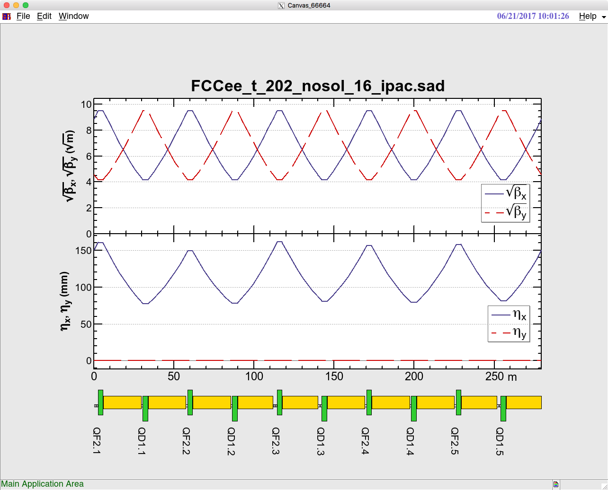
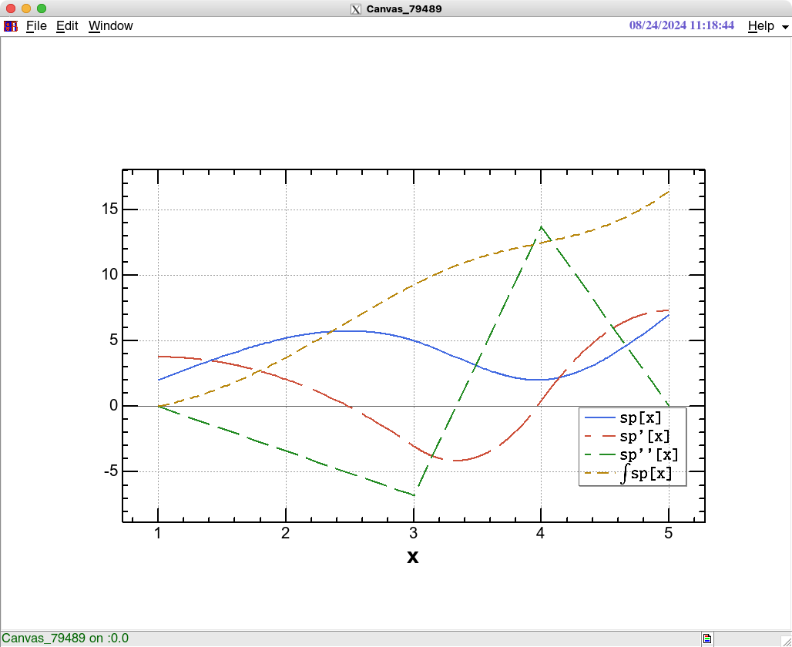
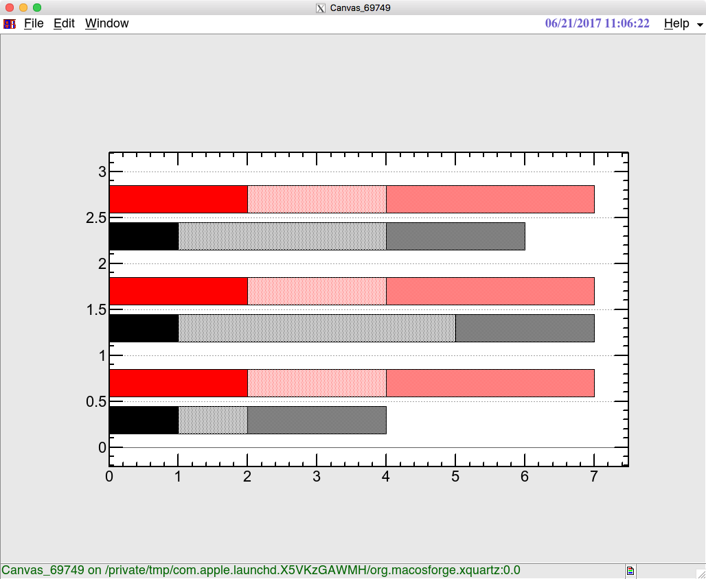
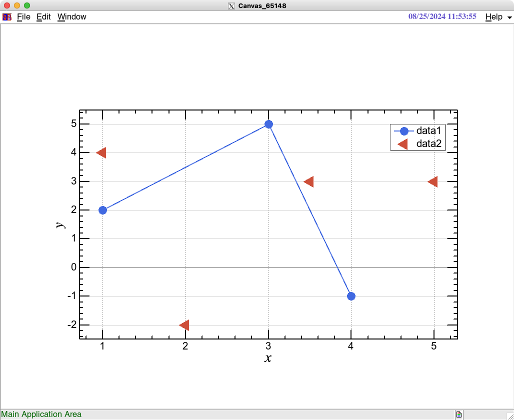
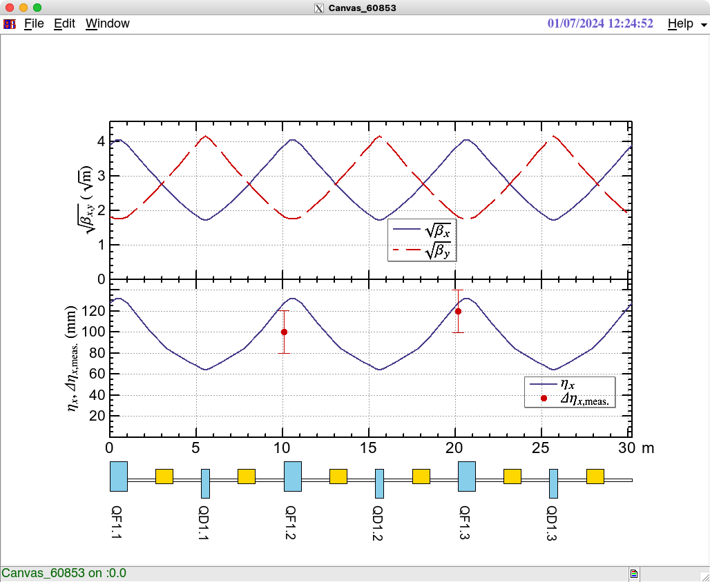
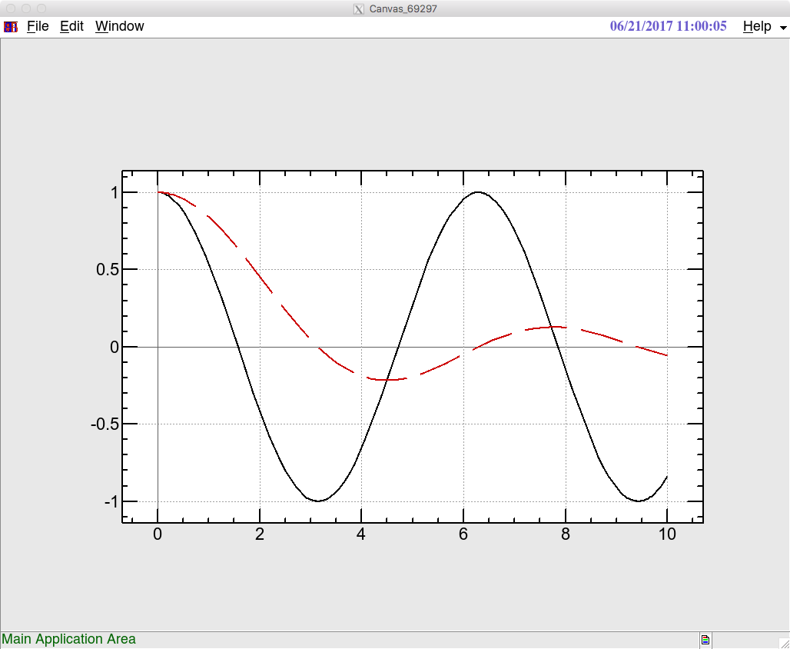

Welcome to SAD/FFS & SADScript with MathJax
Please use browser's search to find out an item. The FFS commands are shown in uppercases. The minimum abbreviated form of each command is enclosed in (). Each command can be shorten down to that. The optional arguments for the commands are usually shown in []. The notation ===> reads "equivalent to" below.

SAD/FFS Examples
ABORT
Terminates SAD immediately.
See also: STOP QUIT SAVE USE VISIT BYE
APPEND(APP)
APP {filename | file-number} switches the output stream to the specified file or the file number.
The output is appended to the existing file.See also: TERMINATE(TERM) CLOSE(CLO) INPUT(IN) READ OUTPUT(OUT) END
ATTRIBUTE(ATTR)
Usage: ATTR element-pattern prints out the current value, minimum and maximum values, COUPLEd element and its coefficient for elements which match the element-pattern.
See also: COUPLE(COUP) set-value-of-element wildcards
beam-line
A beam line is defined in the MAIN level by LINE command as: LINE a = ( [n1*][-]l1 [ [n2*]l2 ...] ) [b = ( ... )]; where l1, l2 are either an element or a line. n1, n2 are positive integers to repeat the same element. An optional negative sign in fromt of element means the negative orientation of the element of the line. A negative orientation of a line is inherited by its elements. The first element of a beam line must be a MARK element, if it is used by FFS, USE, VISIT. Please do not confuse the LINE command in the MAIN level with the LINE function in FFS. A beam line can be accessed within FFS via beam-line-functions as shown below.
See also: elements orientation-of-an-element USE VISIT
-
beam-line-functions
Functions/objects to construct/edit beam lines and elements in FFS.
-
BeamLine
Usage: BeamLine[e1, e2, ...]; where e1, e2 has a form of [ - ][ n* ] x , with x being one of 1) a name (either a symbol or a character string) of an element defined in MAIN. 2) a name (either a symbol or a character string) of a LINE defined in MAIN. 3) a BeamLine object. An optional negative sign specifies the direction and a number n the repetition number in the same way as MAIN. A BeamLine object is automatically expanded to the lowest level whenever it is evaluated. Editing of BeamLine can be done using any List-handling functions such as Join, Insert, Delete, etc. of FFS. A BeamLine object can be used for FFS calculation when it is used as the argument of USE or VISIT commands: Examples: 1) USE BeamLine[IP,QF,QD] 2) aaa=ExtractBeamLine[]; USE Join[aaa,-aaa] In these cases the new beam line becomes a new LINE in the MAIN level, with a name which is created automatically.
See also: ExtractBeamLine PrintBeamLine WriteBeamLine USE VISIT
-
BeamLineName
BeamLineName[] returns the name of the current beam line. If a BeamLine object is used by USE or VISIT, the new beam line becomes a new LINE in the MAIN level, with a name which is created automatically.
-
ExtractBeamLine
Usage: ExtractBeamLine[line] returns a BeamLine object which represents the expanded form of line which has been defined in MAIN. If line is omitted, the current line is assumed.
See also: BeamLine PrintBeamLine WriteBeamLine USE VISIT
-
PrintBeamLine
Usage: PrintBeamLine[b1,.. ,option] writes the BeamLine b1,.. to stdout. If b1.. is omitted the current beam line is assumed. If Format->"MAIN" is given, it writes in the MAIN-input format. If Name->{name1,..} is given, names of BeamLines are also written. The number of Name must be not smaller than number of BeamLines.See also: BeamLine ExtractBeamLine WriteBeamLine USE VISIT
-
WriteBeamLine
Usage: WriteBeamLine[f, b1,.. ,option] writes the BeamLine b1,.. to file f. If b1.. is omitted the current beam line is assumed. If Format->"MAIN" is given, it writes in the MAIN-input format. If Name->{name1,..} is given, names of BeamLines are also written. The number of Name must be not smaller than number of BeamLines.See also: BeamLine ExtractBeamLine PrintBeamLine USE VISIT
-
-
orientation-of-an-element
An element with negative orientation means a reversal of the element along the z-axis. Thus all magnets except for a solenoid does not change the polarity. A solenoid changes the polarity. An RF cavity should change, however, it does not in the current implementation. The edge angles and fringe parameters of the entrance and the exit swap. AX, AY, AZ, EPX, EPY, ZPX, ZPY, R2, R3 of a MARK element are reversed. The orientation is printed out by DISP. It can be accessed by LINE["DIR"] .
See also: beam-line LINE
BYE
Exits from the current beam line and returns to the original beam line where VISIT command was issued. All information specific to the beam line, such as matching conditions are restored. Note that BYE does neither SAVE the values of elements of the leaving beam line, nor RESET the values of elements of the returning beam line.
See also: VISIT USE SAVE RESET STOP QUIT ABORT
character-string
A character-string is expressed by enclosing in "". Special characters are expressed using \: \n new line \r carriage return \t tab \" double quote \ backslash \nnn a character whose octal code is nnn. If a character-string is written over multiple lines, \ must be placed at the end of each line. The length of a character-string is limited to 2^31-1.
-
FromCharacterCode
FromCharacterCode[r_Real] returns a character whose character code is r. FromCharacterCode[l_List] returns a character-string whose character codes are l.
See also: ToCharacterCode
-
StringFill
StringFill[s, sf, n] with strings s and sf, n > 0, returns (s//sf//sf...)[1,n] . StringFill[s, sf, -n] with strings s and sf, n > 0, returns (...sf//sf//s)[-n,-1] .
See also: StringJoin StringJoin (//) StringPart
-
StringJoin
StringJoin[s1, s2, [,s3...]] ===> s1 // s2 [//s3...] concatenates strings s1, s2 [,s3...].
See also: StringJoin (//)
-
StringLength
StringLength[s] returns the length of string s.
-
StringMatchQ
StringMatchQ[s, spat] returns True/False whether string s matches string-patten spat.
See also: wildcards
-
StringPart
s_String[n] returns the n-th character in s. s_String[n1, n2] returns the substring from n1-th through n2-th characters of s. If n1, n2 are negative, they count from the end of the string.
-
StringPosition
StringPosition[s, subs] returns a list of positions of subs in string s. StringPosition[s, subs, n] returns a list of first n positions of subs in string s. Example: StringPosition["abcbcbcbcb","bcb"] returns {{2,4},{4,6},{6,8},{8,10}}. -
StringReplace
StringReplace[s, rules] replaces the parts of string s accoding to rules, which is a Rule or a list of Rules: StringReplace["abcbcbcbc","bcb"->"xyx"] ===> "axyxcxyxc" StringReplace["abcbcbcbc",{"bcb"->"xy","cbc"->"pqrs"}] ===> "axypqrsbc" . -
StringTrim
StringTrim[s] removes the leading and trailing spaces and tabs from s.
-
Symbol
Symbol[s] returns a Symbol whose name is character-string s.
-
ToCharacterCode
ToCharacterCode[s] returns the list of character codes of character-string s.
See also: FromCharacterCode
-
ToExpression
ToExpression[s] converts a character-string s to an expression and evaluate it.
See also: ToString
-
ToString
ToString[expr] evaluates an expression expr, then converts to a character-string. ToString[expr, [FormatType ->] form [, form1...]] converts expr using one or more formats form [,form1...]. Available formats are: InputForm special characters are quoted with \. HoldForm converts expr without evaluation. StandardForm converts with the standard number format and PageWidth. GenelicSymbolForm do not display the generation ($nnn) of local symbols for Module.
See also: $FORM PageWidth StandardForm Module ToExpression
command-syntax
The command syntax in FFS is
expression1 [param1..] [;] expression2..
(1) The input is first evaluated as an expression. If the expression returns a Symbol with the same
name as the expression itself, it is interpreted as an FFS command, otherwise the returned value
is printed out unless it is Null.
(2) Each command takes succeeding its parameters if necessary. A command with indefinite number
of parameters can be terminated by semicolon. Most commands terminate itself at the end of line.
(3) A line can be continued to the next line if a backslash is placed at the end of the line.
(4) An expression continues to the next line if it is not closed in the line.
(5) An exclamation mark comments out the rest of the line.
Example: A command line
QF* .1
means the set-value-of-element command as unless the symbol QF has been defined otherwise. If QF
has been defines as a number, such as QF=2.5, the above command line is interpreted as Times[QF,.1]
then returns .25 .See also: expression functions
components
Components are the objects which consist the beam line. A component simulates an individual magnet,
drift space, or rf-cavity. The parameters of a component is specified the values in the corresponding
element with the same name as the component, which simulates a power supply. Many components can
be attached to the same element. Parameters of each component may deviate from the corresponding
element if machine errors are given.
A component is specified with the form name[.order][{+-}offset], where name is the name of the
component. The number order means the order-th component which belongs to name element, counted from
the beginning of the line starting from 1. Offset is a positive or negative number to specify the
downstream or upstream components from the given component. If order is omitted, the first element
is assumed, and if offset is omitted, zero is assumed.
The end of line is specified by $$$. The first component can be specified by ^^^.See also: elements
constants
There are pre-defined special symbols for constants in FFS: symbol value True 1 False 0 Infinity INF INF INF NaN NaN Pi ArcSin[1]*2 E Exp[1] I Complex[0,1] Degree Pi/180 GoldenRatio (1+Sqrt[5])/2 EulerGamma 0.57721566490153286061
See also: special-variables physical-constants flags expression
CALCULATE(CAL)
Usage: (1) CAL [[NO]EXPAND]]
(2) CAL matching-function1[-] [matching-function2[-]..]
(1) With no argument or with an option [NO]EXPAND, calculates the optics and the matching-functions
using the current values of the components. It prints out the values of the matching-functions specified
either by the matching-function-commands or the second usage of CAL, as described below. If an option
EXPAND is given(default), it expands the beam line before the calculation. If NOEXPAND is given,
it calculates without any expansion. FFS["CAL"] and FFS["GO"] returns the result as a list, whose
format is
{dp, kind, reslist, function-values},
where
dp: a list contains dp/p0 .
kind: a list of kind of the orbit (usually 0, but 1 to 6 for the finite amplitude matching, see
MatchingAmplitude).
reslist: a list of {residual, xstab, ystab}, where
residual: matching residual,
xstab: True when the matrix is stable in X,
ystab: True when the matrix is stable in Y, for each orbit.
Above are lists with length nf (== number of orbits).
function-values: a list of length nc (== number of calculated items). Each element has the form:
{component1, component2, function, list-of-values},
where
component1, component2: fit locations (see FIT).
function: name of the function (see matching-function-commands).
list-of-values: list of the value of the function for each orbit Length nf.
The central orbit comes at the Floor[(n+1)/2]-th element.
(2) With matching-function names, sets the matching-functions at the current fit point to be printed
out after calculation. If the matching-function is followed by a minus sign, it suppresses the print-out.
\nExample:
CALC BX BY CALSee also: GO DISPLAY(DISP) COUPLE(COUP) ATTRIBUTE(ATTR) SHOW FIT matching-function-commands EXPAND CONV CONVERGENCE MatchingResidual FFS
CHROMATICITY(CHRO)
CHRO prints out the chromaticity of QUAD and SEXT in the entire beam line using the simplest formula:
xi_{x,y}=Integrate[-(K1/L) beta_{x,y}(s) ds] for QUAD,
xi_{x,y}=Integrate[-(K2/L) eta_x (s) beta_{x,y}(s) ds] for SEXT.
These formula are not valid when there is x-y coupling or vertical dispersion.CLOSE(CLO)
CLOSE [INPUT(IN)] closes the current input stream and switches it to the previous input stream. CLOSE OUTPUT(OUT) suspends the current output and switches it to the previous output stream.
See also: TERMINATE(TERM) INPUT(IN) READ OUTPUT(OUT) APPEND(APP) END
COUPLE(COUP)
Usage: COUP slave-element master-element coefficient sets the value of the default-keyword of slave-element to be equal to coefficient times the value of the default-keyword of master-element. COUPLE(COUP) cannot be cascaded. The master-element cannot be COUPLEd to any other element. To reset COUPLE, say COUP slave-element slave-element 1. Consider ElementValues to define universal coupling for any keywords.
See also: ATTRIBUTE(ATTR) FREE ElementValues
data-structure
All data and "programs" in SAD Script are expressed either by an atom or a list-structure: head[body1 [,body2...]] where head and body1... are atom or list-structure. Defined atoms are: Real a real number Symbol a symbol String a character-string Pattern a pattern structure for argument matching Currently the lengths of a list-structure, a character-string, and the name of a symbol are limited to 2^31-1. A real number has an accuracy of 8 bytes.
See also: character-string pattern
-
Extract
Extract[f, part [,head]] takes elements specified by part, which is a list of indices or Null. Optional head is applied at each element before evaluation. Example: Extract[{a,b,c,d,e},{3}] returns c Extract[{a,b,c,d,e},{3,4}] is an error Extract[{a,b,c,d,e},{{3},{4}}] returns {c,d} Extract[Hold[{a,b,c,d,e}],{1,3}, Hold] returns Hold[c]See also: Part
-
Head
Head[f] takes the head of an expression f.
-
Length
Length[f] returns the number of elements in the body of a structure f.
-
List
List is a special symbol to be the head of generic list-structure. List[a, b, c, ...] is represented as {a, b, c, ...}. A list is also used to represent a mathematical vector and matrices. Most of mathematical functions are operated at each element of a list. -
Part
Part[f, a [,b ,...]] ===> f[[a, [,b ...]]] takes the a-th element of structure f. f[[a, b]] is equivalent to f[[a]][[b]]. If a is zero, it takes the head of f. if a is negative, f[[a]] os equivalent to f[[Length[f] + 1 + a]]. If a is a list of Reals {a1, a2, ...}, f[[a]] returns {f[[a1]], f[[a2]], ...}. If a is Null, f[[,b]] is returns {f[[1,a]], ..., f[[Length[f], b]]}.See also: Length Head Extract
defining-functions
A function is defined by one of the following forms: f[pat1 [,pat2...]] (:)= body; f[pat1 [,pat2...]] ^(:)= body; g//:f[pat1 [,pat2...]] (:)= body; where pat1 [,pat2...] are patterns (including expressions). If UpSet(^=) or UpSetDelayed (^:=) is used, the definition is associated with the symbol in the first level of l.h.s. If TagSet(//:) is used, the definition is associated with the symbol on the left of //: . The patters can be an expression including constants. The definition with constant arguments can be accessed faster than searching a list, in general, so they are suitable for a data base. Definitions with constant arguments have higher priorities than with patterns.
See also: UpSet UpSetDelayed TagSet(/:) pattern
dynamics
-
independent-variable
SAD uses \(s\), the distance along a reference line as the independent variable. The reference line is either a straight line or an arc through an element. The arc is chosen for elements with nonzero ANGLE such as BEND and MULT, otherwise the reference line is a straight line. The reference line is an abstract object to describe the motion of particles, and not necessarily to be an orbit of a particle. Even the orbit is helical, for instance in a solenoid, the reference line is straight. An arc is always bent locally horizontally.
Such reference lines can be discontinuous at some locations such as an end of tilted SOL or COORD. SAD automatically calculates transformation of variables at such locations.See also: Lagrangean Hamiltonian
-
Lagrangean
The primary position variables are \((x,y,s)\), where \(x\) and \(y\) are the displacements along the normal and binormal vectors, \({\bm n}\) and \({\bm b}\), respectively. Let \({\bm t}\) denote the tangential vector along \(s\), then \({\bm n}\), \({\bm b}\), \({\bm t}\) consist a right-handed system.
The action in \(t\) is expressed by \[\begin{align} S=&\int L_tcdt\ ,\\ L_t=&-\frac{mc}{p_0}\sqrt{1-\dot x^2+\dot y^2+(1+x/\rho)^2\dot s^2}+a_x\dot x+a_y\dot y+(1+x/\rho)a_s\dot s\ ,\end{align}\] where \(p_0\) and \((a_x,a_y,a_z)=e(A_x,A_y,A_z)/p_0\) are the design momentum and the normalized vector potentials, respectively, and \(\dot\ \) denotes the derivative by \(ct\). Currently SAD dose not handle the electrostatic potential.
As SAD uses \(s\) for the independent variable instead of \(t\), the Lagrangean \(L\) for \(s\) is written as \[\begin{align} L=&L_t\frac{dct}{ds}\ ,\\ =&-\frac{mc}{p_0}\sqrt{c^2t'^2-x'^2+y'^2+(1+x/\rho)^2}+a_xx'+a_yy'+(1+x/\rho)a_s\ ,\end{align}\] where \('\) is the derivative by \(s\).See also: Hamiltonian independent-variable
-
Hamiltonian
The Lagrangean \(L\) defines the canonical momenta as \[\begin{align} p_x=&\frac{\partial L}{\partial x'}=\frac{mcx'}{p_0\sqrt{c^2t'^2-x'^2-y'^2-(1+x/\rho)^2}}+a_x\ ,\\ p_y=&\frac{\partial L}{\partial y'}=\frac{mcy'}{p_0\sqrt{c^2t'^2-x'^2-y'^2-(1+x/\rho)^2}}+a_y\ ,\\ p_t=&\frac{\partial L}{\partial t'}=-\frac{mc^3t'}{p_0\sqrt{c^2t'^2-x'^2-y'^2-(1+x/\rho)^2}}\ ,\end{align}\]which derives the Hamiltonian as \[\begin{align} H_t=&x'p_x+y'p_y+t'p_t-L\\ =&-\left(\sqrt{-c^2 m^2/p_0^2 + p_t^2/c^2 - (p_x-a_x)^2 + (p_y-a_y)^2}+a_s\right)\left(1+\frac{x}{\rho}\right)\ .\end{align}\] Instead of the canonical variables \((t,p_t)\), SAD uses another set \((z,p)\), The variable \(z\) means the logitudinal postion, and \(p\) the total momentum, which is more convenient than \(p_t\) especially in a low-energy case, ie., \(\gamma \sim 1\). The canonical variables \((z,p)\) as well as the Hamiltonian \(H\) are obtained using a mother function \[\begin{align} G=&G(p_t,z)=\frac{z}{c}\sqrt{p_t^2-m^2c^4/p_0^2}-t_0(s)\ ,\\ p=&\frac{\partial G}{\partial z}=\frac{\sqrt{p_t^2p_0^2-m^2c^4}}{p_0}\ ,\\ t=&\frac{\partial G}{\partial p_t}=-z\frac{\sqrt{p^2p_0^2-m^2c^2}}{c p p_0}+t_0(s)\ ,\\ H=&H_t-\frac{\partial G}{\partial s}\\ =&-\left(\sqrt{p^2 - (p_x-a_x)^2 - (p_y-a_y)^2}+a_s\right)\left(1+\frac{x}{\rho}\right)+\frac{E}{p_0v_0}\ ,\end{align}\] where \(t_0(s)\) is the design arrival time at location \(s\), \(E=\sqrt{m^2c^4+p_0^2p^2}\) the energy of the particle, and \(v_0=1/t_0'(s)\) the design velocity. The longitudinal position \(z\) is written as \[\begin{align} z=&-v\left(t-t_0(s)\right)\ ,\end{align}\] where \(v\) is the total velocity of the particle. Note that \(v>0\) for the head of a bunch.
Thus the canonical variables in SAD are: \[\begin{align} (x,p_x,y,p_y,z,\delta\equiv p-1)\ .\end{align}\]
See also: Lagrangean independent-variable
-
remarks-on-dynamics
There are several remarks on the dynamics in SAD:
The Hamiltonian describes the motion of particles in the body of an element. Some effects at the boundary of an element, such as fringe field, are not expressed by that Hamiltonian. SAD treats them by canonical transformations approximating these effects. All transformations in SAD are symplectic up to the round-off errors, except radiations.
In a case of a linac, where the design momentum \(p_0\) changes along the beam line needs a special treatment.
The Hamiltonian above analytical solutions in the case of constant field without acceleration, ie., in a solenoid + dipole field. SAD uses such analytic solutions.
If the field is linear in \(x\) and \(y\) such as for QUAD, and there is no acceleration, the Hamiltonian truncated up to the second order of \((x,p_x,y,p_y)\) has an analytic solution. SAD uses that solution and adds the nonlinear corrections coming from the \(\sqrt{\ }\) term by slicing an element. This method gives the exact linear transformation at least around the design orbit.
Transformations shown in this manual are not necessarily coded as they are. Considerations for round-off errors as well as computing efficiency are taken into account in actual routines.
Transformations shown here are basically for trackings. EMITTANCE(EMIT) and CALC may use slightly different ones depending on the element.
See also: Hamiltonian
-
x-y-coupling
The transformation matrix from the physical coordinate \((x,p_x,y,p_y)\) to the \(x\)-\(y\) decoupled coordinate \((X,P_x,Y,P_y)\) is written as \[\begin{align} {\rm R}=\left(\begin{matrix}\mu {\rm I} & {\rm J}{\rm r}^T{\rm J}\\{\rm r}&\mu {\rm I}\end{matrix}\right)\end{align}\] with a submatrix \[\begin{align} {\rm r}=\left(\begin{matrix}{\tt R1}&{\tt R2}\\ {\tt R3} & {\tt R4}\end{matrix}\right)\ ,\end{align}\] where \[\begin{align} &\mu^2 + \det({\rm r}) = 1,\\ &{\rm I}\equiv \left(\begin{matrix}1 & 0 \\ 0 & 1 \end{matrix}\right)\ ,\\ &{\rm J}\equiv\left(\begin{matrix}0 & 1 \\ -1 & 0 \end{matrix}\right)\ .\end{align}\] The value of function DETR is equal to \(\det({\rm r})\) in this case.
Let T stand for the physical transfer matrix from location 1 to location 2, then the transformation in the decoupled coordinate is diagonalized as \[\begin{align} {\rm R}_2{\rm T}{\rm R}_1^{-1} = \left(\begin{matrix}{\rm T}_X & 0 \\ 0 & {\rm T}_Y \end{matrix}\right)\ .\end{align}\]
The Twiss parameters are defined for the 2 by 2 matrices \({\rm T}_X\) and \({\rm T}_Y\).
If \(\det({\rm r})\ge1\), the above condition for \(\mu\) is violated. In such a case, an alternative form of R is used: \[\begin{align} {\rm R}=\left(\begin{matrix}{\rm J}{\rm r}^T{\rm J} & \mu {\rm I} \\\mu {\rm I} &{\rm r}\end{matrix}\right)\ ,\end{align}\] where \(\mu^2 + \det({\rm r}) = 1\). The function DETR shows a number \(a-\det({\rm r})\), where \(a = 1.375\). thus the alternative form is used when \(\det({\rm r}) >= 0.625\).
See also: DISPLAY(DISP) optical-functions matching-function-commands
-
extended-Twiss-parameters
A symplectic matrix such as the normal mode matrix can be expressed in terms of the extended Twiss parameters. In 6 by 6 case, those are AX BX ZX EX PSIX ZPX EPX R1 R2 AY BY ZY EY R3 R4 PSIY ZPY EPY AZ BZ PSIZ . A(X,Y,Z), B(X,Y,Z) are alphas and betas in the usual sense, after a diagonalization to 2 by 2 submatrices. PSI(X,Y,Z) are the rotation angle to set one the coordinate to parallel to the (X,Y,Z) axes. R(1,2,3,4) are the components of the x-y coupling matrix (see x-y-coupling). E(X,PX,Y,PY) are "dispersions" which decouples synchro-beta coupling terms together with Z(X,PX,Y,PY). Those parameters should agree with what FFS calculates in the case of no synchro-beta couplings.See also: x-y-coupling optical-functions
-
definitions
Let V denote the matrix to define the normal mode, i.e., \[\begin{align} {\bm U} = {\rm V}{\bm u}\ ,\end{align}\] where \({\bm U} = (X, P_x, Y, P_y, Z, P_z)\) and \({\bm u} = (x, p_x, y, p_y, z, \delta\equiv p-1)\) are the normal and physical coordinates, respectively. The matrix V can be expressed as \[\begin{align} {\rm V} = {\rm PBR}_6{\rm H}\ ,\end{align}\] where \[\begin{align} {\rm H} =&\left(\begin{matrix}\left(1-\frac{\det{\rm H}_x}{1+a}\right){\rm I}& \frac{{\rm H}_x{\rm J}_2{\rm H}_y^T{\rm J}_2}{1+a}&-{\rm H}_x\\ \frac{{\rm H}_y{\rm J}_2{\rm H}_x^T{\rm J}_2}{1+a}& \left(1-\frac{\det{\rm H}_y}{1+a}\right){\rm I}&-{\rm H}_y\\ -{\rm J}_2{\rm H}_x^T{\rm J}_2 & -{\rm J}_2{\rm H}_y^T{\rm J}_2 & a {\rm I}\end{matrix}\right)\ ,\\ {\rm R}_6=&\left(\begin{matrix} {\rm R} & \begin{matrix}0 & 0\end{matrix} \\ \begin{matrix}0&0\end{matrix} & {\rm I}\end{matrix}\right)= \left(\begin{matrix} b {\rm I}& {\rm J}_2{\rm r}^T{\rm J}_2 & 0\\ {\rm r}&b{\rm I} & 0\\ 0&0&{\rm I}\end{matrix}\right)\ ,\\ {\rm PB}=&\left(\begin{matrix}{\rm P}_x{\rm B}_x & 0 & 0\\ 0 & {\rm P}_y{\rm B}_y & 0\\ 0& 0& {\rm P}_z{\rm B}_z \end{matrix}\right)\ ,\end{align}\] with \[\begin{align} &a^2+\det{\rm H}_x +\det{\rm H}_y=1\ ,\\ &b^2+\det{\rm R}=1\ .\end{align}\] Symbols I,J\(_2\), H\(_{x,y}\), r, B\(_{x,y,z}\), P\(_{x,y,z}\) above are 2 by 2 matrices: \[\begin{align} {\rm I}\equiv&\left(\begin{matrix}1 & 0 \\ 0 & 1\end{matrix}\right)\ ,\\ {\rm J}_2\equiv&\left(\begin{matrix}0 & 1 \\ -1 & 0\end{matrix}\right)\ ,\\ {\rm r}\equiv&\left(\begin{matrix}{\tt R1} & {\tt R2} \\ {\tt R3} & {\tt R4}\end{matrix}\right)\ ,\\ {\rm B}_{x,y}\equiv&\left(\begin{matrix}\frac{1}{\sqrt{\beta_{x,y}}} & 0 \\ \frac{\alpha_{x,y}}{\sqrt{\beta_{x,y}}} & \sqrt{\beta_{x,y}}\end{matrix}\right)\ ,\\ {\rm P}_{x,y,z}\equiv&\left(\begin{matrix}\cos\psi_{x,y,z} & \sin\psi_{x,y,z} \\ -\sin\psi_{x,y,z} & \cos\psi_{x,y,z}\end{matrix}\right)\ .\end{align}\] Matrices H\(_{x,y}\) define dispersions as \[\begin{align} \left(\begin{matrix} {\tt ZX} & {\tt EX}\\{\tt ZPX}& {\tt EPX}\\ {\tt ZY} & {\tt EY}\\{\tt ZPY}& {\tt EPY}\end{matrix}\right)\equiv {\rm R} \left(\begin{matrix} {\rm H}_x\\{\rm H}_y\end{matrix}\right)\ .\end{align}\]
-
DISPLAY(DISP)
Usage: DISP_LAY [keywords] [pattern-string] [region] Displays values of various optical-/geometric-functions at the components given by the pattern-string in the region (see region) in the current beam line. It has several display modes specified by the keywords. As the default, it displays AX, BX, NX, EX, EPX, AY, BY, NY, EY, EPY, LENG, the length and the value of the default-keyword of the component. Each line refers to the entrance of each component of the line. The end of the beam line has the name "$$$". The first component can be specified by "^^^". DISP does not calculate the functions to be displayed, so CALCULATE(CALC) is necessary whenever values of components are updated.
See also: TYPE(T) optical-functions geometric-functions
-
ACCELERATION(A)
DISP A displays the nominal energy, energy deviation(DDP), longitudinal position(z), and emittances for a transport line with accelerating cavities. The flag TRPT must be on.
See also: TRPT RING elements CAVI special-variables EMITX EMITY DP
-
ALL
ALL is a word to choose the entire beam line for the region to be displayed.
See also: region pattern-string
-
BEAM(B)
DISP B displays the beam sizes and the projected Twiss parameters calculated either by Twiss parameters or the EMIT command with the CODPLOT flag. Example: EMITX=...; EMITY=...;DP=...; BEAMSIZE(BEAM) DISP BSee also: BEAMSIZE(BEAM) EMITTANCE(EMIT) CODPLOT GAUSS UNIFORM special-variables EMITX EMITY DP
-
DUMPOPTICS(D)
DISP D displays all matching-functions in one line suitable to be read by a spread-sheet program.
See also: optical-functions geometric-functions matching-function-commands
-
GEOMETRY(G)
DISP G displays geometric information of the beam line. It shows the geometry at the coordinate, except for a SOL region, where the geometry at the orbit is shown.
See also: geometric-functions matching-function-commands
-
OGEOMETRY(OG)
DISP OG displays geometric information at the orbit.
See also: geometric-functions matching-function-commands
-
ORBIT(O)
DISP O displays the orbits DX, DPX, DY, DPY together with the other optical-functions.
See also: optical-functions matching-function-commands
-
pattern-string
The components in the current region can be selectively displayed by the DISP command using the pattern-string. The pattern-string is a character string involving the wildcards to match the name of the components. Note that the components are chosen in the current region, and the keyword ALL is necessary to extend it to the entire beam line.
See also: DISPLAY(DISP) wildcards components region ALL
-
PHYSICAL(P)
DISP P displays the physical dispersions PEX, PEPX, PEY, PEP, together with the 1D optical parameters.
See also: optical-functions matching-function-commands
-
region
Region for DISPLAY(DISP) is specified as DISP .... begin [end] with begin and end having the form name[.order][{+-}offset] (see components). Example: DISP ... QF.2-10 QD+5 displays functions starting at 10 elements upstream from the entrance of the second QF through 5 elements downstream from the entrance of the first QD. The region for DISP is kept after once set. It is shown in the second part of the prompt when FFSPRMPT is ON, and also seen by the STATUS(STAT) command. The components which match the pattern-string in DISP are only chosen in the current region.See also: ALL pattern-string components STATUS(STAT)
-
RMATRIX(R)
DISP R displays the components of the x-y coupling matrix R together with the 1D optical parameters. See x-y-coupling.
See also: x-y-coupling optical-functions matching-function-commands
-
Z
DISP Z displays muatching functions related to the Z plane: AZ BZ NZ DZ DDP ZX ZPX ZY ZPY , which are obtained by CAL/GO with CALC6D.
See also: extended-Twiss-parameters CALC6D CALC4D
DRAW
Usage: DRAW [begin end] fun1 [fun2..] [& fun11 [fun12..]] [element-pattern]
draws a plot of optical functions in multi columns. It calls OpticsPlot internally. Available functions
are all matching-functions (except LENG, TRX, TRY, GX, GY, GZ, CHI1, CHI2, CHI3) and additional functions.
If functions are separated by ampersand (&), these are plotted in a separated window.
If begin- and end-components are specified, the plot region is limited between them. If the end-component
comes earlier than the begin-components, it wraps the plot around the beam line.
If the optional element-pattern is given, it draws the beam-line lattice with the labels for elements
which match element-pattern. If LAT is specified for element-pattern, the lattice is drawn without
label.
A character string assigned to TITLE is shown as the FrameLabel on the top of the plot.
Example:
TITLE="FCCee_t_202_nosol_16_ipac.sad";
Draw$Option={Thickness->2};
DRAW BX BY & EX EY Q*;

See also: OpticsPlot special-variables TITLE matching-function-commands OUTPUT(OUT) TERMINATE(TERM) GEO DISPLAY(DISP) wildcards
-
Draw$Option
Draw$Option is a list of rules to specify Graphics options for the entire DRAW. If you need option for each column, use OpticsPlot
See also: DRAW OpticsPlot Graphics
DUMP
Usage: DUMP component-pattern [component-pattern1..] prints out the current machine errors of components which match component-pattern.
See also: machine-error-commands components wildcards
elements
An element in FFS represents an object which has a unique name and several keywords with values. This simulates a power supply of a magnet. An element has one or more components, which correspond to individual magnets in a beam line. Each component may have different values from the values of the corresponding element. This simulates the machine error which varies magnet to magnet The value of an element can be saved to or recovered from the element-save-buffer by SAVE or RESET commands. Different beam lines can share the same element, and their values can be different to each other, but they have the common element-save-buffer. Therefore the value of an element can be transferred between beam lines by SAVE and RESET command through the element-save-buffer. An element is created only in SAD MAIN level. In the definition, if a keyword is omitted, the previous definition is unchanged. All keywords have the default value zero. In FFS, it is only possible to change their values.
See also: TYPE(T) set-value-of-element Element
-
APERT
An aperture. Only valid in tracking. A particle with
\begin{align}\begin{split} &\frac{(x-{\tt DX})^2}{{\tt AX}^2}+\frac{(y-{\tt DY})^2}{{\tt AY}^2}< 1\\ \&\&\ &\min({\tt DX1},{\tt DX2})< x< \max({\tt DX1},{\tt DX2})\\ \&\&\ &\min({\tt DY1},{\tt DY2})< y< \max({\tt DY1},{\tt DY2}) \end{split}\end{align}can pass through the aperture, otherwise it is lost and a message is printed out. If AX or AY is zero (default), they are interpreted as infinity. If AX <=> 0 && AY <=> 0 and (DX1 == DX2 or DY1 == DY2) then the aperture is only determined by AX and AY.
-
BEND
A bending magnet.
-
AE1
The absolute face angle at the entrance. The effective face angle is E1 * ANGLE + AE1, and a positive angle at the entrance corresponds to a surface with dx/ds > 0.
See also: E1 AE2 ANGLE
-
AE2
The absolute face-angle at the exit to the bending angle. The effective face angle is E2 * ANGLE + AE2, and a positive angle at the exit corresponds to a surface with dx/ds < 0.
See also: E2 AE1 ANGLE
-
ANGLE
The bending angle. If positive, it bends the orbit in x-s plane toward negative-x-direction. ANGLE determines the geometry of the beam line, while K0 represents a dipole kick on top of the bending angle given by ANGLE, i.e., the total deflection of the beam is given of ANGLE + K0.
See also: K0
-
DISFRIN
If nonzero, the nonlinear Maxwellian fringe is suppressed.
-
DISRAD
If nonzero, the synchrotron radiation in the particle-tracking is inhibited.
See also: RAD
-
DROTATE
Additional rotation in x-y plane to simulate a rotation error. DROTATE does not affect the geometry of the ring.
See also: DX DY ROTATE
-
DX
Horizontal displacement of magnet. This applied before the rotation by ROTATE.
See also: DY ROTATE DROTATE
-
DY
Vertical displacement of magnet. This applied before the rotation by ROTATE.
See also: DX ROTATE DROTATE
-
E1
The ratio of the face-angle at the entrance to the bending angle. The effective face angle is E1 * ANGLE + AE1, and a positive angle at the entrance corresponds to a surface with dx/ds > 0. For example, a symmetrically-placed rectangular magnet has E1 = 0.5 and E2 = 0.5.
See also: AE1 E2 ANGLE
-
E2
The ratio of the face-angle at the exit to the bending angle. The effective face angle is E2 * ANGLE + AE2, and a positive angle at the exit corresponds to a surface with dx/ds < 0. For example, a symmetrically-placed rectangular magnet has E1 = 0.5 and E2 = 0.5.
See also: AE2 E1 ANGLE
-
F1
Length of the slope of the field at the edge as: By(s) | ******* | * | * |* * *| * | * | ----*******---+--------- s | | || | F1 | Only the effects up to y^4 in Hamiltonian are taken into account. A more rigorous definition is\begin{align}\begin{split} {\tt F1}=6 \int_{-\infty}^\infty{\frac{B_y(s)}{B_0}-\left(\frac{B_y(s)}{B_0}\right)^2}ds, \end{split}\end{align}where integration is done over one fringe. The transformation of the linear fringe of the entrance of a bend is
\begin{align}\begin{split} \exp(:V:),\qquad V=-\frac{1}{p}\left(\frac{{\tt F1}^2}{24\rho_b}p_x-\frac{\tt F1}{12\rho_b}y^2 +\frac{y^4}{6{\tt F1}\ \rho_b^2}\right) \end{split}\end{align}where f is the length of fringe given by F1, and rhob bending radius at the design momentum. At the exit, the sign of rhob is changed. This linear fringe also changes the path length in the body of the bend as
\begin{align}\begin{split} L'={\tt L}-\frac{({\tt ANGLE\ F1})^2}{24{\tt L}}\frac{\sin(({\tt ANGLE}(1-{\tt E1}-{\tt E2})-{\tt AE1}-{\tt AE2})/2)}{\sin({\tt ANGLE}/2)} \end{split}\end{align}to maintain the geometric position of the design orbit, i.e., you have to increase the bend field a little bit to keep the orbit unchanged. Unlike a quadrupole, the effect of linear fringe is always applied at both the entrance and the exit, otherwise you cannot obtain a circular design orbit. Use FB1 and FB2 to specify the values of entrance and exit separately.
See also: FRINGE FB1 FB2
-
FB1
F1 at the entrance. Actually F1 + FB1 is used at the entrance.
See also: F1 FB2
-
FB2
F1 at the exit. Actually F1 + FB2 is used at the exit.
See also: F1 FB1
-
FRINGE
When FRINGE is non-zero, the effect of the linear fringe F1 is taken into account both at the entrance and the exit. The transformation of the linear fringe of the entrance of a bend is
\begin{align}\begin{split} \exp(:V:),\qquad V=-\frac{1}{p}\left(\frac{{\tt F1}^2}{24\rho_b}p_x-\frac{\tt F1}{12\rho_b}y^2 +\frac{y^4}{6{\tt F1}\ \rho_b^2}\right) \end{split}\end{align}where f is the length of fringe given by F1, and rhob bending radius at the design momentum. At the exit, the sign of rhob is changed. This linear fringe also changes the path length in the body of the bend as
\begin{align}\begin{split} L'={\tt L}-\frac{({\tt ANGLE\ F1})^2}{24{\tt L}}\frac{\sin(({\tt ANGLE}(1-{\tt E1}-{\tt E2})-{\tt AE1}-{\tt AE2})/2)}{\sin({\tt ANGLE}/2)} \end{split}\end{align}to maintain the geometric position of the design orbit, i.e., you have to increase the bend field a little bit to keep the orbit unchanged. Unlike a quadrupole, the effect of linear fringe is always applied at both the entrance and the exit, otherwise you cannot obtain a circular design orbit. Use FB1 and FB2 to specify the values of entrance and exit separately.
See also: F1
-
K0
The normal 2-pole magnetic field component (times the length L).
\begin{align}\begin{split} {\tt K0}=\frac{B^{(0)}{\tt L}}{B\rho}, \end{split}\end{align}where L is the effective length of the component. Positive sign means horizontal focusing.
See also: L
-
K1
The normal 4-pole magnetic field component (times the length L).
\begin{align}\begin{split} {\tt K1}=\frac{B^{(1)}{\tt L}}{B\rho}, \end{split}\end{align}where L is the effective length of the component. Positive sign means horizontal focusing.
See also: L
-
L
The effective length along the arc of the orbit.
-
ROTATE
Rotation in x-y plane. After displacing the magnet by DX and DY, rotate the magnet around the local s-axis by -(amount given by ROTATE), then place the component. At the exit rotate back the magnet around the local s-axis at the exit, then take out displacement.
See also: DX DY DROTATE
-
transformation:BEND
The transformation of a bend depends on the value of K1. If K1 is zero, it is a series of transformations: (transformation due to misalignments) (drift to the entrance face)
\begin{align}\begin{split} x_2 &= \frac{x_1}{\cos\psi_1 - (p_{x1}/p_{z1})\sin\psi_1 }\ ,\\ p_{x2}&= p_{x1} \cos\psi_1 + p_{z1} \sin\psi_1\ ,\\ y_2 &= y_1 + \frac{p_{y1}}{p_{z1}}x_2\sin\psi_1\ ,\\ z_2 &= z_1 - \frac{p_1}{p_{z1}} x_2 \sin\psi_1\ ,\\ {\rm where\ } \psi_1 &\equiv {\tt ANGLE} \times {\tt E1} + {\tt AE1} \end{split}\end{align}(linear fringe at entrance face)
\begin{align}\begin{split} x_2 =& x_1 + \varDelta x_{fr} \frac{p_1 - p_0}{p_1}\ ,\\ p_{y2} =& p_{y1} + y_1\frac{\varDelta y_{fr} - \varDelta y_{fra} y_1^2}{p_1^2}\ ,\\ z_2 =& z_1 + \frac{\varDelta x_{fr} p_{x1} + (\varDelta y_{fr} - \varDelta y_{fra} y_1^2/2) y_1^2/(2 p_1)}{p_1}\ ,\\ {\rm where\ }\varDelta x_{fr} \equiv& \frac{{\tt F1}^2}{24 \rho_b}\ ,\\ \varDelta y_{fr} \equiv& \frac{\tt F1}{6 \rho_b^2}\ ,\\ \varDelta y_{fra}\equiv& \frac{2}{3} \frac{1}{{\tt F1} \rho_b^2}\ ,\\ \rho_b \equiv& \frac{L'}{{\tt ANGLE} + {\tt K0}}\ ,\\ L'\equiv&{\tt L}-\frac{({\tt ANGLE\ F1})^2}{24{\tt L}}\\ &\times\frac{\sin(({\tt ANGLE}(1-{\tt E1}-{\tt E2})-{\tt AE1}-{\tt AE2})/2)}{\sin({\tt ANGLE}/2)}\ . \end{split}\end{align}(nonlinear fringe at entrance)
\begin{align}\begin{split} x_2&=x_1 + y_1^2 (1-\frac{y_1^2}{12\rho_b^2}) \frac{p_1^2}{2 \rho_b (p_1^2 - p_{x1}^2)^{3/2}}\ ,\\ p_{y2}&= p_{y1} - p_{x1} (1-\frac{y_1^2}{6\rho_b^2}) \frac{y_1}{p_1 \rho_b \sqrt{p_1^2 - p_{x1}^2}}\ ,\\ z_2&=z_1 - p_{x1} y_1^2 (1-\frac{y_1^2}{12\rho_b^2}) \frac{p_1}{2 \rho_b (p_1^2 - p_{x1}^2)^{3/2}}\ . \end{split}\end{align}(body of bend)
\begin{align}\begin{split} p_{x2}=&-\frac{\rho_0}{\rho_b} (\sin\psi_2 + \sin(\omega + \psi_1))\\ &+ p_{z1}\sin\omega + p_{x1}\cos\omega - \frac{x_1}{\rho_b \sin\omega}\ ,\\ x_2 =& x_1 \cos\omega + \rho_b (p_{z2} - p_{z1}\cos\omega + p_{x1}\sin\omega)\\ &+\rho_0 (\cos(\omega+\psi_1) - \cos\psi_2)\ ,\\ y_2 =& y_1 + s \frac{p_{y1}}{\sqrt{p_1^2 - p_{y1}^2}}\ ,\\ z_2 =& z_1 - s \frac{p_1}{\sqrt{p_1^2 - p_{y1}^2}} + \frac{v_1}{v_0} L'\ ,\\ {\rm where\ } \rho_0 \equiv& \frac{L'}{\tt ANGLE}\ ,\\ \omega \equiv& {\tt ANGLE} - \psi_1 - \psi_2\ ,\\ s \equiv&{\tt ANGLE}\times\rho_b\\ &\times\left(\sin^{-1}\frac{p_{x1}}{\sqrt{p_1^2 - p_{y1}^2}} - \sin^{-1}\frac{p_{x2}}{\sqrt{p_2^2 - p_{y2}^2}} + \omega\right)\ . \end{split}\end{align}(nonlinear fringe at exit)
\begin{align}\begin{split} x_2&=x_1 - y_1^2 (1-\frac{y_1^2}{12\rho_b^2}) \frac{p_1^2}{2 \rho_b (p_1^2 - p_{x1}^2)^{3/2}}\ ,\\ p_{y2}&= p_{y1} + p_{x1} (1-\frac{y_1^2}{6\rho_b^2}) \frac{y_1}{p_1 \rho_b \sqrt{p_1^2 - p_{x1}^2}}\ ,\\ z_2&=z_1 + p_{x1} y_1^2 (1-\frac{y_1^2}{12\rho_b^2}) \frac{p_1}{2 \rho_b (p_1^2 - p_{x1}^2)^{3/2}}\ . \end{split}\end{align}(linear fringe at exit face)
\begin{align}\begin{split} x_2 &= x_1 - \varDelta x_{fr} \frac{p_1 - p_0}{p_1}\ ,\\ p_{y2} &= p_{y1} + y_1\frac{\varDelta y_{fr} - \varDelta y_{fra} y_1^2}{p_1^2}\ ,\\ z_2 &= z_1 + \frac{-\varDelta x_{fr} p_{x1} + (\varDelta y_{fr} - \varDelta y_{fra} y_1^2/2) y_1^2/(2 p_1)}{p_1}-\varDelta z_{fr}\ ,\\ {\rm where\ } \varDelta z_{fr}&\equiv \varDelta x_{fr} \left(\sin({\tt ANGLE\ E1} + {\tt AE1}) + \sin({\tt ANGLE\ E2} + {\tt AE2}) \right)\ . \end{split}\end{align}(drift from the exit face)
\begin{align}\begin{split} p_{x2} =& p_{x1}\cos\psi_2 + p_{z1}\sin\psi_2\ ,\\ x_2 =& x_1 (\cos\psi_2 + \frac{p_{x2}}{p_{z2}} \sin\psi_2)\ ,\\ y_2 =& y_1 + \frac{p_{y2}}{p_{z2}} x_1 \sin\psi_2\ ,\\ z_2 =& z_1 - x_1 \frac{p_2}{p_{z2}}\sin\psi_2\ ,\\ {\rm where\ } \psi_2 \equiv& {\tt ANGLE} \times {\tt E2}\ . \end{split}\end{align}(transformation due to misalignments) If K1 is nonzero, the effects from E1 and E2 are approximated by thin quadrupoles. Then the body is subdivided into 1 + floor(sqrt(abs(K1 L')/(12 10^-5 EPS))) pieces (EPS = 1 is used when EPS = 0), and the bend-body transformation above is done for each piece and the kick from K1 is applied alternatively. In FFS optics and Emittance calculations, or when the synchrotron radiation is turned on, the same algorithm as K1 <> 0 is applied.
See also: coordinates
-
-
CAVI
Accelerating structure.
-
DISFRIN
If nonzero, the Maxwellian fringe is suppressed. The effects of DISFRIN and FRINGE are summarized as DISFRIN=0 DISFRIN<>0 FRINGE=0 entr & exit none FRINGE=1 entr none FRINGE=2 exit none FRINGE=3 entr & exit noneSee also: FRINGE
-
DPHI
Relative phase offset. The stable synchrotron phase above the transition is near PHI = 0. The acceleration is given by
\begin{align}\begin{split} \varDelta E =& - e*\left({\tt VOLT}+{\tt DVOLT} +{\tt V1}\ x+\frac{{\tt V20}\ x^2+{\tt V02}\ y^2}{2}+{\tt V11}\ x y\right)\\ &\times \sin(2\pi\ {\tt FREQ}(t-t_s) + {\tt PHI} + {\tt DPHI})\ , \end{split}\end{align}where ts is the equilibrium time determined by the valance between the acceleration and the radiation loss around the ring. DPHI is not taken into account to determine the design momentum p0(s).
See also: FREQ VOLT DVOLT V1 V20 V11
-
DVOLT
Additional accelerating voltage to be added to VOLT without affecting the design momentum.
See also: VOLT
-
DX
Horizontal displacement of magnet. This applied before the rotation by ROTATE.
See also: DY ROTATE DROTATE
-
DY
Vertical displacement of magnet. This applied before the rotation by ROTATE.
See also: DX ROTATE DROTATE
-
FREQ
Rf frequency. If this keyword is nonzero, the keyword HARM is ignored.
\begin{align}\begin{split} \varDelta E =& - e*\left({\tt VOLT}+{\tt DVOLT} +{\tt V1}\ x+\frac{{\tt V20}\ x^2+{\tt V02}\ y^2}{2}+{\tt V11}\ x y\right)\\ &\times \sin(2\pi\ {\tt FREQ}(t-t_s) + {\tt PHI} + {\tt DPHI})\ , \end{split}\end{align}See also: HARM
-
HARM
A harmonic number. This is valid only when FREQ is zero.
See also: FREQ
-
L
The effective length.
-
PHI
Relative phase offset. The stable synchrotron phase above the transition is near PHI = 0. The acceleration is given by
\begin{align}\begin{split} \varDelta E =& - e*\left({\tt VOLT}+{\tt DVOLT} +{\tt V1}\ x+\frac{{\tt V20}\ x^2+{\tt V02}\ y^2}{2}+{\tt V11}\ x y\right)\\ &\times \sin(2\pi\ {\tt FREQ}(t-t_s) + {\tt PHI} + {\tt DPHI})\ , \end{split}\end{align}where ts is the equilibrium time determined by the valance between the acceleration and the radiation loss around the ring.
See also: FREQ VOLT DVOLT V1 V20 V11
-
ROTATE
Rotation in x-y plane. After displacing the magnet by DX and DY, rotate the magnet around the local s-axis by -(amount given by ROTATE), then place the component. At the exit rotate back the magnet around the local s-axis at the exit, then take out displacement.
See also: DX DY DROTATE
-
V02
The y^2-dependence of the acceleration. Tracking only.
\begin{align}\begin{split} \varDelta E =& - e*\left({\tt VOLT}+{\tt DVOLT} +{\tt V1}\ x+\frac{{\tt V20}\ x^2+{\tt V02}\ y^2}{2}+{\tt V11}\ x y\right)\\ &\times \sin(2\pi\ {\tt FREQ}(t-t_s) + {\tt PHI} + {\tt DPHI})\ , \end{split}\end{align}See also: VOLT DVOLT V1 V20 V11
-
V1
The linear x-dependence of the acceleration. Tracking only.
\begin{align}\begin{split} \varDelta E =& - e*\left({\tt VOLT}+{\tt DVOLT} +{\tt V1}\ x+\frac{{\tt V20}\ x^2+{\tt V02}\ y^2}{2}+{\tt V11}\ x y\right)\\ &\times \sin(2\pi\ {\tt FREQ}(t-t_s) + {\tt PHI} + {\tt DPHI})\ , \end{split}\end{align}See also: VOLT DVOLT V1 V11 V02
-
V11
The xy-dependence of the acceleration. Tracking only.
\begin{align}\begin{split} \varDelta E =& - e*\left({\tt VOLT}+{\tt DVOLT} +{\tt V1}\ x+\frac{{\tt V20}\ x^2+{\tt V02}\ y^2}{2}+{\tt V11}\ x y\right)\\ &\times \sin(2\pi\ {\tt FREQ}(t-t_s) + {\tt PHI} + {\tt DPHI})\ , \end{split}\end{align}See also: VOLT DVOLT V1 V20 V02
-
VOLT
Accelerating peak voltage in Volt.
\begin{align}\begin{split} \varDelta E =& - e*\left({\tt VOLT}+{\tt DVOLT} +{\tt V1}\ x+\frac{{\tt V20}\ x^2+{\tt V02}\ y^2}{2}+{\tt V11}\ x y\right)\\ &\times \sin(2\pi\ {\tt FREQ}(t-t_s) + {\tt PHI} + {\tt DPHI})\ , \end{split}\end{align}where ts is the equilibrium time determined by the valance between the acceleration and the radiation loss around the ring. (CAVI only) The non-relativistic corrections (VOLT+DVOLT)*(2 Pi FREQ/c)^2/(gamma beta)^2/4 are automatically added to V20 and V02, respectively. The Lorentz factor is evaluated as inverse of average of 1/(beta gamma) at the entrance and the exit. CAVI includes the edge effect at the lowest order, given by a Hamiltonian at the entrance edge at s0: Hf = - (e (VOLT+DVOLT)/L)(Sin(omega t - dphi) + Sin(dphi) - offset) (x^2+y^2)/4 delta(s-s0) where dphi and offset are determined by the cavity phase and the radiation loss, which is nonzero only in the case of NORAD. The sign flips at the exit. This Hamiltonian should be consistent with what Kiyoshi Kubo derived.See also: DVOLT
-
-
COORD
An element for an arbitrary coordinate transformation. This element can be used to express an off-axis element. Usage: COORD name=(DX=dx DY=dy CHI1=chi1 CHI2=chi2 CHI3=chi3 DIR=dir); . If dir is zero (default), the transformation of the coordinate by COORD is
\begin{align}\begin{split} \left(\begin{matrix} x \\y\\z\end{matrix}\right)_1= \left(\begin{matrix} c_3 & -s_3 & 0\\s_3 & c_3 & 0 \\0&0&1\end{matrix}\right) \left(\begin{matrix}1&0&0\\0&c_2&s_2 \\0&-s_2&c_2\end{matrix}\right) \left(\begin{matrix}c_1&0&s_1\\0&1&0\\-s_1&0&c_1\end{matrix}\right) \left(\begin{matrix} x-{\tt DX} \\y-{\tt DY}\\z\end{matrix}\right)_0\ , \end{split}\end{align}and if dir is nonzero,
\begin{align}\begin{split} \left(\begin{matrix} x \\y\\z\end{matrix}\right)_1= \left(\begin{matrix} c_3 & -s_3 & 0\\s_3 & c_3 & 0 \\0&0&1\end{matrix}\right) \left(\begin{matrix}1&0&0\\0&c_2&-s_2 \\0&s_2&c_2\end{matrix}\right) \left(\begin{matrix}c_1&0&s_1\\0&1&0\\-s_1&0&c_1\end{matrix}\right) \left(\begin{matrix} x \\y\\z\end{matrix}\right)_0+ \left(\begin{matrix} {\tt DX} \\-{\tt DY} \\0\end{matrix}\right)\ , \end{split}\end{align}where {x, y, z}_1 are the new coordinates and\begin{align}\begin{split} c_{1,2,3}=&\cos({\tt CHI1},{\tt CHI2},{\tt CHI3})\ ,\\ s_{1,2,3}=&\sin({\tt CHI1},{\tt CHI2},{\tt CHI3})\ . \end{split}\end{align}Note that these transformationis are NOT the inverse to each other. To use this element, you have to calculate the values of those parameters carefully. DISP G may help you but there is no automatic way to get them. You may also have to be careful when you use a line with this element in the reverse direction. A better way to do an equivalent thing in most cases is to use SOL. Unlike COORD, SOL automatically determines the parameters for the coordinate transformation.
See also: SOL DISPLAY(DISP)
-
default-keyword
The default and available non-default variable keywords are: type default-keyword non-default variable keyword DRIFT L - BEND ANGLE K1,K0,E1,E2 QUAD K1 ROTATE SEXT K2 ROTATE OCT K3 ROTATE DECA K4 ROTATE DODECA K5 ROTATE MULT K1 K0,K2..K21,SK0,SK1,SK2..SK21,ROTATE,ANGLE MARK - AX,BX,EX,EPX,AY,BY,EY,EPY,R1,R2,R3,R4,DETR, DX,DPX,DY,DPY,DZ,DDP,AZ,BZ,ZX,ZPX,ZY,ZPYSee also: keywords
-
DECA
A decapole magnet.
-
DISFRIN
If nonzero, the nonlinear Maxwellian fringe is suppressed.
-
DISRAD
If nonzero, the synchrotron radiation in the particle-tracking is inhibited.
See also: RAD
-
DX
Horizontal displacement of magnet. This applied before the rotation by ROTATE.
See also: DY ROTATE DROTATE
-
DY
Vertical displacement of magnet. This applied before the rotation by ROTATE.
See also: DX ROTATE DROTATE
-
K4
The normal 10-pole magnetic field component (times the length L).
\begin{align}\begin{split} {\tt K4}=\frac{B^{(4)}{\tt L}}{B\rho}, \end{split}\end{align}where L is the effective length of the component. Positive sign means horizontal focusing.
See also: L
-
L
The effective length.
-
ROTATE
Rotation in x-y plane. After displacing the magnet by DX and DY, rotate the magnet around the local s-axis by -(amount given by ROTATE), then place the component. At the exit rotate back the magnet around the local s-axis at the exit, then take out displacement.
See also: DX DY DROTATE
-
transformation:THIN
The transformation of a DECA is given as \[\begin{align} \begin{split} &\exp(:F_{\rm in}:)\exp(:a {\tt L}:)\exp(:H_4/2:)\exp(:b {\tt L}:)\\ \times&\exp(:V_4:)\exp(:a {\tt L}:)\exp(:H_4/2:)\exp(:b {\tt L}:)\exp(:F_{\rm out}:)\ , \end{split}\end{align}\] where L and \(H_4\) are the Hamiltonians of a drift of length L and a thin decapole kick with integrated strength K4: \[\begin{align} H_4 = \frac{{\tt K4}}{5!} \Re(x - i y)^{5}\ ,\end{align}\] respectively. The coeffients are \(a\equiv 1/2 - 1/\sqrt{12}\) and \(b = 1/2 - a\). Terms \(\exp(:F_{\rm in}:)\) and \(\exp(:F_{\rm out}:)\) are transformations for entrance and exit nonlinear fringes. The term \(\exp(:V_4:)\) is a correction to adjust the third-order terms in L: \[\begin{align} V_4 = \sum_{j=(x,y),k=(x,y)} - \frac{\beta}{2}H_{4,k}^2 + \gamma H_{4,j}H_{4,k} H_{4,j,k}\ ,\end{align}\] where \(,i\) represents the derivative by \(x\) or \(y\). We have also introduced two coefficients \(\beta \equiv 1/6 - 1/\sqrt{48}\) and \(\gamma = 1/40 - 1/(24 \sqrt3\))Â .
-
-
DODECA
A dodecapole magnet.
-
DISFRIN
If nonzero, the nonlinear Maxwellian fringe is suppressed.
-
DISRAD
If nonzero, the synchrotron radiation in the particle-tracking is inhibited.
See also: RAD
-
DX
Horizontal displacement of magnet. This applied before the rotation by ROTATE.
See also: DY ROTATE DROTATE
-
DY
Vertical displacement of magnet. This applied before the rotation by ROTATE.
See also: DX ROTATE DROTATE
-
K5
The normal 12-pole magnetic field component (times the length L).
\begin{align}\begin{split} {\tt K5}=\frac{B^{(5)}{\tt L}}{B\rho}, \end{split}\end{align}where L is the effective length of the component. Positive sign means horizontal focusing.
See also: L
-
L
The effective length.
-
ROTATE
Rotation in x-y plane. After displacing the magnet by DX and DY, rotate the magnet around the local s-axis by -(amount given by ROTATE), then place the component. At the exit rotate back the magnet around the local s-axis at the exit, then take out displacement.
See also: DX DY DROTATE
-
transformation:THIN
The transformation of a DODECA is given as \[\begin{align} \begin{split} &\exp(:F_{\rm in}:)\exp(:a {\tt L}:)\exp(:H_5/2:)\exp(:b {\tt L}:)\\ \times&\exp(:V_5:)\exp(:a {\tt L}:)\exp(:H_5/2:)\exp(:b {\tt L}:)\exp(:F_{\rm out}:)\ , \end{split}\end{align}\] where L and \(H_5\) are the Hamiltonians of a drift of length L and a thin dodecapole kick with integrated strength K5: \[\begin{align} H_5 = \frac{{\tt K5}}{6!} \Re(x - i y)^{6}\ ,\end{align}\] respectively. The coeffients are \(a\equiv 1/2 - 1/\sqrt{12}\) and \(b = 1/2 - a\). Terms \(\exp(:F_{\rm in}:)\) and \(\exp(:F_{\rm out}:)\) are transformations for entrance and exit nonlinear fringes. The term \(\exp(:V_5:)\) is a correction to adjust the third-order terms in L: \[\begin{align} V_5 = \sum_{j=(x,y),k=(x,y)} - \frac{\beta}{2}H_{5,k}^2 + \gamma H_{5,j}H_{5,k} H_{5,j,k}\ ,\end{align}\] where \(,i\) represents the derivative by \(x\) or \(y\). We have also introduced two coefficients \(\beta \equiv 1/6 - 1/\sqrt{48}\) and \(\gamma = 1/40 - 1/(24 \sqrt3\))Â .
-
-
DRIFT
A drift space.
-
L
The length, can be negative.
-
RADIUS
Radius of the vacuum chamber. Effective when SPAC is ON.
See also: SPAC
-
transformation:DRIFT
The transformation of a drift is
\begin{align}\begin{split} \exp(:H:)\ . \end{split}\end{align}with
\begin{align}\begin{split} H(x,p_x,y,p_y,z,p)=(-\sqrt{p^2-p_x^2-p_y^2}+1-E/v_0){\tt L}\ . \end{split}\end{align}See also: coordinates
-
-
keywords
Available keywords are: type keywords DRIFT L RADIUS BEND L ROTATE DROTATE DX DY ANGLE K0 K1 E1 E2 AE1 AE2 F1 FB1 FB2 FRINGE DISFRIN DISRAD EPS RANKICK QUAD L ROTATE DX DY K1 F1 F2 FRINGE DISFRIN DISRAD EPS SEXT L ROTATE DX DY K2 DISFRIN DISRAD OCT L ROTATE DX DY K3 DISFRIN DISRAD DECA L ROTATE DX DY K4 DISFRIN DISRAD DODECA L ROTATE DX DY K5 DISFRIN DISRAD MULT L DX DY DZ CHI1 CHI2 ROTATE(=CHI3) K0..K21 SK0..SK21 DISFRIN F1 F2 FRINGE DISRAD EPS VOLT DVOLT HARM PHI DPHI FREQ RADIUS ANGLE E1 E2 AE1 AE2 DROTATE SOL BZ DX DY DZ DPX DPY BOUND GEO CHI1 CHI2 CHI3 DBZ DISFRIN CAVI L ROTATE DX DY VOLT DVOLT V1 V20 V11 V02 FREQ PHI HARM RANVOLT RANPHASE DISFRIN FRINGE TCAVI L ROTATE DX DY K0 V1 FREQ PHI HARM RANKICK RANPHASE COORD DX DY CHI1 CHI2 CHI3 DIR MARK AX BX AY BY EX EPX EY EPY R1 R2 R3 R4 DETR DX DPX DY DPY DZ DDP AZ BZ NZ ZX ZPX ZY ZPY EMITX EMITY DP AZ SIGZ GEO OFFSET APERT DX1 DX2 DY1 DY2 DP AX AY DX DYSee also: default-keyword set-value-of-element Element
-
MARK
MARK elements play special roles in FFS: (1) The first element of the beam line must be a MARK element to be used by FFS. In this case the MARK element contains the parameters of the incoming beam (see optical-functions, special-variables EMITX, EMITY, DP). (2) The calculated optical parameters at a MARK command is saved by SAVE or STOP commands, then it can be used as the incoming condition of other beam lines which have the same MARK element. Example: MARK P1 = (EMITX = .. EMITY = .. DP = ..); LINE A = ( .. P1 ..) B = (P1 .. ); FFS USE = A; ... do matching on LINE A SAVE P1 save the parameters at P1 USE B; switch to LINE B ... do matching of LINE B whose entrance is to be matched P1. (3) If a MARK element has keyword GEO nonzero, this MARK element becomes the origin of the geometric rotation after the last SOL element. (4) The values of optical-functions of the MARK element at the beginning of the beam line can be specified as matching variables by the FREE command. A MARK elements have all optical-functions as its keywords except NX, NY, TRX, TRY, and LENG. Also it has keywords EMITX, EMITY, and DP which give the values of the corresponding special-variables.See also: SAVE USE optical-functions SOL special-variables EMITX EMITY DP
-
OFFSET
OFFSET is a relative position from the current position. A fraction is allowed to specify a location within an element. If the MARK at the beginning of a beam line has OFFSET nonzero, the optics calculation starts from the shifted location. If the last component of a beam line is a MARK with nonzero OFFSET, the optics calculation stops at the shifted location. The periodic condition is applied between those shifted locations. The geometric origin and the origin of LENG shift to the first MARK. Examples: (1) LINE A = ( ... QF PQFC ... ); QUAD QF = (L=0.3 K1=0.2); MARK PQFC = (OFFSET = -0.5); Here PQFC represents the center of QF. (2) LINE A = ( ... PQFC QF ... ); QUAD QF = (L=0.3 K1=0.2); MARK PQFC = (OFFSET = 1.5); Here PQFC represents the center of QF, too (consider why). The value of OFFSET is interpreted taking the direction of the LINE into account, i.e., a MARK in a line A represents the same location in a line -A. Restrictions: (1) Function TrackParticles does not take OFFSET into account if the start or stop location is in the midst of a beam line and a Mark with nonzero OFFSET, in the current version. Tracking for entire beam line or MEASURE(MEA) command supports OFFSET. (2) The outputs by DISPLAY(DISP) outside of the narrowed region by OFFSET are meaningless.
-
-
MULT
A magnet with multipoles. Note that the reference plane is defined so that the skew quadrupole component becomes zero. It can have a nonzero ANGLE to express a combined function bending magnet with multipoles. Note that the definition of the multipoles with nonzero ANGLE is very special The current version does not allow nonzero ANGLE inside a solenoid or with acceleration. Also the fringe field and emittance calculation are not installed properly for nonzero ANGLE.
See also: multipole_with_nonzero_ANGLE
-
AE1
The absolute face angle at the entrance. The effective face angle is E1 * ANGLE + AE1, and a positive angle at the entrance corresponds to a surface with dx/ds > 0.
See also: E1 AE2 ANGLE
-
AE2
The absolute face-angle at the exit to the bending angle. The effective face angle is E2 * ANGLE + AE2, and a positive angle at the exit corresponds to a surface with dx/ds < 0.
See also: E2 AE1 ANGLE
-
ANGLE
The bending angle. If positive, it bends the orbit in x-s plane toward negative-x-direction. ANGLE determines the geometry of the beam line, while K0 represents a dipole kick on top of the bending angle given by ANGLE, i.e., the total deflection of the beam is given of ANGLE + K0.
See also: K0
-
DISFRIN
If nonzero, the nonlinear maxwellian fringe is suppressed. The effects of DISFRIN and FRINGE are summarized as DISFRIN=0 DISFRIN<>0 Nonlinear Linear Nonlinear Linear FRINGE=0 entr & exit none none none FRINGE=1 entr entr none entr FRINGE=2 exit exit none exit FRINGE=3 entr & exit entr & exit none entr & exitSee also: FRINGE
-
DISRAD
If nonzero, the synchrotron radiation in the particle-tracking is inhibited.
See also: RAD
-
DPHI
Relative phase offset. The stable synchrotron phase above the transition is near PHI = 0. The acceleration is given as
\begin{align}\begin{split} \varDelta E =& - e*\left({\tt VOLT}+{\tt DVOLT} +{\tt V1}\ x+\frac{{\tt V20}\ x^2+{\tt V02}\ y^2}{2}+{\tt V11}\ x y\right)\\ &\times \sin(2\pi\ {\tt FREQ}(t-t_s) + {\tt PHI} + {\tt DPHI})\ , \end{split}\end{align}where ts is the equilibrium time determined by the valance between the acceleration and the radiation loss around the ring. DPHI is not taken into account to determine the design momentum p0(s).
See also: FREQ VOLT DVOLT V1 V20 V11
-
DVOLT
Additional accelerating peak voltage to be added to Volt, without affecting the design momentum p0(s).
See also: VOLT
-
E1
The ratio of the face-angle at the entrance to the bending angle. The effective face angle is E1 * ANGLE + AE1, and a positive angle at the entrance corresponds to a surface with dx/ds > 0. For example, a symmetrically-placed rectangular magnet has E1 = 0.5 and E2 = 0.5.
See also: AE1 E2 ANGLE
-
E2
The ratio of the face-angle at the exit to the bending angle. The effective face angle is E2 * ANGLE + AE2, and a positive angle at the exit corresponds to a surface with dx/ds < 0. For example, a symmetrically-placed rectangular magnet has E1 = 0.5 and E2 = 0.5.
See also: AE2 E1 ANGLE
-
F1
F1 and F2 are parameters to characterize the slope of the field at the edges defined as: \[\begin{align} {\tt F1} =& {\rm sgn}(a)\sqrt a,\qquad a \equiv 24\left(\frac{I_0^2}{2} - I_1\right)\ ,\\ {\tt F2} =& I_2 - \frac{I_0^3}{3}\\ {\rm with\ }I_n \equiv& \int_{-\infty}^\infty(s-s0)^n \frac{K_1(s)}{K_{10}}ds\ ,\end{align}\] where \(s_0\) is the location of the edge where the effective length is defined, and \(K_{10}={\tt K1}/{\tt L}\).
The effects only in the first order of K1 is taken into account.
See also: F2 FRINGE
-
F2
F1 and F2 are parameters to characterize the slope of the field at the edges defined as: \[\begin{align} {\tt F1} =& {\rm sgn}(a)\sqrt a,\qquad a \equiv 24\left(\frac{I_0^2}{2} - I_1\right)\ ,\\ {\tt F2} =& I_2 - \frac{I_0^3}{3}\\ {\rm with\ }I_n \equiv& \int_{-\infty}^\infty(s-s0)^n \frac{K_1(s)}{K_{10}}ds\ ,\end{align}\] where \(s_0\) is the location of the edge where the effective length is defined, and \(K_{10}={\tt K1}/{\tt L}\).
The effects only in the first order of K1 is taken into account.
See also: F1 FRINGE
-
FB1
Linear Fringe length F1 for the K0 component at the entrance.
See also: BEND F1 FB1
-
FB2
Linear Fringe length F1 for the K0 component at the exit.
See also: BEND F1 FB2
-
FREQ
Rf frequency. If this keyword is nonzero, the keyword HARM is ignored.
\begin{align}\begin{split} \varDelta E =& - e*\left({\tt VOLT}+{\tt DVOLT} +{\tt V1}\ x+\frac{{\tt V20}\ x^2+{\tt V02}\ y^2}{2}+{\tt V11}\ x y\right)\\ &\times \sin(2\pi\ {\tt FREQ}(t-t_s) + {\tt PHI} + {\tt DPHI})\ , \end{split}\end{align}See also: HARM
-
FRINGE
The effects of the linear fringe (characterized by F1 and F2), and the nonlinear Mexwellian fringe are controled as: DISFRIN=0 DISFRIN<>0 Nonlinear Linear Nonlinear Linear FRINGE=0 entr & exit none none none FRINGE=1 entr entr none entr FRINGE=2 exit exit none exit FRINGE=3 entr & exit entr & exit none entr & exitSee also: F1 F2 DISFRIN
-
HARM
A harmonic number. This is valid only when FREQ is zero.
See also: FREQ
-
K0
The normal 2-pole magnetic field component (times the length L).
\begin{align}\begin{split} {\tt K0}=\frac{B^{(0)}{\tt L}}{B\rho}, \end{split}\end{align}where L is the effective length of the component. Positive sign means horizontal focusing.
See also: L
-
K1
The normal 4-pole magnetic field component (times the length L).
\begin{align}\begin{split} {\tt K1}=\frac{B^{(1)}{\tt L}}{B\rho}, \end{split}\end{align}where L is the effective length of the component. Positive sign means horizontal focusing.
See also: L
-
K10
The normal 22-pole magnetic field component (times the length L).
\begin{align}\begin{split} {\tt K10}=\frac{B^{(10)}{\tt L}}{B\rho}, \end{split}\end{align}where L is the effective length of the component. Positive sign means horizontal focusing.
See also: L
-
K11
The normal 24-pole magnetic field component (times the length L).
\begin{align}\begin{split} {\tt K11}=\frac{B^{(11)}{\tt L}}{B\rho}, \end{split}\end{align}where L is the effective length of the component. Positive sign means horizontal focusing.
See also: L
-
K12
The normal 26-pole magnetic field component (times the length L).
\begin{align}\begin{split} {\tt K12}=\frac{B^{(12)}{\tt L}}{B\rho}, \end{split}\end{align}where L is the effective length of the component. Positive sign means horizontal focusing.
See also: L
-
K13
The normal 28-pole magnetic field component (times the length L).
\begin{align}\begin{split} {\tt K13}=\frac{B^{(13)}{\tt L}}{B\rho}, \end{split}\end{align}where L is the effective length of the component. Positive sign means horizontal focusing.
See also: L
-
K14
The normal 30-pole magnetic field component (times the length L).
\begin{align}\begin{split} {\tt K14}=\frac{B^{(14)}{\tt L}}{B\rho}, \end{split}\end{align}where L is the effective length of the component. Positive sign means horizontal focusing.
See also: L
-
K15
The normal 32-pole magnetic field component (times the length L).
\begin{align}\begin{split} {\tt K15}=\frac{B^{(15)}{\tt L}}{B\rho}, \end{split}\end{align}where L is the effective length of the component. Positive sign means horizontal focusing.
See also: L
-
K16
The normal 34-pole magnetic field component (times the length L).
\begin{align}\begin{split} {\tt K16}=\frac{B^{(16)}{\tt L}}{B\rho}, \end{split}\end{align}where L is the effective length of the component. Positive sign means horizontal focusing.
See also: L
-
K17
The normal 36-pole magnetic field component (times the length L).
\begin{align}\begin{split} {\tt K17}=\frac{B^{(17)}{\tt L}}{B\rho}, \end{split}\end{align}where L is the effective length of the component. Positive sign means horizontal focusing.
See also: L
-
K18
The normal 38-pole magnetic field component (times the length L).
\begin{align}\begin{split} {\tt K18}=\frac{B^{(18)}{\tt L}}{B\rho}, \end{split}\end{align}where L is the effective length of the component. Positive sign means horizontal focusing.
See also: L
-
K19
The normal 40-pole magnetic field component (times the length L).
\begin{align}\begin{split} {\tt K19}=\frac{B^{(19)}{\tt L}}{B\rho}, \end{split}\end{align}where L is the effective length of the component. Positive sign means horizontal focusing.
See also: L
-
K2
The normal 6-pole magnetic field component (times the length L).
\begin{align}\begin{split} {\tt K2}=\frac{B^{(2)}{\tt L}}{B\rho}, \end{split}\end{align}where L is the effective length of the component. Positive sign means horizontal focusing.
See also: L
-
K20
The normal 42-pole magnetic field component (times the length L).
\begin{align}\begin{split} {\tt K20}=\frac{B^{(20)}{\tt L}}{B\rho}, \end{split}\end{align}where L is the effective length of the component. Positive sign means horizontal focusing.
See also: L
-
K21
The normal 44-pole magnetic field component (times the length L).
\begin{align}\begin{split} {\tt K21}=\frac{B^{(21)}{\tt L}}{B\rho}, \end{split}\end{align}where L is the effective length of the component. Positive sign means horizontal focusing.
See also: L
-
K3
The normal 8-pole magnetic field component (times the length L).
\begin{align}\begin{split} {\tt K3}=\frac{B^{(3)}{\tt L}}{B\rho}, \end{split}\end{align}where L is the effective length of the component. Positive sign means horizontal focusing.
See also: L
-
K4
The normal 10-pole magnetic field component (times the length L).
\begin{align}\begin{split} {\tt K4}=\frac{B^{(4)}{\tt L}}{B\rho}, \end{split}\end{align}where L is the effective length of the component. Positive sign means horizontal focusing.
See also: L
-
K5
The normal 12-pole magnetic field component (times the length L).
\begin{align}\begin{split} {\tt K5}=\frac{B^{(5)}{\tt L}}{B\rho}, \end{split}\end{align}where L is the effective length of the component. Positive sign means horizontal focusing.
See also: L
-
K6
The normal 14-pole magnetic field component (times the length L).
\begin{align}\begin{split} {\tt K6}=\frac{B^{(6)}{\tt L}}{B\rho}, \end{split}\end{align}where L is the effective length of the component. Positive sign means horizontal focusing.
See also: L
-
K7
The normal 16-pole magnetic field component (times the length L).
\begin{align}\begin{split} {\tt K7}=\frac{B^{(7)}{\tt L}}{B\rho}, \end{split}\end{align}where L is the effective length of the component. Positive sign means horizontal focusing.
See also: L
-
K8
The normal 18-pole magnetic field component (times the length L).
\begin{align}\begin{split} {\tt K8}=\frac{B^{(8)}{\tt L}}{B\rho}, \end{split}\end{align}where L is the effective length of the component. Positive sign means horizontal focusing.
See also: L
-
K9
The normal 20-pole magnetic field component (times the length L).
\begin{align}\begin{split} {\tt K9}=\frac{B^{(9)}{\tt L}}{B\rho}, \end{split}\end{align}where L is the effective length of the component. Positive sign means horizontal focusing.
See also: L
-
L
The effective length.
-
misalignments
Misalignments of a MULT element are expressed by the keywords DX, DY, DZ, CHI1, CHI2, and ROTATE(=CHI3). They specify all misalignments of a rigid body, At the entrance of MULT, the coordinates of a particle are transformed as
\begin{align}\begin{split} \left(\begin{matrix}x\\y\\\varDelta s\end{matrix}\right)_1= \left(\begin{matrix} c_3 & -s_3 & 0\\s_3 & c_3 & 0 \\0&0&1\end{matrix}\right) \left(\begin{matrix}1&0&0\\0&c_2&-s_2 \\0&s_2&c_2\end{matrix}\right) \left(\begin{matrix}c_1&0&-s_1\\0&1&0\\s_1&0&c_1\end{matrix}\right) \left(\begin{matrix} x-{\tt DX} \\y-{\tt DY}\\-{\tt DZ}\end{matrix}\right)_0\ , \end{split}\end{align}where c1 and s1 are Cos[CHI1] and Sin[CHI1], etc. The inverse is applied at the exit. Those misalignments are also valid within a solenoid. Other straight elements such as QUAD or THIN do not and will not have these full misalignment specifications, because they can be substituted by MULT. The geometry of the design orbit is determined by the saved values of CHI1, CHI2, and DZ, while the current values are used for DX, DY, and ROTATE.
-
multipole_with_nonzero_ANGLE
The multipoles in MULT with nonzero ANGLE are defined by
\begin{align}\begin{split} H =& ... + A_s(x, y)\ ,\\ A_s(x, y) =& \sum_{k,n=0}^\infty g_{kn} \frac{{\tt K}n + i {\tt SK}n}{(n + 1)!} (\rho + x)^{1/2 - k}\times \frac{(x + i y)^{n + k}}{\sqrt\rho}\ ,\\ {\rm with\ }g_{kn}\equiv& - \frac{(2k - 1)!! (2k - 3)!! (n + 1)!}{8^k (n + k + 1)! k!}\ ,\\ \rho\equiv&\frac{\tt L}{\tt ANGLE}\ . \end{split}\end{align}Actually the summation is truncated at n + k <= 21 in the current version. While this definition converges to the regular one for multipoles when ANGLE -> 0, K0 and K1 of MULT are different from those of BEND.
See also: ANGLE
-
PHI
Relative phase offset. The stable synchrotron phase above the transition is near PHI = 0. The acceleration is given as
\begin{align}\begin{split} \varDelta E =& - e*\left({\tt VOLT}+{\tt DVOLT} +{\tt V1}\ x+\frac{{\tt V20}\ x^2+{\tt V02}\ y^2}{2}+{\tt V11}\ x y\right)\\ &\times \sin(2\pi\ {\tt FREQ}(t-t_s) + {\tt PHI} + {\tt DPHI})\ , \end{split}\end{align}where ts is the equilibrium time determined by the valance between the acceleration and the radiation loss around the ring.
-
RADIUS
Radius of the vacuum chamber. Effective when SPAC is ON.
See also: SPAC
-
SK0
The skew 2-pole magnetic field component (times the length L).
\begin{align}\begin{split} {\tt SK0} = B^{(0)}{\tt L}/(B\rho)\ , \end{split}\end{align}where L is the length of the component. Positive sign means a horizontally focusing magnet rotated around z-axis by -90/(n+1) degree, i.e., ROTATE = (90/(n+1)) DEG .
See also: L
-
SK1
The skew 4-pole magnetic field component (times the length L).
\begin{align}\begin{split} {\tt SK1} = B^{(1)}{\tt L}/(B\rho)\ , \end{split}\end{align}where L is the length of the component. Positive sign means a horizontally focusing magnet rotated around z-axis by -90/(n+1) degree, i.e., ROTATE = (90/(n+1)) DEG .
See also: L
-
SK10
The skew 22-pole magnetic field component (times the length L).
\begin{align}\begin{split} {\tt SK10} = B^{(10)}{\tt L}/(B\rho)\ , \end{split}\end{align}where L is the length of the component. Positive sign means a horizontally focusing magnet rotated around z-axis by -90/(n+1) degree, i.e., ROTATE = (90/(n+1)) DEG .
See also: L
-
SK11
The skew 24-pole magnetic field component (times the length L).
\begin{align}\begin{split} {\tt SK11} = B^{(11)}{\tt L}/(B\rho)\ , \end{split}\end{align}where L is the length of the component. Positive sign means a horizontally focusing magnet rotated around z-axis by -90/(n+1) degree, i.e., ROTATE = (90/(n+1)) DEG .
See also: L
-
SK12
The skew 26-pole magnetic field component (times the length L).
\begin{align}\begin{split} {\tt SK12} = B^{(12)}{\tt L}/(B\rho)\ , \end{split}\end{align}where L is the length of the component. Positive sign means a horizontally focusing magnet rotated around z-axis by -90/(n+1) degree, i.e., ROTATE = (90/(n+1)) DEG .
See also: L
-
SK13
The skew 28-pole magnetic field component (times the length L).
\begin{align}\begin{split} {\tt SK13} = B^{(13)}{\tt L}/(B\rho)\ , \end{split}\end{align}where L is the length of the component. Positive sign means a horizontally focusing magnet rotated around z-axis by -90/(n+1) degree, i.e., ROTATE = (90/(n+1)) DEG .
See also: L
-
SK14
The skew 30-pole magnetic field component (times the length L).
\begin{align}\begin{split} {\tt SK14} = B^{(14)}{\tt L}/(B\rho)\ , \end{split}\end{align}where L is the length of the component. Positive sign means a horizontally focusing magnet rotated around z-axis by -90/(n+1) degree, i.e., ROTATE = (90/(n+1)) DEG .
See also: L
-
SK15
The skew 32-pole magnetic field component (times the length L).
\begin{align}\begin{split} {\tt SK15} = B^{(15)}{\tt L}/(B\rho)\ , \end{split}\end{align}where L is the length of the component. Positive sign means a horizontally focusing magnet rotated around z-axis by -90/(n+1) degree, i.e., ROTATE = (90/(n+1)) DEG .
See also: L
-
SK16
The skew 34-pole magnetic field component (times the length L).
\begin{align}\begin{split} {\tt SK16} = B^{(16)}{\tt L}/(B\rho)\ , \end{split}\end{align}where L is the length of the component. Positive sign means a horizontally focusing magnet rotated around z-axis by -90/(n+1) degree, i.e., ROTATE = (90/(n+1)) DEG .
See also: L
-
SK17
The skew 36-pole magnetic field component (times the length L).
\begin{align}\begin{split} {\tt SK17} = B^{(17)}{\tt L}/(B\rho)\ , \end{split}\end{align}where L is the length of the component. Positive sign means a horizontally focusing magnet rotated around z-axis by -90/(n+1) degree, i.e., ROTATE = (90/(n+1)) DEG .
See also: L
-
SK18
The skew 38-pole magnetic field component (times the length L).
\begin{align}\begin{split} {\tt SK18} = B^{(18)}{\tt L}/(B\rho)\ , \end{split}\end{align}where L is the length of the component. Positive sign means a horizontally focusing magnet rotated around z-axis by -90/(n+1) degree, i.e., ROTATE = (90/(n+1)) DEG .
See also: L
-
SK19
The skew 40-pole magnetic field component (times the length L).
\begin{align}\begin{split} {\tt SK19} = B^{(19)}{\tt L}/(B\rho)\ , \end{split}\end{align}where L is the length of the component. Positive sign means a horizontally focusing magnet rotated around z-axis by -90/(n+1) degree, i.e., ROTATE = (90/(n+1)) DEG .
See also: L
-
SK2
The skew 6-pole magnetic field component (times the length L).
\begin{align}\begin{split} {\tt SK2} = B^{(2)}{\tt L}/(B\rho)\ , \end{split}\end{align}where L is the length of the component. Positive sign means a horizontally focusing magnet rotated around z-axis by -90/(n+1) degree, i.e., ROTATE = (90/(n+1)) DEG .
See also: L
-
SK20
The skew 42-pole magnetic field component (times the length L).
\begin{align}\begin{split} {\tt SK20} = B^{(20)}{\tt L}/(B\rho)\ , \end{split}\end{align}where L is the length of the component. Positive sign means a horizontally focusing magnet rotated around z-axis by -90/(n+1) degree, i.e., ROTATE = (90/(n+1)) DEG .
See also: L
-
SK21
The skew 44-pole magnetic field component (times the length L).
\begin{align}\begin{split} {\tt SK21} = B^{(21)}{\tt L}/(B\rho)\ , \end{split}\end{align}where L is the length of the component. Positive sign means a horizontally focusing magnet rotated around z-axis by -90/(n+1) degree, i.e., ROTATE = (90/(n+1)) DEG .
See also: L
-
SK3
The skew 8-pole magnetic field component (times the length L).
\begin{align}\begin{split} {\tt SK3} = B^{(3)}{\tt L}/(B\rho)\ , \end{split}\end{align}where L is the length of the component. Positive sign means a horizontally focusing magnet rotated around z-axis by -90/(n+1) degree, i.e., ROTATE = (90/(n+1)) DEG .
See also: L
-
SK4
The skew 10-pole magnetic field component (times the length L).
\begin{align}\begin{split} {\tt SK4} = B^{(4)}{\tt L}/(B\rho)\ , \end{split}\end{align}where L is the length of the component. Positive sign means a horizontally focusing magnet rotated around z-axis by -90/(n+1) degree, i.e., ROTATE = (90/(n+1)) DEG .
See also: L
-
SK5
The skew 12-pole magnetic field component (times the length L).
\begin{align}\begin{split} {\tt SK5} = B^{(5)}{\tt L}/(B\rho)\ , \end{split}\end{align}where L is the length of the component. Positive sign means a horizontally focusing magnet rotated around z-axis by -90/(n+1) degree, i.e., ROTATE = (90/(n+1)) DEG .
See also: L
-
SK6
The skew 14-pole magnetic field component (times the length L).
\begin{align}\begin{split} {\tt SK6} = B^{(6)}{\tt L}/(B\rho)\ , \end{split}\end{align}where L is the length of the component. Positive sign means a horizontally focusing magnet rotated around z-axis by -90/(n+1) degree, i.e., ROTATE = (90/(n+1)) DEG .
See also: L
-
SK7
The skew 16-pole magnetic field component (times the length L).
\begin{align}\begin{split} {\tt SK7} = B^{(7)}{\tt L}/(B\rho)\ , \end{split}\end{align}where L is the length of the component. Positive sign means a horizontally focusing magnet rotated around z-axis by -90/(n+1) degree, i.e., ROTATE = (90/(n+1)) DEG .
See also: L
-
SK8
The skew 18-pole magnetic field component (times the length L).
\begin{align}\begin{split} {\tt SK8} = B^{(8)}{\tt L}/(B\rho)\ , \end{split}\end{align}where L is the length of the component. Positive sign means a horizontally focusing magnet rotated around z-axis by -90/(n+1) degree, i.e., ROTATE = (90/(n+1)) DEG .
See also: L
-
SK9
The skew 20-pole magnetic field component (times the length L).
\begin{align}\begin{split} {\tt SK9} = B^{(9)}{\tt L}/(B\rho)\ , \end{split}\end{align}where L is the length of the component. Positive sign means a horizontally focusing magnet rotated around z-axis by -90/(n+1) degree, i.e., ROTATE = (90/(n+1)) DEG .
See also: L
-
VOLT
Accelerating peak voltage in Volt.
\begin{align}\begin{split} \varDelta E =& - e*\left({\tt VOLT}+{\tt DVOLT} +{\tt V1}\ x+\frac{{\tt V20}\ x^2+{\tt V02}\ y^2}{2}+{\tt V11}\ x y\right)\\ &\times \sin(2\pi\ {\tt FREQ}(t-t_s) + {\tt PHI} + {\tt DPHI})\ , \end{split}\end{align}where ts is the equilibrium time determined by the valance between the acceleration and the radiation loss around the ring.
See also: DVOLT
-
-
OCT
A octapole magnet.
-
DISFRIN
If nonzero, the nonlinear Maxwellian fringe is suppressed.
-
DISRAD
If nonzero, the synchrotron radiation in the particle-tracking is inhibited.
See also: RAD
-
DX
Horizontal displacement of magnet. This applied before the rotation by ROTATE.
See also: DY ROTATE DROTATE
-
DY
Vertical displacement of magnet. This applied before the rotation by ROTATE.
See also: DX ROTATE DROTATE
-
K3
The normal 8-pole magnetic field component (times the length L).
\begin{align}\begin{split} {\tt K3}=\frac{B^{(3)}{\tt L}}{B\rho}, \end{split}\end{align}where L is the effective length of the component. Positive sign means horizontal focusing.
See also: L
-
L
The effective length.
-
ROTATE
Rotation in x-y plane. After displacing the magnet by DX and DY, rotate the magnet around the local s-axis by -(amount given by ROTATE), then place the component. At the exit rotate back the magnet around the local s-axis at the exit, then take out displacement.
See also: DX DY DROTATE
-
transformation:THIN
The transformation of a OCT is given as \[\begin{align} \begin{split} &\exp(:F_{\rm in}:)\exp(:a {\tt L}:)\exp(:H_3/2:)\exp(:b {\tt L}:)\\ \times&\exp(:V_3:)\exp(:a {\tt L}:)\exp(:H_3/2:)\exp(:b {\tt L}:)\exp(:F_{\rm out}:)\ , \end{split}\end{align}\] where L and \(H_3\) are the Hamiltonians of a drift of length L and a thin octapole kick with integrated strength K3: \[\begin{align} H_3 = \frac{{\tt K3}}{4!} \Re(x - i y)^{4}\ ,\end{align}\] respectively. The coeffients are \(a\equiv 1/2 - 1/\sqrt{12}\) and \(b = 1/2 - a\). Terms \(\exp(:F_{\rm in}:)\) and \(\exp(:F_{\rm out}:)\) are transformations for entrance and exit nonlinear fringes. The term \(\exp(:V_3:)\) is a correction to adjust the third-order terms in L: \[\begin{align} V_3 = \sum_{j=(x,y),k=(x,y)} - \frac{\beta}{2}H_{3,k}^2 + \gamma H_{3,j}H_{3,k} H_{3,j,k}\ ,\end{align}\] where \(,i\) represents the derivative by \(x\) or \(y\). We have also introduced two coefficients \(\beta \equiv 1/6 - 1/\sqrt{48}\) and \(\gamma = 1/40 - 1/(24 \sqrt3\))Â .
-
-
QUAD
A quadrupole magnet.
-
DISFRIN
If nonzero, the nonlinear maxwellian fringe is suppressed. The effects of DISFRIN and FRINGE are summarized as DISFRIN=0 DISFRIN<>0 Nonlinear Linear Nonlinear Linear FRINGE=0 entr & exit none none none FRINGE=1 entr entr none entr FRINGE=2 exit exit none exit FRINGE=3 entr & exit entr & exit none entr & exitSee also: FRINGE
-
DISRAD
If nonzero, the synchrotron radiation in the particle-tracking is inhibited.
See also: RAD
-
DX
Horizontal displacement of magnet. This applied before the rotation by ROTATE.
See also: DY ROTATE DROTATE
-
DY
Vertical displacement of magnet. This applied before the rotation by ROTATE.
See also: DX ROTATE DROTATE
-
F1
F1 and F2 are parameters to characterize the slope of the field at the edges defined as: \[\begin{align} {\tt F1} =& {\rm sgn}(a)\sqrt a,\qquad a \equiv 24\left(\frac{I_0^2}{2} - I_1\right)\ ,\\ {\tt F2} =& I_2 - \frac{I_0^3}{3}\\ {\rm with\ }I_n \equiv& \int_{-\infty}^\infty(s-s0)^n \frac{K_1(s)}{K_{10}}ds\ ,\end{align}\] where \(s_0\) is the location of the edge where the effective length is defined, and \(K_{10}={\tt K1}/{\tt L}\).
The effects only in the first order of K1 is taken into account.
See also: F2 FRINGE
-
F2
F1 and F2 are parameters to characterize the slope of the field at the edges defined as: \[\begin{align} {\tt F1} =& {\rm sgn}(a)\sqrt a,\qquad a \equiv 24\left(\frac{I_0^2}{2} - I_1\right)\ ,\\ {\tt F2} =& I_2 - \frac{I_0^3}{3}\\ {\rm with\ }I_n \equiv& \int_{-\infty}^\infty(s-s0)^n \frac{K_1(s)}{K_{10}}ds\ ,\end{align}\] where \(s_0\) is the location of the edge where the effective length is defined, and \(K_{10}={\tt K1}/{\tt L}\).
The effects only in the first order of K1 is taken into account.
See also: F1 FRINGE
-
FRINGE
The effects of the linear fringe (characterized by F1 and F2), and the nonlinear Mexwellian fringe are controled as: DISFRIN=0 DISFRIN<>0 Nonlinear Linear Nonlinear Linear FRINGE=0 entr & exit none none none FRINGE=1 entr entr none entr FRINGE=2 exit exit none exit FRINGE=3 entr & exit entr & exit none entr & exitSee also: F1 F2 DISFRIN
-
K1
The normal 4-pole magnetic field component (times the length L).
\begin{align}\begin{split} {\tt K1}=\frac{B^{(1)}{\tt L}}{B\rho}, \end{split}\end{align}where L is the effective length of the component. Positive sign means horizontal focusing.
See also: L
-
L
The effective length.
-
ROTATE
Rotation in x-y plane. After displacing the magnet by DX and DY, rotate the magnet around the local s-axis by -(amount given by ROTATE), then place the component. At the exit rotate back the magnet around the local s-axis at the exit, then take out displacement.
See also: DX DY DROTATE
-
transformation:QUAD
The transformation in a QUAD is a sequence of: (nonlinear fringe at entrance) canonical transformation by a generating function G(x1, px2, y1, py2, p1) = H0(x1, px2, y1, py2, p1) + (D[H0, x1] D[H0, px2] + D[H0, y1] D[H0, py2])/2 where H0 = px2 dx1 + py2 dy1 dx1 = x1 (a/3 + b) dy1 = -y1 (a + b/3) a = K1 x1^2/p1/4 b = K1 y1^2/p1/4 . (linear fringe at entrance) px2 = exp(-a) px1 py2 = exp(a) py1 x2 = exp(a) x1 + b px1 y2 = exp(-a) y1 - b py1 z2 = z1 - (a x1 + b (1 + a/2) px2) px1 + (a y1 + b (1 - a/2) py2) py1 where a = -K1 F1 abs(F1)/(24 p1 L) b = K1 F2/L . (body of quad) The body is subdivided in n = 1 + floor(10 abs(K1 L)/EPS) (EPS = 1 is used when EPS = 0), then a transversely linear transformation exp(:H:) is done in each slice with H = ((-p + (px^2 + py^2)/(2 p) + E/v0) L + K1 (x^2 - y^2)/2)/n . Between slices applied is the correction exp(:dH:) for the kinematical term with dH = (-sqrt(p^2 - px^2 -py^2) + p - (px^2 + py^2)/(2 p)) L/n . In a solenoid, the forms of H and dH are modified. (linear fringe at exit) px2 = exp( a) px1 py2 = exp(-a) py1 x2 = exp(-a) x1 + b px1 y2 = exp( a) y1 - b py1 z2 = z1 + (a x1 - b (1 - a/2) px2) px1 - (a y1 - b (1 + a/2) py2) py1 where a = -K1 F1 abs(F1)/(24 p1 L) b = K1 F2/L . (nonlinear fringe at exit) canonical transformation by a generating function G(x1, px2, y1, py2, p1) = H0(x1, px2, y1, py2, p1) + (D[H0, x1] D[H0, px2] + D[H0, y1] D[H0, py2])/2 where H0 = px2 dx1 + py2 dy1 dx1 = x1 (a/3 + b) dy1 = -y1 (a + b/3) a = -K1 x1^2/p1/4 b = -K1 y1^2/p1/4 .See also: coordinates
-
-
SEXT
A sextupole magnet.
-
DISFRIN
If nonzero, the nonlinear Maxwellian fringe is suppressed.
-
DISRAD
If nonzero, the synchrotron radiation in the particle-tracking is inhibited.
See also: RAD
-
DX
Horizontal displacement of magnet. This applied before the rotation by ROTATE.
See also: DY ROTATE DROTATE
-
DY
Vertical displacement of magnet. This applied before the rotation by ROTATE.
See also: DX ROTATE DROTATE
-
K2
The normal 6-pole magnetic field component (times the length L).
\begin{align}\begin{split} {\tt K2}=\frac{B^{(2)}{\tt L}}{B\rho}, \end{split}\end{align}where L is the effective length of the component. Positive sign means horizontal focusing.
See also: L
-
L
The effective length.
-
ROTATE
Rotation in x-y plane. After displacing the magnet by DX and DY, rotate the magnet around the local s-axis by -(amount given by ROTATE), then place the component. At the exit rotate back the magnet around the local s-axis at the exit, then take out displacement.
See also: DX DY DROTATE
-
transformation:THIN
The transformation of a SEXT is given as \[\begin{align} \begin{split} &\exp(:F_{\rm in}:)\exp(:a {\tt L}:)\exp(:H_2/2:)\exp(:b {\tt L}:)\\ \times&\exp(:V_2:)\exp(:a {\tt L}:)\exp(:H_2/2:)\exp(:b {\tt L}:)\exp(:F_{\rm out}:)\ , \end{split}\end{align}\] where L and \(H_2\) are the Hamiltonians of a drift of length L and a thin sextupole kick with integrated strength K2: \[\begin{align} H_2 = \frac{{\tt K2}}{3!} \Re(x - i y)^{3}\ ,\end{align}\] respectively. The coeffients are \(a\equiv 1/2 - 1/\sqrt{12}\) and \(b = 1/2 - a\). Terms \(\exp(:F_{\rm in}:)\) and \(\exp(:F_{\rm out}:)\) are transformations for entrance and exit nonlinear fringes. The term \(\exp(:V_2:)\) is a correction to adjust the third-order terms in L: \[\begin{align} V_2 = \sum_{j=(x,y),k=(x,y)} - \frac{\beta}{2}H_{2,k}^2 + \gamma H_{2,j}H_{2,k} H_{2,j,k}\ ,\end{align}\] where \(,i\) represents the derivative by \(x\) or \(y\). We have also introduced two coefficients \(\beta \equiv 1/6 - 1/\sqrt{48}\) and \(\gamma = 1/40 - 1/(24 \sqrt3\))Â .
-
-
SOL
A solenoid. Unlike other elements, SOL elements inserted at boundaries or of a solenoid or at where the field changes. Between SOL elements DRIFT, BEND(straight bend only), QUAD, and MULT elements can be inserted. The longitudinal field of the solenoid overlaps on those elements. In a SOL region, the coordinate is shifted on the axis of the solenoid, no matter how the design orbit bends there. The x-direction of the coordinate in a solenoid is so chosen as to CHI3 = 0. At the exit of a solenoid, the coordinate is shifted back to the design orbit, but the value of CHI3 is so determined as to set CHI3 zero at the nearest MARK element which has GEO = 1 after the exit. The offset and orientation of the design orbit can be given by keywords DX, DY, DPX, DPY at a SOL element with GEO = 1. SOL can be used to shift the coordinate to the actual orbit even without BZ. It is useful to define the coordinate with magnets with DX and DY.
See also: geometric-functions MARK
-
BOUND
BOUND = 1 must be given at both sides of the boundaries of a solenoid, otherwise SOL only specifies the change of BZ
-
BZ
The longitudinal field of a solenoid. If a SOL is used with BOUND = 0 (default), only BZ is used to change the field, and no coordinate transformation is applied.
-
DISFRIN
Disables the nonlinear fringe of solenoid if nonzero. The default is 0. The transformation for the nonlinear fringe is expressed by exp(:H:) , H = -Bz/(8 Brho p^2) p_phi p_r, where p_phi = x py - y px , p_r = x px + y py , whose canonical partners are phi = ArcTan[y/x] , r = Log[x^2 + y^2]/2 , respectively.
-
DPX
An offset of the design ORBIT angle CHI1 relative to the solenoid axis at SOL with GEO = 1.
See also: GEO DX DY DPY CHI1
-
DPY
An offset of the design ORBIT angle CHI2 relative to the solenoid axis at SOL with GEO = 1.
See also: GEO DX DY DPX CHI2
-
DX
An x-offset of the design ORBIT relative to the solenoid center at SOL with GEO = 1.
See also: GEO DY DPX DPY
-
DY
A y-offset of the design ORBIT relative to the solenoid center at SOL with GEO = 1.
See also: GEO DX DPX DPY
-
F1
The length of fringe of the solenoid field. It affects only the EMITTANCE calculation. If F1 = 0 (default), no radiation arises at the fringe.
-
GEO
One of boundaries (with GEO = 1) of a solenoid must have GEO = 1 to specify the alignment of the design orbit. At a SOL element with GEO = 1, the design orbit is determined by DX, DY, DPX, DPY parameters
See also: DX DY DPX DPY
-
expression
An expression in FFS consists of a symbol, constants, and operators.
>>> A symbol is a characters of any length starting with an alphabet or $.
>>> There are two kinds of constants, real number and character-string.
real number is a number in fortran-line format.
character-string is a set of characters surrounded by "" or ''.
special-characters can be specified with backslash.
>>> Available operators are (in the order of the priority):
#,##,
?,
::,
@,
[],
++, --,
/@, //@, @@,
.,
^,
*, /,
+, -,
==, <>, >, =, =>, <=, =,
~,
&&,
||,
.., ...,
|,
:,
->, :>,
/., //.,
+=, -=, *=, /=,
&,
//,
/:,
=, :=, ^=, ^:=, =.
;,
{}
An operator with higher priority is operated first. An expression enclosed in () is evaluated first.
Most mathematical operations are threaded into a list, i.e., {a,b} + {c,d} gives {a + b,c + d}, etc.
Each operators can be used as a function using its name. For example, Plus[x,y] gives the same
result as x + y.See also: constants functions command-syntax character-string
-
(-)
operator for subtraction or unary minus.
-
(/)
operator for division.
-
AddTo(+=)
a+=b is equivalent to a=a+b .
-
Alternatives(|)
a | b | ... represents a pattern which matches one of patterns a, b, ...
-
And(&&)
a && b returns True(==1) when both a and b are nonzero real, False(==0) otherwise. b is not evaluated when a is zero.
-
Apply (@@)
f@@a applies function f to subexpressions of a. f@@[a,level] specifies a levelspec to apply by level.
See also: Apply
-
CompoundExpression(;)
a ; b evaluates a, then evaluates b and returns its result.
-
Decrement(--)
a-- decrements a by 1, returning the old value of a. --a decrements a by 1, returning the new value of a.
-
DivideBy(/=)
a/=b is equivalent to a=a/b.
-
Dot(.)
a . b returns the inner product of a and b.
-
Equal(==)
a == b returns True(==1) if a and b have the same type and the same value. It returns False(==0) if a and b have the same type but the different values. Otherwise returns the expression a == b.
-
Function(&)
a & is a pure-function whose argument is specified #, #n, ##, ##n.
See also: Slot(#) SlotSequence(##) functions Function(&)
-
Greater(>)
If both a and b are real, a > b returns True if a is greater than b, False otherwise. It causes an error when a or b is not real.
-
GreaterEqual(>= or =>)
If both a and b are real, a => b returns True if a is greater than or equal to b, False otherwise. It causes an error when a or b is not real.
-
Increment(++)
a++ increments a by 1, returning the old value of a. ++a increments a by 1, returning the new value of a.
-
Less(
If both a and b are real, a < b returns True if a is less than b, False otherwise. It causes an error when a or b is not real.
-
LessEqual(<= or =
If both a and b are real, a <= b returns True if a is less than or equal to b, False otherwise. It causes an error when a or b is not real.
-
List({})
{a,b,c...} is a list structure. -
Map (/@)
f/@a maps function f to subexpressions of a. f/@[a,level] specifies a levelspec of map by level.
See also: Map
-
MapAll(//@)
f//@a maps function f to all subexpressions of a. f//@[a,Heads->True] maps including the heads of a and its subexpressions.
-
Member(@)
f@a refers the member a of an instance or a class f. Otherwise it is same as f[a]. f@g@h means (f@g)@h, and f@g[h] (f@g)[h].
-
MessageName(::)
symbol::tag returns a message associated with symbol and tag symbol::tag = message sets a message identified by symbol
-
Not(~)
~a returns True(==1) when a is zero, False(==0) when a is a nonzero real.
-
Or(||)
a || b returns True(==1) when a is nonzero real or b is nonzero real, False(==0) otherwise. b is not evaluated when a is nonzero.
-
Part([[]])
a[[b,..]] is a subexpression of an expression a. If an index is omitted or Null as a[[,b]], Part returns a list of elements whose corresponding index takes the entire range. For instance, {{1, 2}, {3, 4}, {5, 6}}[[,2]] gives {2, 4, 6}.See also: Part
-
PatternTest(?)
pattern?test matches to an object which matches pattern then test[object] gives True.
-
Plus(+)
a + b returns the sum of a and b.
-
Power(^)
a ^ b returns the power of a to b.
-
Repeated(..)
p.. matches sequence of one ore more expressions, each matching p.
-
RepeatedNull(...)
p... matches sequence of zero ore more expressions, each matching p.
-
ReplaceAll(/.)
expr/.rule replaces all subexpressions of expr using rule.
-
ReplaceRepeated(//.)
expr//.rule replaces all subexpressionso of expr using rule, while a replacement is performed.
-
Rule(->)
pattern->expr represents a rule for ReplaceAll.
-
RuleDelayed(:>)
pattern:>expr represents a rule for ReplaceAll, where expr is kept unevaluated until the replacement.
See also: Literal
-
SameQ(===)
a === b returns True(==1) if a and b have the same type and same value, False(==0) otherwise.
-
Sequence([])
a[b,c,..] means a list of b, c,.. with the head a. It is evaluated as a function-reference when a is a function or a defined-function. When a is a list with head List, it is interpreted as a part specification of a list. When a is a character-string, it is interpreted as a substring specification. When a is an operator, it is an expression b (a) c (a) .. . When a is Null, it means a sequence.
-
Set(=)
a = value sets the value b to the symbol a. {a,b,..}={v1,v2,..} sets a,b,c simultaneously. a[b,c,..]=v1 sets the part of a[b,c,..] if a is a list. a[b,c,..] = expression defines the value a[b,c,..] if a is not a list. -
SetDelayed(:=)
same as Set but the right hand side is not evaluated when it is set.
See also: Set(=)
-
StringJoin (//)
a // b converts a and b to character-strings, then join them.
See also: StringJoin
-
SubtractFrom(-=)
a-=b is equivalent to a=a-b .
-
TagSet(/:)
symb/:lhs = rhs sets rhs to lhs, associated with symbol symb. symb/:lhs := rhs sets rhs to lhs unevaluated, associated with symbol symb. symb/:lhs =. unsets lhs, associated with symbol symb.
-
Times(*)
a * b returns the product of a and b.
-
TimesBy(*=)
a*=b is equivalent to a=a*b .
-
Unequal(<>)
a <> b returns True(==1) if a and b have the same type but the different values. It returns False(==0) if a and b have the same type but the same value. Otherwise returns the expression a <> b.
-
UnsameQ(<=>)
a <=> b returns True(==1) if a and b have the different types or different values. False(==0) otherwise.
-
Unset(=.)
a=. clears the definition assigned to a.
See also: Clear
ELSE
Usage: IF expr1 body1 [ELSEIF expr2 body2 [ELSEIF ..]] [ELSE body3] ENDIF This is a FORTRAN77 like IF-structure. If the expression expr1 is True(==1) or nonzero, executes commands in body1. If it is False(==0), skip commands until ELSE, ELSEIF or ENDIF appears at the same level of the IF-structure, and executes commands after ELSE or ENDIF, or executes the ELSEIF command. If expr1 is not a real number, an error message is printed and ignores the command line.
See also: If ELSEIF ENDIF
ELSEIF
Usage: IF expr1 body1 [ELSEIF expr2 body2 [ELSEIF ..]] [ELSE body3] ENDIF This is a FORTRAN77 like IF-structure. If the expression expr1 is True(==1) or nonzero, executes commands in body1. If it is False(==0), skip commands until ELSE, ELSEIF or ENDIF appears at the same level of the IF-structure, and executes commands after ELSE or ENDIF, or executes the ELSEIF command. If expr1 is not a real number, an error message is printed and ignores the command line.
See also: IF ELSE ENDIF
EMITTANCE(EMIT)
Usage: (1) EMIT
(2) EMIT dp
(1) EMIT calculates the closed orbit, the normal coordinate, and the equilibrium emittance assuming
the current beam line is a positron ring. One of EMITTANCE(EMIT), the Emittance[] function, or the
EMIT command in the MAIN level are necessary to be done in prior to multi-turn tracking. See multi-turn-tracking.
(2)
EMIT dp, where dp is |df_rf/f_rf|/(alpha_p == momentum compaction), does EMIT for five rf frequencies:
then prints out a table of the dependences of various quantities on the frequency shift. The results of EMITTANCE(EMIT) are affected by flags COD, RADCOD, RFSW, INTRA, WSPAC, EMIOUT, CODPLOT and special-variables MOMENTUM, CHARGE, FSHIFT, MINCOUP, PBUNCH. The flag TRPT or RING affects only Emittance[], as EMITTANCE(EMIT) automatically set RING. EMITTANCE(EMIT) returns the equilibrium emittances in variables EMITX, EMITY, EMITZ, and the equilibrium bunch length in SIGZ, the relative momentum spread in SIGE, and the longitudinal equilibrium position DTSYNCH. The map used in EMIT is slightly different from that used in the tracking. For instance, the edge angle of a bend is approximated by a thin quad. If the edge angle is large and the curvature is small, EMIT may give a wrong answer. This will be corrected in near future.
See also: multi-turn-tracking extended-Twiss-parameters COD RADCOD RFSW INTRA EMIOUT WSPAC CODPLOT TRPT MOMENTUM CHARGE FSHIFT MINCOUP PBUNCH EMITX EMITY EMITZ SIGE SIGZ DTSYNCH Emittance
END
Closes the current output-stream and set the output stream to the standard output(6). It also suspends all the input streams and switches to the standard input(5). Since this command affects all input and output streams, you may consider to use TERMINATE(TERM) or CLOSE(CLO) to suspend or close them selectively.
See also: TERMINATE(TERM) CLOSE(CLO) INPUT(IN) READ OUTPUT(OUT) APPEND(APP)
ENDIF
Usage: IF expr1 body1 [ELSEIF expr2 body2 [ELSEIF ..]] [ELSE body3] ENDIF This is a FORTRAN77 like IF-structure. If the expression expr1 is True(==1) or nonzero, executes commands in body1. If it is False(==0), skip commands until ELSE, ELSEIF or ENDIF appears at the same level of the IF-structure, and executes commands after ELSE or ENDIF, or executes the ELSEIF command. If expr1 is not a real number, an error message is printed and ignores the command line.
See also: IF ELSE ELSEIF
EXECUTE(EXEC)
Usage: EXEC character-string-expression executes the character-string-expression as FFS commands.
See also: expression FFS ToExpression
EXPAND
EXPAND distributes all variable keys to each corresponding components. Individual deviations (machine errors) are cleared.
See also: GO CALCULATE(CAL) EMITTANCE(EMIT)
flags
Usage: [NO]flag turns the flag on. If NO is prepended to flag, the flag is turned off. Some flags have antonym which works in the opposite way. Flags can be accessed in the function-syntax with the form ?flag, which returns True (=1) when the flag is on, or False (=0) otherwise. Some flags can be accessed by the ON/OFF commands at the MAIN level. Status of all flags are displayed by the STATUS(STAT) command.
See also: STATUS(STAT) PatternTest(?)
-
ABSW
ABSW or NORELW sets the weights of variable elements independent from their values in the matching. Otherwise they are weighted relatively.
See also: RELW
-
BIPOL
BIPOL or NOUNIPOL allows the change of sign of the value of the element during the matching. It affects the default keywords of all elements. This is overridden by MIN, MAX specification or VariableRange of each element.
See also: UNIPOL default-keyword set-value-of-element VariableRange
-
CALC4D
If CALC4D is on, the optics calculation in CAL and GO performs a 4x5 calculation (4D + dispersion). The antonyms is CALC6D. The Default is CALC4D.
See also: CALC6D CALCULATE(CAL) GO
-
CALC6D
If CALC6D is on, the optics calculation in CAL and GO performs full 6D calculation, which may takes RADCOD into account. The antonyms is CALC4D. The Default is CALC4D.
See also: CALC4D CALCULATE(CAL) GO
-
CELL
CELL or NOINS sets the periodic condition in calculating the optical-functions.
See also: INS CALCULATE(CAL) GO optical-functions matching-function-commands
-
CMPLOT
CMPLOT enables the shift of the center of mass at the beginning of the tracking. This is almost obsolete.
-
COD
COD turns on finding the closed-orbit in the emittance calculation. Accessible in MAIN level.
See also: EMITTANCE(EMIT)
-
CODPLOT
CODPLOT lets the emittance calculation return the information on the closed-orbit, extended Twiss parameters, and the beam size along the beam line into the FFS optics buffer, which can be shown by DISPLAY(DISP) or DRAW commands as well as Twiss and OpticsPlot functions.
See also: EMITTANCE(EMIT) DISPLAY(DISP) DRAW WSPAC RADTAPER
-
CONV
CONV is a flag set by the CALCULATE(CAL) or GO commands. It becomes True when MatchingResidual is less than CONVERGENCE.
See also: CALCULATE(CAL) GO MatchingResidual CONVERGENCE
-
CONVCASE
When CONVCASE is on, FFS command line parser converts the input characters to the upper case.(Default on) CONVCASE actions for the element names and patterns CAN be overridden by PRSVCASE flag.
See also: PRSVCASE
-
DAMPONLY
DAMPONLY is the antonym of FLUC.
See also: FLUC
-
DAPERT
DAPERT enables the DAPERT procedure in the multi-turn tracking to obtain the dynamic aperture diagram. Accessible in the MAIN level.
See also: functions DynamicApertureSurvey
-
DIFFRES
In the case of CELL, if the total tune deviates across a difference resonance, it is counted as unstable. The default is NODIFFRES.
See also: INTRES HALFRES SUMRES STABLE
-
ECHO
ECHO enables the echo of the main input in the MAIN level.
-
EMIOUT
EMIOUT turns on the extended output of emittance calculation. Accessible in the MAIN level.
See also: EMITTANCE(EMIT)
-
FFSPRMPT
When FFSPRMPT is off(default) the input prompt is In[n]:= , where n is $Line+1. Otherwise the prompt is the traditional FFS prompt, showing the FIT location and the DISP range.
See also: $Line LOG
-
FIXSEED
FIXSEED or NOMOVESEED disables the change of the seed of the random number generator after the particle tracking.
See also: MOVESEED MEASURE(MEA) SEED
-
FLUC
FLUC or NODAMPONLY enables the diffusion due to synchrotron radiation in the particle tracking. Otherwise only the damping is enabled when RAD is ON.
See also: DAMPONLY RAD RADCOD
-
GAUSS
GAUSS or NOUNIFORM sets the momentum distribution of the incoming beam to be Gaussian, otherwise uniform(square) distribution is assumed. It affects the beam size calculated by Twiss parameters.
See also: UNIFORM MEASURE(MEA) BEAM(B) special-variables DP
-
GEOCAL
When GEOCAL is on(default), the geometry of the beam line is always updated by CALCULATE(CAL) or GO commands using the current values of components. The coordinate transformation by SOL is also updated. When GEOCAL is off, the geometry is never updated. It is useful to simulate misalignments within a solenoid, etc.
See also: GEOFIX CALCULATE(CAL) GO SOL
-
GEOFIX
GEOFIX is the antonym of GEOCAL.
See also: GEOCAL
-
HALFRES
In the case of CELL, if the total tune deviates across a half-integer resonance, or the traces is less than -2, it is counted as unstable (~?STABLE). Otherwise the optics is recognized as STABLE. The default is HALFRES.
See also: INTRES SUMRES DIFFRES STABLE
-
IDEAL
IDEAL or NOREAL inhibits to use the component-specific deviations (i.e., machine-errors) in the optics calculation.
See also: REAL CALCULATE(CAL) GO machine-errors
-
INS
INS is the antonym of CELL.
See also: CELL
-
INTRA
INTRA turns on the calculation of intra-beam scattering in the emittance calculation. Accessible in MAIN level.
See also: EMITTANCE(EMIT)
-
INTRES
In the case of CELL, if the total tune deviates across an integer resonance, or the trace is larger than 2, it is counted as unstable (~?STABLE). Otherwise the optics is recognized as STABLE. The default is INTRES.
See also: HALFRES SUMRES DIFFRES STABLE
-
JITTER
JITTER or NOQUIET allows jitter of the center-of-mass of the incoming beam in the case of TRPT. Otherwise the center-of-mass statistically fluctuates depending on the number of particles.
See also: QUIET MEASURE(MEA) TRPT
-
LOG
LOG enables the echo of all inputs in the MAIN level. Also suppresses the prompt in FFS.
See also: ECHO
-
LWAKE
LWAKE turns on optics calculation with Longitudinal WakeFunction
See also: WakeFunction TrackParticles InitialOrbits TWAKE
-
MOVESEED
MOVESEED is the antonym of FIXSEED.
See also: FIXSEED
-
PHOTONS
When PHOTONS is ON (default is OFF), TrackParticles generates a list of all photons radiated through the tracking. The list is assigned to a symbol PhotonList.
See also: PhotonList TrackParticles
-
POL
POL turns on spin tracking and the calculation of equilibrium polarization in EMIT/Emittance[].
See also: RADPOL EMITTANCE(EMIT) Emittance TrackParticles
-
PRSVCASE
When PRSVCASE is on, FFS command line parser preserves the input characters for the element names and patterns.(Default off)
See also: CONVCASE
-
PSPAC
When on, performs space-charge simulation in a "Particle-In-Cell" method. PSPAC is effective in tracking only. Do not confuse PSPAC with SPAC/WSPAC.
See also: PSPACNX PSPACNY PSPACNZ PSPACDX PSPACDY PSPACDZ
-
QUIET
QUIET is the antonym of JITEER.
See also: JITTER
-
RAD
RAD turns on the synchrotron radiation in the particle-tracking. Accessible in the MAIN level.
See also: RADCOD FLUC
-
RADCOD
RADCOD turns on the energy loss due to synchrotron radiation at the closed-orbit in the emittance calculation. Also turns off the implicit acceleration in the tracking to compensate the energy loss automatically, in the case that TRPT is ON. Accessible in MAIN level.
See also: RAD FLUC TRPT
-
RADLIGHT
When RADLIGHT is on, the function TrackParticles returns a list of trajectories which are used to calculate the synchrotron radiation field.
See also: TrackParticles RadiationField RadiationSpectrum
-
RADPOL
If POL is on, RADPOL turns on Sokolov-Ternov effect in tracking.
See also: POL
-
RADTAPER
Scales all magnets except for solenoids according to the local momentum (DDP) of the closed orbit. It uses the average of DDPs at the entrance and the exit. For tracking, RADCOD and ( CAL/GO with CALC6D or EMIT(Emittance[]) ) is necessary. CAL/GO with CALC4D will clear the necessary information for tracking with RADTAPER. RADTAPER sets the momentum deviation of the closed orbit to DP0, which is an arbitrary choice of an under-deterministic problem of tapering. Thus the difference in the path length around the ring is adjusted by automatically updating FSHIFT.
See also: RADCOD CALC6D CALC4D EMITTANCE(EMIT) CALCULATE(CAL) GO DP0 FSHIFT
-
REAL
REAL is the antonym of IDEAL.
See also: IDEAL
-
RELW
RELW is the antonym of ABSW.
See also: ABSW
-
RFSW
RFSW turns on the acceleration by CAVI and TCAVI element in the particle-tracking and the emittance calculation. Accessible in MAIN level, but FFS always turns RFSW on at the beginning of the session.
-
RING
RING is the antonym of TRPT.
See also: TRPT
-
SELFCOD
When on with WSPAC, in tracking, the space charge force is calculated relative to the center of mass of the current set of particles each time. Otherwise(default) it is calculated relative to the closed orbit given by EMIT. SELFCOD is useful when the closed orbits given by EMIT and TRACK are different.
See also: WSPAC
-
SORG
SORG sets the origin of S (design orbit length) at the location set by ORG.
See also: ORG
-
SPAC
When SPAC is on, tracking is done with space charge effect. The actual number of particles in the beam and the number of macro particles are given by PBUNCH and NP, respectively. This calculation assumes a cylindrical symmetry of the chamber whose radius is given by RADIUS of DRIFT and MULT elements. If RADIUS is positive, an aperture is also set at RADIUS to make particle loss. If RADIUS is zero, no space charge calculation is done. If RADIUS is negative, no space charge effect is taken, but the aperture is set at -RADIUS. Do not confuse SPAC with WSPAC.
See also: NP PBUNCH WSPAC
-
STABLE
STABLE is a flag set by the CALCULATE(CAL) or GO commands in the case of CELL. It becomes True when the closed orbit is found and the optics is stable in both x and y.
See also: CALCULATE(CAL) GO INTRES HALFRES SUMRES DIFFRES
-
SUMRES
In the case of CELL, if the total tune deviates across a sum resonance, it is counted as unstable. The default is SUMRES.
See also: INTRES HALFRES DIFFRES STABLE
-
TRPT
TRPT or NORING declares that the beam line is a transport line, not a part of a storage ring. The nominal momentum be changed in the beam line due to acceleration. The default momentum distribution becomes uniform distribution. The default is RING or NOTRPT. TRPT affects Emittance[] to ignore equilibrium calculation for a transport line.
See also: DISPLAY(DISP) RING UNIFORM GAUSS
-
TWAKE
TWAKE turns on optics calculation with Transverse WakeFunction
See also: WakeFunction TrackParticles InitialOrbits LWAKE
-
UNIFORM
UNIFORM is the antonym of GAUSS. It assumes the momentum distribution to be a uniform(square) within +-DP.
See also: GAUSS TRPT
-
UNIPOL
UNIPOL is the antonym of BIPOL.
See also: BIPOL
-
UNSTABLE
UNSTABLE is the antonym of STABLE.
See also: STABLE
-
WSPAC
When on, performs space-charge simulation in a "strong-weak" mode. The beam size through the beam line is to be calculated by EMIT with CODPLOT. The space-charge force is calculated assuming Gaussian distribution in all dimensions, and particles/bunch given by PBUNCH. WSPAC is effective in optics and emittance calculations and tracking. Do not confuse WSPAC with SPAC.
See also: EMITTANCE(EMIT) PBUNCH CODPLOT MINCOUP SELFCOD SPAC
functions
FFS functions: Constants: Degree GoldenRatio I INF* Infinity NaN* Pi SpeedOfLight Elementary-functions: ArcCos ArcCosh ArcSin ArcSinh ArcTan ArcTanh Cos Cosh Exp Log Sin Sinh Sqrt Tan Tanh Special-functions: BesselI BesselJ BesselK BesselY BesselJZero Erf Erfc Factorial Gamma LogGamma LogGamma1 GammaRegularized GammaRegularizedQ* GammaRegularizedP* GaussianCoulomb* GaussianCoulombU* GaussianCoulombFitted* LegendreP* Numerical-functions: Abs Ceiling Floor Max Min MinMax* Mod Negative NonNegative Positive Round Sign FractionalPart Matrix-operations: Det Eigensystem IdentityMatrix Inner LinearSolve Outer SingularValues* Transpose Random-number: GaussRandom* Random* SeedRandom Complex: Arg Complex ComplexQ Conjugate Im Re Rational: Rational FromRational ContinuedFraction FromContinuedFraction SmallPrime Numerator Denominator Fourier-Transformation: Fourier InverseFourier Data-Manipulation: FindRoot Fit* NIntegrate* PolynomialFit* Spline* Calculus: D NIntegrate Minimization: DownhillSimplex* List-manipulations: Append Complement Delete Depth Difference* Dimensions Drop Extract Flatten FlattenAt HeldPart Insert Intersection Join Length Part Partition Prepend Product Range ReplacePart Rest Reverse RotateLeft RotateRight Select Sort Sum Take Table Union Character-strings: FromCharacterCode CharacterPosition Characters DigitQ LetterQ StringDrop StringFill* StringInsert StringLength StringPosition StringTrim* Symbol SymbolName ToCharacterCode ToLowerCase ToUpperCase ToExpression Functional-Operations: Apply Cases Count DeleteCases Identity FixedPoint* FixedPointList* Fold Function Level Map MapAll MapAt MapIndexed MapThread Nest Position Replace Scan ScanThread* SelectCases* SwitchCases* Thread Object-oriented programing and context: Begin BeginPackage Class* End EndPackage Flow-Control: Break Catch Check Continue Do For Goto If Label Return Switch Throw Which While Tests: AtomQ ComplexQ DirectoryQ* EvenQ FileQ* MatchQ MatrixQ MemberQ NearlySameQ* Negative NonNegative NumberQ OddQ Order Positive RealQ StringQ* VectorQ BoundQ* FBoundQ* Input/Output: Close Flush* Get OpenRead OpenWrite OpenAppend Print Put Read ReadString SeekFile* Short* StringToStream Write WriteString File System: CopyDirectory CopyFile CreateDirectory DeleteDirectory DeleteFile DirectoryName FileByteCount FileDate FileNames FileType RenameDirectory RenameFile SetFileDate ToFileName Scoping: Block Module With* Attributes: Attributes* Clear Evaluate Head Hold Literal Protect ReleaseHold SetAttributes* Unevaluated Unprotect GUI Widget: Window* PanedWindow* Frame* LabelFrame* Canvas* TextLabel* TextMessage* Button* CheckButton* RadioButton* Menu* OptionMenu* MenuButton* Entry* SpinBox* ListBox* ScrollBar* Scale* TextEditor* Graphics: BeamPlot* ColumnPlot* HistoPlot* ListContourPlot ListDensityPlot ListPlot Plot Show FitPlot* GeometryPlot* OpticsPlot* TkPhotoPutBlock* System Interface: Directory Environment GetEnv* GetGID* GetPID* GetUID* ProcessStatus* SetDirectory SetEnv* System* TemporaryName* MkSecureTemp* RealPath* Multiprocessing: BiPipe* Fork* OpenShared* Shared* Wait* Utilities: Date DateString* Definition* FromDate* ToDate ToDateString* Pause MemoryCheck* Message Off On Sleep TimeUsed Timing TracePrint Functions listed above work basically in the same way as Mathematica's except those marked by *. FFS-dedicated-functions: BeamMatrix CalculateOptics DynamicApertureSurvey Element Emittance FFS FitValue FitWeight GeoBase LINE OptimizeOptics OrbitGeo RadiationField RadiationSpectrum SymplecticJ SetElement TrackParticles Twiss VariableRange SynchroBetaEmittance TouschekLifetime WakeFunction Beam-line-functions: BeamLine BeamLineName ExtractBeamLine PrintBeamLine WriteBeamLine
See also: expression constants physical-constants beam-line-functions
-
Data-Manipulation
-
Fit
Usage: Fit[data, expr, var, {par1, ini1, [{min1, max1}] }, .. ,{parn, inin, [{minn, maxn}]}, [options..] ] performs a nonlinear fitting of data with an expression expr. data: list of {xi,yi}, {xi,yi,dyi}, or {xi,yi,dxi,dyi}, where dxi and dyi are the standard deviation of the i-th point. expr: an expression containing var as the x-variable, and parameters par1,..,parn explicitly. Use Evaluate[fun] if an implicit expression is necessary. var: a symbol to express the x-axis variable. par: parameter symbol to be varied in the fitting. ini: initial value of the parameter. It must be specified. (min, max}: optional range of parameter. Fit returns the result as a list: {par1 -> v1, .., parn->vn, ChiSquare -> chisq, GoodnessOfFit -> good, ConfidenceInterval -> {c1, .., cn}, ConvarianceMatrix -> cov}, where v1,..,vn are the values of the parameters which minimizes chi-square, chisq is the resulting minimum value of the total chi-square (when no error is given for yi, variance is returned), good is a number given by GammaRegularized[(ndata-npara)/2,chisq/2] to represent the goodness of the fit, c1, .., cn are the estimated errors in parameters, and cov is the covariance matrix. A typical criterion of the goodness is (good > 0.1). Options are MaxIterations Maximum number of iterations. D If True (default), tries to use analytical derivative. Cutoff If nonzero, set the saturation point for each data as: chi-suare = Sum_i ( Min[Cutoff, Max[-Cutoff, (d_i - f_ i) / sigma_i]]^2 ) , which is a sort of robust M-Estimates. By Cutoff, the fit tends to ignore tail data which are beyond Cutoff. If Cutoff is zero (default), it is ignored.See also: FitPlot
-
FitEmit
Obtain the emittance, beta, alpha, etc. from data of particles x and px using FitGaussian. FitEmit[x, px] , where x and px are the lists of data of the particles in the phase space, returns a list {{xmean, pxmean, alpha, beta, emittance}, {xmean, pxmean, alpha, beta, emittance}_conf}, where the second component is the confidence intervals of the results.See also: FitGaussian
-
FitGaussian
Performs Gaussian fit of 1D list data: FitGaussian[data, [opt, ...]] returns a list {sigma, mean, {sigma_conf, mean_conf}, chisq} , where sigma_conf and mean_conf are the confidence interval of the results sigma and mean, respectively. The arguments opt... are options for Fit. If Plot -> True is specified as the option, a plot of the fitting will be made.See also: Fit FitEmit
-
NIntegrate
NIntegrate returns numerical integration of a Real or Complex function Usage: NIntegrate[f, {x, x0, x1}, options] where f is a function containing Symbol x as the independent variable. The integral range is from x0 and x1. The function f must contain the symbol x explicitly. Options Default Description ------------------------------------------------------------- AccuracyGoal 1e-13 Relative accuracy InitialPoints 20 Number of initial points where the function is evaluated. -
PolynomialFit
Usage: PolynomialFit[data, n] performs a 1D linear regression of data. data: list of {xi,yi} n: the order of the polynomial Fit returns the result as a list: {{c0, .., cn}, {Residual -> res}} , where c0 .. cn are the coefficients of the fitted polynomial, y = c0 + c1 x + .. + cn x^n . Res is the rms residual of the fit.See also: FitPlot
-
Spline
Spline returns data for cubic-spline interpolation. Usage: sp = Spline[list, [Derivative->{dy1,dy2}] ] where list contains data in the form as {{x1,y1}, ..} or {{x1,{y11, y12, ..}}, ..}. Complex number can be allowed for y, but not for x. This spline assumes y''=0 at the boundary, unless Derivative->{dy1,dy2} is specified to constrain the derivative at each end to dy1 or dy2. They can be Null to unspecify the constraint at one of the boundary. The resulting data of the spline is assigned sp as a SplineData object. Then one can calculate the interpolated data by sp[x] value of y at x. Derivative[1][sp][x] value of y' at x. Derivative[2][sp][x] value of y'' at x. Integrate[sp[x],{x, x0, x1}] integral of sp[x] from x0 to x1. Example: sp=Spline[{{1,2},{3,5},{4,2},{5,7}}]; Plot[{sp[x],Derivative[1][sp][x],Derivative[2][sp][x],Integrate[sp[y],{y,1,#}]&[x]}, {x,1,5}, FrameLabel->{"x"}, Thickness->2, Legend->{"sp[x]","sp'[x]","sp''[x]","Int sp[x]"}]; Update[]; See also: defining-functions Plot NIntegrate
-
-
DownhillSimplex
Usage: DownhillSimplex[initial, f, options] minimizes a function f by the downhill simplex method, starting from an initial simplex initial. Suppose f is a function of n variables. Then initial is a list of n+1 elements, each of which is a list of the form {f[vi], vi} , where vi is a list of n values corresponding to each variable. The initial must be sorted in ascending order of f, i.e., initial=Sort[Map[{f[#],#}&,vlist]] generates initial from a list of variables vlist. DownhillSimplex returns the final simplex in the same form as initial. Options: VariableRange -> {{min1 .. minn}, {max1 .. maxn}} gives the range of n variables. The default is -Infinity to Infinity for all variables. MaxIteration -> maxi gives the limit of number of iterations. The default is Max[100, 10*(n+1)]. Output -> lfn sets the output file number for the intermediate results. the default is 6 (stdout). Tolerance -> tol sets the tolerance to judge the local minimum. If (fmax-fmin)/(abs(fmax)+abs(fmin)) becomes less than tol, the iteration loop terminates. The default is 10^-6. Examples: f:=Apply[Function[{x,y},((x^2+y^2)-1)*(x^2+y^2)-(x-.5)/3.],#]&; v={{1.,1.},{0.,-1.},{0.,1.}}; limit={{-0.5,-1.5},{0.65,1.5}}; p=Sort[Map[{f[#],#}&,v]] DownhillSimplex[p,f,MaxIteration->100, Tolerance->1e-4,VariableRange->limit]See also: FFS-dedicated-functions:OptimizeOptics
-
functional-operations
-
Apply
Apply[f, x [, level]] or f@@x [f@@[x, level]] takes the bod of a list x as the argument sequence of f, and returns the result: f@@{a, b, c} ===> f[a, b, c] An optional argument specifies the level-spec.See also: Apply (@@) Map Scan MapThread level-spec
-
Cases
Cases[l, pat [, level [,n]]] returns a list of parts of l, which match a pattern pat. Optional level-spec l and the maximum number of results n can be specified.
See also: level-spec pattern Position Deletecases
-
DeleteCases
DeleteCases[l, pat [, level [,n]]] returns a list of parts of l, which do not match a pattern pat. Optional level-spec l and the maximum number of results n can be specified.
See also: level-spec pattern Cases Position
-
Difference
Difference[list] returns Rest[list] - Drop[list, -1] .
-
FixedPoint
FixedPoint[f, e] starts from f[e] then applies f repeatedly until the result no longer changes. FixedPoint[f, e, n] specifies the maximum number of iterations by n. An option SameTest->s specifies the test function. Threshold->re, and AbsoluteThreshold->ae set the relative and absolute accuracy, respectively, when SameTest->NearlySameQ (default).
See also: FixedPointList
-
FixedPointList
FixedPointList[f, e] returns the intermediate values of FixedPoint[f, e] as a list. FixedPointList[f, e, n] and options for FixedPoint are valid.
See also: FixedPoint
-
level-spec
Functions Map, Apply, Scan, Cases, Position, Count, Level, DeleteCases takes an optional argument level to specify which level to operate: value operates n_Real from level 1 through level n {n_Real} only on level n {n1_Real, n2_Real} from leveln1 through level n2 If n is negative, it counts from the deepest level of each element. Examples: f@@[{{a, b}, {c, d}}, {1}] ===> {f[a, b], f[c, d]}See also: Map Apply Scan Cases Position Count Level DeleteCases
-
Map
Map[f, x [, level]] or f/@x [f/@[x, level]] operates f over each element of a list x and returns the result as a list: f/@{a, b, c} ===> {f[a], f[b], f[c]} An optional argument specifies the level-spec.See also: @/ Scan Apply MapThread level-spec
-
MapThread
MapThread[f, l] ===> f@@[Thread[l], {1}] Example: MapThread[f, {{1, 2}, {3, 4}}] ===> {f[1, 3], f[1, 4]}See also: ScanThread Thread Map Apply
-
Position
Position[l, pat [, level [,n]]] returns a list of indices of parts of l, which match a pattern pat. Optional level-spec l and the maximum number of results n can be specified.
See also: level-spec pattern Cases DeleteCases
-
Scan
Scan[f, x [, level]] operates f over each element of a list without returning the result: Scan[f, {a, b, c}] ===> {f[a], f[b], f[c]};Null An optional argument specifies the level-spec.See also: Map Apply MapThread level-spec
-
ScanThread
ScanThread[f, l] ===> (f@@[Thread[l], {1}];Null) , which is equivalent to MapThread without returning the results.See also: MapThread Thread Map Apply
-
SelectCases
Usage: SelectCases[list, {test1,..}] returns a list {list1, .. }, where list1 is a list of subexpressions which makes test1 True, etc. If the second argument is like {c1, .. , True&}, the last of the returned list contains subexpressions which make none of c1, ... True.See also: SwitchCases
-
SwitchCases
Usage: SwitchCases[list, {case1,..}] returns a list {list1, .. }, where list1 is a list of subexpressions which match case1, etc. SwitchCases does what are done by Cases and DeleteCases simultaneously. If the second argument is like {c1, .. , _}, the last of the returned list contains subexpressions which match none of c1, ...See also: SelectCases
-
Thread
Thread[l] returns a threaded list of l: Thread[{{1, 2}, {3, 4}}] ===> {{1, 3}, {2, 4}} Thread[{{1, 2}, {3, 4}, 5}] ===> {{1, 3, 5}, {2, 4, 5}} If an optional second argument h is given, Thread operates only over on a structure whose head is h: Thread[{{1, 2}, {3, 4}} , f] ===> {{1, 2}, {3, 4}} Thread[{f[1, 2], f[3, 4]} , f] ===> f[{1, 3}, {2, 4}] Thread[f[f[1, 2], f[3, 4]] , f] ===> f[f[1, 3], f[2, 4]] Thread is equivalent to Transpose if l is a matrix.See also: MapThread Transpose
-
-
FFS-dedicated-functions
Functions dedicated to the optics calculations and simulations in FFS.
-
AccelerateParticles
AccelerateParticles does TrackParticles with acceleration in a ring for a given number of turns. The adiabatic damping is automatically taken cared. Usage: AccelerateParticles[beam_,mom_,{n_Symbol,nturn_},opt___] where beam is a list of beam coordinates in the same format for TrackParticles. mom is an expression to determine MOMENTUM in each turn as a function of turn number n. nturn is the total number of turns. An option Synchronize specifies a routine to be executed at every turn of the tracking (e.g. changing voltages and magnet settings, or storing the results.) Example: AccelerateParticles[ beam, Which[ n < 100, 1e9, n <= 200, 1e9 + (n - 100) * 1e7, True, 2e9], {n, 300}, Synchronize :> (( d = {d, MOMENTUM/1e9 * (1 + #2[[2,6,1]])})&)];See also: TrackParticles
-
BeamMatrix
BeamMatrix[i] returns a 6 by 6 beam-matrix (i.e.,
) at location i. The index i can have a fraction to specify intermediate numbers (see LINE or Twiss). The calculation is based on linear 4 by 5 calculation in the present version, so the z-direction is meaningless. Flag GAUSS affects the result. See also: LINE Twiss GAUSS
-
DynamicApertureSurvey
Usage: DynamicApertureSurvey[range,nturn,options] where range: a list of {xrange,yrange,zrange}, with xrange: {xmin, xmax}, yrange: {ymin, ymax}, zrange: {zmin, zmax}, and for the horizontal plane, specified by the Axes option, the corresponding range must be given as {v1, ..., vn}. These values are the initial amplitude divided by the equilibrium values, i.e., Sqrt[2Jx,y/(EMITX+EMITY)], Sqrt[2Jz/EMITZ]. See EMITTANCE(EMIT) command or Emittance function. nturn: number of turns to track. options: Output->lfn : output to the unit lfn (see OpenWrite). Axes->axes : one of "XY", "XZ", "YX", "YZ", "ZX", "ZY", where the first character specifies the horizontal axis, and the second the vertical, respectively. The default is "ZX". ReferenceOrbit->{x0, px0, y0, py0, z0, dp0} : Survey is done around this orbit. PhaseX->phix : The initial amplitude is rotated in (X, PX) phase space by phix. Default is zero. PhaseY->phiy : The initial amplitude is rotated in (Y, PY) phase space by phiy. Default is zero. PhaseZ->phiz : The initial amplitude is rotated in (Z, PZ) phase space by phiz. Default is -Pi/2. ExpandElementValues->True(default) : set the values of the components according to the values of elements. Machine errors may be reset. See machine-error-commands, CALCULATE(CALC). DynamicApertureSurvey returns the result as a list: {score,{{{xmin, xmax},{ymin, ymax},{z1, z2, .., zn}}, {{z1,score1,{turn1_1,..,turn1_50}},.., {zn,scoren,{turnn_1,..,turnn_50}}}}} , where score = Sum[scorei,{i,n}], scorei is the "score" of i-th momentum, and turni_j is the lost turn of the particle with i-th momentum and j-th initial amplitude. DynamicApertureSurvey tracks number of particles with different initial conditions in the range given by range. It outputs a z-x diagram of the dynamic aperture of the ring. Fifty one initial conditions are chosen in the range x-range for each point of z-range. The initial y-amplitude is linearly dependent on the x-amplitude. It tracks from xmax to downward for each z-amplitude zn, until the particles turns nturn with successive DAPWIDTH x-amplitudes. The default DAPWIDTH is 7. DynamicApertureSurvey does parallel processing up to NPARA processes.See also: NPARA DAPWIDTH
-
Element
Element[key-string, {element-pattern-string | element-position}] returns values for key-string of elements which match element-pattern-string or located at element-position. It returns a list if more than one elements match. The key-string and element-pattern-string can be symbols, unless values are not assigned to them. If the second argument is omitted, it means all elements. The element-position can be known by Element["POSITION"]. Key-strings "VALUE" and element-keywords allows to be set (i.e., Element[a,b] = v) when element-pattern-string chooses only one element. If a value is set to Element, it is automatically distributed to all components those belong to the element. If the keyword is the default variable, the error given by machine-error-command DK is applied. The arguments of Element can be lists. It automatically maps as Element[{a,b,c..},y] means {Element[a,y],Element[b,y],Element[c,y]..} Element[x,{a,b,c..}] means {Element[x,a],Element[x,b],Element[x,c]..}, where both x and y can be also a list. If an option Saved->True is given, Element refers the save-buffer which can be transferred to other beam lines. Otherwise values set by Element are not saved when FFS is stopped, unless they are the default-keyword or keywords once used in matching.See also: elements wildcards components LINE SetElement
-
key-strings:Element
The key-string is not case-sensitive. Available key-strings are: "LENGTH" Number of elements in the beam line. No second argument. "POSITION" Position of the element in the element-list. "NAME" Name of the element. "VALUE" Current value of the default keyword of the element. "KEYWORDS" List of available keywords of the element. "DEFAULT" The default keyword of the element "TYPE" The internal code-number of the type of the element. "TYPENAME" The name of the type of the element. keyword If keyword is the default keyword, it means the current value. If not, it means the saved value. Changing the non-default keyword by Element does not affects the current setting of the components. "EXPAND" Distribute the value of the default-keywords and the keywords used in the matching to all components in the beam line. No second argument. Setting by Element["VALUE",..] or Element[keyword,..] to the DEFAULT keyword or a matching-variable keyword changes the current value, and distributed to the components in the succeeding calculation.See also: set-value-of-element elements keywords default-keyword components
-
-
Emittance
Emittance[option] returns a set of rules as {keyword1->value1, keyword2->value2, ..} . Its options and default values are Matrix(False), Orbit(False), OneTurnInformation(False), Emittance(True), ExpandElementValues(True), SaveEMIT(False), InitialOrbit(Null), InitialBeamMatrix(Null), and Output(0). If Emittance->False is specified, the resulting keywords are: Stable True if all modes are stable and the closed orbit is found. Tunes {nux, nuy, nuz} . EnergyLossU0 One turn energy loss in eV. RfVoltageVc The effective RF voltage (V). EquilibriumPosition dz in meter. MomentumCompaction -dz/dp OrbitDilation ds in meter. BucketHeight dV/E0 HarmonicNumber The effective harmonic number OrbitAtExit physical c.o.d. at the end of line. If None of the options is given, the following keywords are added: DampingRate {T0/taux, T0/tauy, T0/tauz} Emittances {emitx, emity, emitz} MomentumSpread sigma p/p0 BunchLength sigma_z Polarization equilibrium polarization, if POL is on Polarization2 equilibrium polarization by up to 2nd order calculation Polarization4 equilibrium polarization by up to 4th order calculation Polarization6 equilibrium polarization by up to 6th order calculation PolarizationVector direction of polarization AppendTo the entrance of the beam line SpinTune spin tune on the closed orbit NominalSpinTune spin tune calculated by MOMENTUM and electron g-2 TuneShiftByRadiation {dnux, dnuy, dnuz} If OneTurnInformation->True, or Orbit->True, or Matrix->True, the followings are added. OrbitAtEntrance physical c.o.d. at the entrance of the ring. OneTurnTransferMatrix symplectic part of the one-turn transfer matrix. OneTurnDampingMatrix deviation of transfer matrix due to radiation. NormalCoordinates conversion matrix from physical to normal coords. OneTurnExcitation excitation matrix by radiation. EquilibriumBeamMatrix equilibrium beam matrix. ExtendedTwissParameters list of rules giving the extended Twiss parameters at the entrance of the ring. If Orbit->True or Matrix->True, the following is added: ClosedOrbit List of physical closed orbit at every element in the ring. If Matrix->True, the followings are added: TransferMatrices List of physical transfer matrix from the beginning of the beam line to all elements. IntrabeamExcitation List of the change of the 6 x 6 beam matrix due to the intrabeam scattering (only when INTRA), converted to the beginning of the beam line. If the flag TRPT or NORING is set, the calculation assumes a transport line so that several quantities such as damping rate, eigen modes, equilibrium beam matrix, etc. are meaningless. Use RING or NOTRPT for such calculation. In the case of TRPT or NORING, the incoming beam envelope must be given by the option InitialBeamMatrix with a 6 x 6 symmetric matrix. TRPT is useful for calculation of space charge and intrabeam in a transport line. Please do not forget to put semicolon at the end of Emittance[] function, otherwise the output will be huge especially when Orbit or Matrix is True. If ExpandElementValues->False, calculation is made using the present values of each component (i.e., including machine errors). If SaveEMIT->True, the calculated values of emittances are stored in variables EMITX, EMITY, EMITZ, SIGE, SIGZ. The default is SaveEMIT->False. InitialOrbit->{x0,px0,y0,py0,z0,dp0/p0} specifies the incoming orbit which is valid when NOCOD is set. The option Output->filenum enables the print out of EMITTANCE(EMIT) to filnum.See also: EMITTANCE(EMIT) SymplecticJ COD EMITX EMITY EMITZ SIGZ SIGE POL
-
ExternalMap
With MAP elements, ExternalMap defines a user-defined map of particles. It also allows a user to do anything (doing statistics, etc.) at any point of a beam line during a tracking. Usage: First define a MAP element at MAIN level: MAP name=(L=leng); Right now L is the only keyword. Insert it at the location(s) where you want to use it. 1) Tracking In FFS, define the function ExternalMap as ExternalMap["TRACK",n,nt_,x_]:=body; The second argument n is the position of MAP counting from the beginning, which can be obtained using LINE["POSITION","name.m"]. The third argument nt_ is used to receive the number of turns which is incremented by the tracking. The last argument x_ is used to receive the coordinates of particles. It is a (7, np) list of real numbers. The elements (1..6, i) are (x, px ,y ,py ,z ,dp/p0) of the i-th particle. The (7, i) element is True(==1) if the i-th particle has been survived, and False(==0) if it has been lost. You can define ExternalMap to change the coordinates of each particle as you like by returning a new x in the same format as above. If you do not return it or you return in a different format, the tracking routine does not change the particle coordinates. You can neither rebirth a lost particle nor kill a surviving particle. After defined ExternalMap, tracking calls it in every turn. Example: MAP P1=(); .... LINE A=(... P1 ... P1 ...); .... FFS USE=A; ExternalMap["TRACK",LINE["POSITION","P1.2"],nt_,x_]:= (Print[x];x*2); .... TRACK USE=A ....; This example defines ExternalMap to print out the coordinates of all particles at the second P1 in the line A. It also makes all coordinates of all particles twice in every turn. 2) Emittance In FFS, define the function ExternalMap as ExternalMap["EMIT",n,cod_]:=body; The second argument n is the position of MAP counting from the beginning, which can be obtained using LINE["POSITION","name.m"]. The last argument cod_ is used to receive the orbit at the entrance of the element, as a list of 6 real numbers. ExternalMap must return a list, either {cod1, trans} or {cod1, trans, dtrans, dbeam}, where cod1 is the orbit at the exit, trans is the 6 by 6 transfer matrix of this element, dtrans is the radiation damping part of the transfer matrix (6 by 6), and dbeam is the radiation excitation of the beam matrix (6 by 6). Only j >= i parts of dbeam[[i, j]] are taken into account. Example: ExternalMap["EMIT",LINE["POSITION","P1"],cod_]:=( Print[cod]; {cod+{0,0.001,0,0,0,0},IdentityMatrix[6]}); 3) Optics In FFS, define the function ExternalMap as ExternalMap["OPTICS",n,cod_]:=body; The second argument n is the position of MAP counting from the beginning, which can be obtained using LINE["POSITION","name.m"]. The last argument cod_ is used to receive the orbit at the entrance of the element, as a list of 6 real numbers. ExternalMap must return a list {cod1, trans}, where cod1 is the orbit at the exit and trans is the 6 by 6 transfer matrix of this element. In the case of CACL4D (== ~CALC6D), only the 4 by 5 transfer matrix is effective. Example: ExternalMap["OPTICS",LINE["POSITION","P1"],cod_]:=( Print[cod]; {cod+{0,0.001,0,0,0,0},IdentityMatrix[6]}); 4) Geometry In FFS, define the function ExternalMap as ExternalMap["GEO",n,geo_,pos_]:=body; The second argument n is the position of MAP counting from the beginning, which can be obtained using LINE["POSITION","name.m"]. The argument geo_ receives the geometry of the beam line at the MAP element, in the same format as LINE["GEO",n], i.e., {{GX,GY,GZ},{CHI1,CHI2,CHI3}}. The last argument pos_ receives the orbit length S at the element. ExternalMap must return an updated list {geo1, pos1}, as { {{GX,GY,GZ},{CHI1,CHI2,CHI3}}, S} as the values at the exit of the element. Example: ExternalMap["GEO",LINE["POSITION","P1"],geo_,pos_]:=( Print[cod]; { {geo[[1]]+{1,0,0}, geo[[2]]}, pos+0.1})See also: MAP CALC4D
-
FFS
FFS[command-string] executes command-string as FFS commands. Any commands can be used. Some commands CALCULATE(CAL), GO, VARIABLES(VAR), SHOW returns their result, otherwise Null is returned. All outputs of the commands are suppressed. FFS[command-string,lo] directs the output of the commands to file-number lo. The file-number lo may be given by OpenWrite or OpenAppend. The IF structure and REPEAT(REP) loop must complete within a single FFS.
See also: Input/Output OpenWrite OpenAppend
-
FFS$SHOW
FFS["SHOW"] or FFS$SHOW[] returns the current matching conditions as a list. Each element has a form of {component1, component2, function, goal-value, number-of-momentums, scale}, which corresponds to the format of the print-out by SHOW.See also: SHOW
-
FitValue
Usage: (1) FitValue[component, function, {id_,dp_}, goal_, now_] := body modifies the goal of the matching of function at component. The argument id_ is the orbit id for MatchingAmplitude or InitialOrbits. The argument dp_ receives the value of dp/p0. The argument goal_ is the value of the goal of the matching set by matching-function-commands. The argument now_ is the current value of function. Example: FitValue["$$$", "NX", {_,dp_}, goal_, now_] := goal + dp * xix * 2 * Pi sets the tune NX to have chromaticity xix. (2) FitValue[component1, component2, function, {id_,dp_}, goal_, now1_, now2_] := body modifies the value of the function at component1 for a two-component matching. Component1 is assumed upstream in the beam line. The value of body is used in place of the current value, now1. The argument id_ is the orbit id for MatchingAmplitude or InitialOrbits. The argument dp_ receives the value of dp/p0. The argument goal_ is the value of the goal of the matching set by matching-function-commands. The argument now1 and now2 are the current values of the function at component1 and component2, respectively. Example: FitValue["QF1", "QF2", "NX", _, goal_, now1_, now2_] := If[Abs[now2-(now1+goal)] < 0.01*2*Pi , Null, now1] sets the tune difference between QF1 and QF2 gaol +- 0.01. During the matching process the matching routine calls FitValue with arguments, then if body returns a number, it overrides the goal give by matching-function-commands. If body returns Null, the matching of function is ignored. The matching-function-command is necessary besides FitValue to perform the matching. Only defining FitValue does not do the matching. FitValue is cleared by USE. It is hidden by VISIT and restored by BYESee also: matching-function-commands off-momentum-matching
-
FitWeight
A defined function to modify the weight of matching of particular function at particular component with particular momentum offset. Usage: FitWeight[component, function, {id_,dp_}, default_] := weight; where component is the name of the location of the fit, like "QF.2", etc. function is the name of the matching-function, like "BX", "LENG", etc. id_ is the id number of the orbit for MatchingAmplitude or InitialOrbits. dp_ is a variable to receive the momentum deviation of the fit. default_ is a variable to receive the default fit weight. weight is an expression which returns the desired weight. Example: FitWeight["$$$","LENG",{_,dp_},ws_]:=ws*10; makes the weight of LENG at $$$ 10 times (100 times in MatchingResidual) bigger than the default.See also: matching-function-commands special-variables MatchingResidual
-
GeoBase
GeoBase[{chi1, chi2, chi3}] converts the rotation angles of the coordinate base vectors to a transformation matrix {{x_gx,x_gy,x_gz}, {y_gx,y_gy,y_gz}, {z_gx,z_gy,z_gz}}See also: GEO OrbitGeo
-
LINE
LINE[key-string, {component-pattern-string | component-position}] returns values for key-string of components which match component-pattern-string or located at component-position. It returns a list if more than one components match. The key-string and component-pattern-string can be symbols, unless values are not assigned to them. The second arg can be a fractional number to denote an intermediate value of two components. If the second argument is omitted, it means all components. The component-position can be known by LINE["POSITION"]. Key-strings "DIR" and component-keywords allows to be set (i.e., LINE[a,b] = v) when component-pattern-string chooses only one component. The arguments of LINE can be lists. It automatically maps as LINE[{a,b,c..},y] means {LINE[a,y],LINE[b,y],LINE[c,y]..} LINE[x,{a,b,c..}] means {LINE[x,a],LINE[x,b],LINE[x,c]..}, where both x and y can be also a list.See also: components wildcards elements Element
-
key-strings:LINE
The key-string is not case-sensitive. Available key-strings are: "LENGTH" Number of components in the beam line. No second argument. "POSITION" Position of the component in the beam line. "NAME" Name of the component. "TYPE" The internal code-number of the type of the component. "TYPENAME" The name of the type of the component. "ELEMENT" The name of the corresponding element. "DIR" The orientation of the component, +-1. "S" The orbit length to the entrance from the beginning of the beam line. "LENG" Same as "S". "GEO" Geometric-functions at the entrance of the component, {{GX, GY, GZ}, {GCHI1, GCHI2, GCHI3}}. "OGEO" Geometric-functions of the orbit at the entrance of the component, {{OGX, OGY, OGZ}, {OCHI1, OCHI2, OCHI3}}. "GAMMA" Lorentz factor gamma. "GAMMABETA" Lorentz factor gamma*beta = Sqrt[gamma^2 - 1]. "SIGab" Beam matrix component, where a and b are one of X, PX, Y, PY, Z, DP. If b is omitted it returns Sqrt[SIGaa] is returned. Just "SIG" returns the entire 6 by 6 beam matrix. "SIZEab" Beam matrix component calculated by (CODPLOT;EMIT), where a and b are one of X, PX, Y, PY, Z, DP. If b is omitted it returns Sqrt[SIZEaa] is returned.- "SIZE" returns the entire 6 by 6 beam matrix. "MULT" The ordered number of each component belonging to the- same element, starting from 1. keyword The value of the keyword of the component (see below). "EXPAND" Distribute the value of the default-keywords and the keywords used in the matching to all components in the beam line. No second argument. "GX", "GY", "GZ" Geometric functions GX, GY, GZ. "GCHI1", "GCHI2", "GCHI3" Geometric functions CHI1, CHI2, CHI3 "OGX", "OGY", "OGZ", "OCHI1", "OCHI2", "OCHI3" Geometrical functions at the orbit. Setting by LINE[keyword,..] to the DEFAULT keyword for the FIRST component changes the current value of the corresponding element, because the value of an element is stored in the first component.See also: components geometric-functions elements keywords default-keyword Element
-
-
OptimizeOptics
Usage: OptimizeOptics[options] optimizes (1 + MatchingResidual) or any function using DownhillSimplex with variables specified by FREE. Unlike GO, any keyword of any element can be a variable. OptimizeOptics returns the final simplex. The variables are set to the values which give the minimum of the function so far at the end. Options: All options for DownhillSimplex are valid. OptimizeFunction -> fun is the function to be minimized. The default is ((FFS["CALC"];1+MatchingResidual)&). InitialSimplex -> initial sets the initial simplex to initial. The default is Null, which mean to create initial from the current value of the variables. Its format is same as for initial of DownhillSimplex SimplexSize -> size is the initial size of the simplex. Each variable is relatively shifted by this amount from the current value. Example: free Q* Q* L fit nx .3 ny .2 OptimizeOptics[] optimizes the optics by changing the lengths of quads which are not allowed by GO, as well as K1 of quads.See also: DownhillSimplex
-
OrbitGeo
OrbitGeo[location] returns the geometry {GX, GY, GZ} of the current (not design) orbit.See also: GEO GeoBase
-
RadiationField
To calculate the field of the synchrotron radiation from particles, first record trajectories of particles. This is done by the function TrackParticles with a new flag RADLIGHT on. When RADLIGHT is on, TrackParticles returns a list {beam, trajectory} , where beam is a list as {location, coordinates}, and trajectory is a list { {t1 .. tm}, {x1 ..xm}, {y1 .. ym}, {z1 .. zm} }, .. where {t,x,y,z}_i is the coordinates of the particle at i-th point in the trajectory. The origin and the direction of the spatial coordinates are the same as GEO coordinate {GX, GY, GZ}. One can track many particles at the same time by TrackParticles, so the trajectory has the dimensions {np, m}, where np is the number of particles. After the trajectory is obtained, one can calculate the field in time domain at any observation point. This is done by the function RadiationFiled as field = RadiationField[ trajectory[[i]], obs]; where trajectory[[i]] is the trajectory of the i-th particle, and obs is the spatial coordinate of the observation point in the GEO coordinate. The output field is a list { {tau1 .. taum}, {Ex1 .. Exm}, {Ey1 .. Eym}, {Ez1 .. Ezm}, {Hx1 .. Hxm}, {Hy1 .. Hym}, {Hz1 .. Hzm}, {Sx1 .. Sxm}, {Sy1 .. Sym}, {Sz1 .. Hzm} } where H = (n x E)/(c mu0) and S = E x H , and tau is the observation time. RadiationField uses the Feynmann-Heviside formula E = (mu0 e*CHARGE/4pi) (c^2n/R^2 + R/c d(c^2n/R^2)/dt + d^2n/dt^2) , where n and R are the direction vector and the distance from the electron at the retarded time to an observation point. The derivatives in the above formula is calculated using the spline interpolation. Next one can calculate the spectrum of the field by RadiationSpectrum as spect = RadiationSpectrum[ {field[[1]], field[[k]]}, {lambda1, lambda2, dlambda} ] , where filed[[k]] is one of the fields calculated by RadiationField. The range of the wavelength is given as a list above. The output spectrum spect is a list as { {k1 .. kk}, {c1 .. ck}, {s1 .. sk} } , where k1 .. kk is the wave number k = omega/c, c1 .. ck and s1 .. sk are the cosine and sine integrals of the field in tau1 .. taum , i.e., ck + I sk = Integrate[ field[tau] Exp[I c k tau] dtau] . An example is seen in $(SAD_ROOTPATH)/sad/examples.sad .See also: TrackParticles RADLIGHT
-
RadiationSpectrum
To calculate the field of the synchrotron radiation from particles, first record trajectories of particles. This is done by the function TrackParticles with a new flag RADLIGHT on. When RADLIGHT is on, TrackParticles returns a list {beam, trajectory} , where beam is a list as {location, coordinates}, and trajectory is a list { {t1 .. tm}, {x1 ..xm}, {y1 .. ym}, {z1 .. zm} }, .. where {t,x,y,z}_i is the coordinates of the particle at i-th point in the trajectory. The origin and the direction of the spatial coordinates are the same as GEO coordinate {GX, GY, GZ}. One can track many particles at the same time by TrackParticles, so the trajectory has the dimensions {np, m}, where np is the number of particles. After the trajectory is obtained, one can calculate the field in time domain at any observation point. This is done by the function RadiationFiled as field = RadiationField[ trajectory[[i]], obs]; where trajectory[[i]] is the trajectory of the i-th particle, and obs is the spatial coordinate of the observation point in the GEO coordinate. The output field is a list { {tau1 .. taum}, {Ex1 .. Exm}, {Ey1 .. Eym}, {Ez1 .. Ezm}, {Hx1 .. Hxm}, {Hy1 .. Hym}, {Hz1 .. Hzm}, {Sx1 .. Sxm}, {Sy1 .. Sym}, {Sz1 .. Hzm} } where H = (n x E)/(c mu0) and S = E x H , and tau is the observation time. RadiationField uses the Feynmann-Heviside formula E = (mu0 e*CHARGE/4pi) (c^2n/R^2 + R/c d(c^2n/R^2)/dt + d^2n/dt^2) , where n and R are the direction vector and the distance from the electron at the retarded time to an observation point. The derivatives in the above formula is calculated using the spline interpolation. Next one can calculate the spectrum of the field by RadiationSpectrum as spect = RadiationSpectrum[ {field[[1]], field[[k]]}, {lambda1, lambda2, dlambda} ] , where filed[[k]] is one of the fields calculated by RadiationField. The range of the wavelength is given as a list above. The output spectrum spect is a list as { {k1 .. kk}, {c1 .. ck}, {s1 .. sk} } , where k1 .. kk is the wave number k = omega/c, c1 .. ck and s1 .. sk are the cosine and sine integrals of the field in tau1 .. taum , i.e., ck + I sk = Integrate[ field[tau] Exp[I c k tau] dtau] . An example is seen in $(SAD_ROOTPATH)/sad/examples.sad .See also: TrackParticles RADLIGHT
-
SetElement
Create/set/read a MAIN-level element. Usage: SetElement[ element-name, element-type, options] where element-name: name of the element, either a symbol or a string element-type: type of the element, a symbol, a string, or a number options: one or more rules or list of rules of the form keyword -> value or keyword :> value, to set the corresponding value of keyword of the element. SetElement returns a list of information of the element, in the suitable form for applying SetElement again. You can define a new element by SetElement. You can change the values of keywords of the element. You cannot, however, change the type of an existing element, nor cannot delete the element. The element-type can be Null. If so, a null type is assumed for a new element. Examples: LINE A = ( .. ); QUAD QF = (K1 = 0.2); ... FFS USE = A; ... SetElement["QF"] ! reads values of QF. SetElement["QF","QUAD"] ! same as above. SetElement["QF","BEND"] ! error because QF is QUAD. SetElement["QF",,{"K1"->0.1}] ! set K1 of QF to 0.1 . SetElement["QF","QUAD",{"K1"->0.1}] ! same as above. !Assuming QF1 and QF2 are undefined yet: SetElement["QF1","QUAD",{"K1"->0.1}] ! create a new QUAD QF1 with K1=0.1 . SetElement["QF2",,{"K1"->0.1}] ! error because no type with key. SetElement["QF2"] ! This is OK. SetElement["QF2","QUAD"] ! Now the type of QF2 is defined.See also: elements keywords Element
-
SurvivedParticles
SurvivedParticles[x] returns the list of 6 coordinates and the flag of the survived particles in x. The form of x is {x, px/p0, y, py/p0, z, dp/p0, flag}, where each is a list of length of the number of particles. If all particles are lost, it is a list of seven null lists.See also: TrackParticles
-
SymplecticJ
SymplecticJ[n] returns a n by n symplectic matrix like {{0, 1, ...}, {-1, 0, ...}, {0, 0, 0, 1, ...}, {0, 0, -1, 0, ...}, ...} . -
SynchroBetaEmittance
SynchroBetaEmittance calculates equilibrium emittance under influence of synchrotron motion and chromaticity. Usage: SynchroBetaEmittance[{nus0, nus1, dnus},options] or SynchroBetaEmittance[nus0,options] where nus0, nus1, and dnus are the starting, ending and step size of synchrotron tune, respectively. If only nus0 is given, calculation is done only for nus0. The returned value is a list: {{nus, emitx, emity, emitxp, emityp, conv}, ... } where nus, emitx, emity, emitxp, emityp, conv are the synchrotron tune, equilibrium horizontal and vertical emittances, horizontal and vertical projected emittances, and the convergence, respectively. When conv is negative, calculation failed to converge, and the returned emittances are not reliable. Options Type Default Meaning ----------------------------------------------------------- AzimuthalModes Real 9 Number of azimuthal modesSee also: SYNCHTOBETA(SYNCHROB)
-
TouschekLifetime
TouschekLifetime interpolates the data calculated by EMIT or Emittance[]. There are three ways of usage: TouschekLifetime[Infinity, Infinity, nz]: Touschek lifetime in seconds with momentum aperture nz * SIGE. TouschekLifetime[nx, Infinity, nz]: Touschek lifetime in seconds with acceptance 2Jx/(nx * (EMITX+EMITY)) + 2Jz/(nz * EMITZ) < 1. TouschekLifetime[Infinity, ny, nz]: Touschek lifetime in seconds with acceptance 2Jy/(ny * (EMITX+EMITY)) + 2Jz/(nz * EMITZ) < 1. EMIT or Emittance[] with INTRA must precede TouschekLifetime.See also: EMITTANCE(EMIT) Emittance INTRA
-
TrackParticles
TrackParticles[beam, destination-component, nbegin, nend] returns a beam after the tracking at the entrance of the destination- component. The destination can be specified by the name of the component or by a number obtained by LINE["POSITION", component]. If destination is omitted, the end of the line is assumed. The argument nbegin is the initial turn number to be passed to tracking to indicate it is in the n-th turn. The number is increased by 1 when it passes the end of beam line. If nbegin is omitted, 1 is assumed. The argument nend is the last turn number. The default is nbegin. The variable beam and also the result of TrackParticles are lists of the form {location, coordinates} where location is the position-number of the starting point. If location is same as or in the downstream of destination, the tracking is done by folding across the beginning of the beam line. The coordinates are in a list of {7, np} form, where np is the number of particles. The first 6 elements of coordinates specifies {x, px/p0, y, py/p0, z, dp/p0} in this order. The {7, i} is the flag which is True(==1) when the particle is alive, and False(==0) when lost. If the flag POL is on, TrackParticles performs spin tracking. Then the coordinates has two more components sy and phis, which correspond to the y-component of the classical spin vector and the angle ArcTan[sx, sz], respectively. If POL is on, another flag RADPOL turns on the Sokolov-Ternov effect. When a flag RADLIGHT is on, TrackParticles returns the trajectories of particles which are used to calculate the radiation fields. See RadiationField and RadiationSpectrum. When PHOTONS is ON (default is OFF), TrackParticles generates a list of all photons radiated through the tracking. The list is assigned to a symbol PhotonList.See also: components LINE PHOTONS PhotonList RADLIGHT TouschekLifetime WakeFunction SurvivedParticles POL RADPOL
-
Twiss
Twiss[optical-function, component] returns the value of the optical-function at the entrance of component. The values are those calculated by the last CALCULATE(CALC) or GO commands, or CalculateOptics function. The second argument, component can be a name of component, a component number, or a list of them. If the number has a fraction, the intermediate value in the component is calculated. Twiss["ALL",component] or Twiss["*",component] returns all 28 optical-functions at the entrance of component as a list: {AX, BX, NX, AY, BY, NY, EX, EPX, EY, EPY, R1, R2, R3, R4, DETR, DX, DPX, DY, DPY, DZ, DDP, AZ, BZ, NZ, ZX, ZPX, ZY, ZPY}, which can be directly used in CalculateOptics. In the current version, however, parameters after AZ are uninteresting, because it always returns 1 for BZ and zeros for the others. Keywords "PEX", "PEPX", "PEY", "PEPY", "PZX", "PZPX", "PZY", "PZPY" return dispersions in the physical coordinate. Keywords "LENGTH", "GAMMA", "GAMMABETA", "S", "SIGab" return the same results as for the function LINE. The units of NX, NY, NZ are in radian.See also: optical-functions extended-Twiss-parameters CalculateOptics LINE
-
VariableRange
Usage: VariableRange[element, keyword ,v_] := expression where the current value of the element:keyword is passed in v_, and expression should give False when the value is out of range. Example: VariableRange["QF","ROTATE",v_]:= -0.1 < v < 0.1; This restricts the range of the rotation angle of QF within +-100 mrad. VariableRange[_,"ROTATE",v_]:= -0.1 < v < 0.1; This specifies the same for all elements. The expression can also return the range as a list {vmin, vmax}, which may give more chance of solution-finding for the matching routine. VariableRange only acts for variables used in the matching with the FREE command.See also: FREE set-value-of-element
-
VariableWeight
Usage: VariableWeight[element, keyword ,v_] := expression where the default weight for matching with element:keyword is passed in v_, and expression should return a modified value of weight. If non-real is returned, the default weight is used. Example: VariableWeight["QF","K1",v_]:= 0.1*v; reduces the weight of QF1:K1 to 1/10 of the default value. The weight also affects the step size of the numerical derivative of the response. A smaller weight makes the step size larger. VariableWeight only acts for variables used in the matching with the FREE command.
See also: FREE set-value-of-element
-
WakeFunction
WakeFunction[Longitudinal, comp]={{z1, wl1}, ..., {zn, wln}}; WakeFunction[Transverse, comp]={{z1, wt1}, ..., {zn, wtn}}; specify longitudinal and transverse dipole wake functions at a component comp (string). Each functions is a list of {z, w} where z is the distance (z>=0) and w is the value of the wake, in the unit of either V/C or V/C/m. The wake functions are applied at the component comp, giving kicks to each orbit whose initial conditions are given by InitialOrbits. The sufficient number of orbits depends on the situation. WakeFunction is valid only when TRPT and INS, and also either TWAKE or LWAKE is ON. For tracking, it is only valid in TrackParticles.See also: TrackParticles TRPT INS TWAKE LWAKE
-
-
Graphics
Graphics represents an object for 2D graphics with the form Graphics[primitives, options]. Up to now available primitives are: Circle[{cx,cy},rx, options] : Circle. Circle[{cx,cy},{rx,ry}, options] : Oval. Points[{{x1,y1} .. {x2,y2}}, options] : Points. Points[{{x1,y1,dx,dy} .. {x2,y2,dx,dy}}, options] : Points with error bars. Line[{{x1,y1} .. {x2,y2}}, options] : Line. Line[{{x1,y1,dx,dy} .. {x2,y2,dx,dy}}, options] : Line with error bars. Rectangle[{x1,y1}, {x2,y2}] : A box. Rectangle[{x1,y1}, {x2,y2}, graphic] : Graphics in a box. Polygon[{{x1,y1} .. {x2,y2}}, options] : Polygon. Text[{string, {x,y}}, options] : Text-string at {x,y}. Possible options and their defaults values of Graphics are: option default optional values ------------------------------------------------ AspectRatio GoldenRatio any positive number DisplayFunction $DisplayFunction Identity or Null to suppress display Detach False True to run tdr asynchronously Epilog {} List of primitives Frame True False to erase outline, ticks, ticklabels. FrameClick True to allow click on frame to change options. FrameLabel {"","","",""} List of strings FrameTicks {Both,Both,Ticks,Ticks} None to turn off ticks and labels Both to turn on ticks and labels Ticks to turn on ticks only << For bottom tick >> False is same as Ticks True is same as Both << For top tick >> False is same as None True is same as Ticks << For left & right ticks >> False is same as None True is same as Both If a form {___, _List} is given where the List is a list of {coord, label, opt___} label is displayed at coord with option opt. If a form {___, fun} is given and fun[coord,exp,org] returns a list of options for Canvas[Create$Text], it is displayed at major ticks at coord. exp is the exponent and org is the original label. GridLines Automatic Automatic to draw grid lines at major ticks {Automatic,None} for only x {None,Automatic} for only y Both, Minor, and Major can be also used. PlotLabel "" string PlotRange Automatic {ymin,ymax} or {{xmin,xmax},{ymin,ymax}} Prolog {} List of promitives Scale {Linear,Linear} Log, Date TickSize 1 relative size of ticks. FrameThickness Automatic thickness of the frame line incl. ticks. Legend "" shows legend-string. FontScale 1 Relative size of fonts for FrameLabel, FrameTicks. FrameFontScale 1 Relative size of fonts for FrameLabel. If Real, applied to all frames. If List, applied to bottom, left, top, right, supplemented 1s to the right. TickFontScale 1 Relative size of fonts for FrameTicks. If Real, applied to all frames. If List, applied to bottom, left, top, right, supplemented 1s to the right. LegendFontScale 1 Relative size of fonts for Legend. Options for primitives: For Text: option default optional values ------------------------------------------------ TextAlign "" "CENTER" TextCases "" string to represent CASES of TopDrawer TextPosition "" "DATA" to represent the position by data coordinates TextRotate 0 TextSize 1 relative size of a character PlotColor "Black" one of "White", "Black", "Red", "Green","Blue","Yellow", "Magenta","Cyan" For Point option default optional values ------------------------------------------------ PointSize 1 relative size of a point PointSymbol "1O" Symbol for PLOT of TopDrawer, or Bar "6O","7O","8O","9O" are triangles in CanvasDrawer. PlotColor "Black" one of "White", "Black", "Red", "Green","Blue","Yellow", "Magenta","Cyan" ErrorBarTickSize 1 length of error bar ticks. For Line option default optional values ------------------------------------------------ Dashing "1" character string or a list of numbers to represent the dashing of the line. Plot True whether plot symbols at data points. If True, PointSize and PointSymbol are effective (see above). PlotColor "Black" one of "White", "Black", "Red", "Green","Blue","Yellow", "Magenta","Cyan" ErrorBarTickSize 1 length of error bar ticks. Thickness 1 thickness of line For Polygon option default optional values ------------------------------------------------ Plot False whether plot symbols at data points. If True, PointSize and PointSymbol are effective (see above). PointSize 1 relative size of a point PointSymbol "1O" Symbol for PLOT of TopDrawer, or Bar "6O","7O","8O","9O" are triangles in CanvasDrawer. PointColor "forest green" point fill color. PointBorderColor Automatic point border color. Automatic measn PointColor. PointTags Null points tag string or list of tag strings. PlotJoined True whether plot border line of polygon. Thickness 1 thickness of border line Dashing "1" character string or a list of numbers to represent the dashing of the line. PlotColor "black" border line color. LineTags Null border line tag string. FillColor Null polygon fill color. Null means empty polygon. Tags False polygon tag string. ListPlot accepts options for Graphics, Point, and Line. Show accepts options for Graphics. The output is written to file #9 (fort.9 in OSF1 and ftn09 in HP-UX) in TopDrawer commands. If SAD is running on X, the plot is also done immediately. Examples: g1=ListPlot[{{1,2},{10,20}},Scale->Log,PlotJoined->True, DisplayFunction->Identity]; g2=ListPlot[{{1,15},{10,3}},Scale->Log,PlotJoined->True,Dashing->"1 0.3", DisplayFunction->Identity,Plot->False]; g3=ListPlot[{{1,2.5},{5,10},{10,12}},Scale->Log, DisplayFunction->Identity]; Show[g1,g2,g3,FrameLabel->{"X (mm)","Log(Y)"},PlotLabel->"Test Plot", AspectRatio->1];-
BeamPlot
Usage: BeamPlot[loc, axes, options] plots a beam ellipse at a location loc, for axes. Axes are given by a list {ax, ay}, where ax and ay are one of "X", "PX", "Y", "PY", "Z", "DP". The beam envelope should be calculated by (CODPLOT;EMIT) or BEAM commands before BeamPlot. options defaults ----------------------------------------- Orbit True Uses Twiss["DX",loc], etc. as the center of ellipse. SizeFunction "SIZE" If "SIG", LINE["SIG"] is used. LINE["SIZE"] is the default. AspectRatio 1 DataRange Default If Default, PlotRange becomes square for axes = {"X", "Y"} or {"PX", "PY"}See also: BEAMSIZE(BEAM) EMITTANCE(EMIT) CODPLOT
-
ColumnPlot
Usage: ColumnPlot[data, options, ...] plots a column plot. 1) If data is a 1D vector, it makes a simple column plot. 2) If data is a 2D matrix, it makes a multiple-column plot. 3) If data is a 3D list, it makes a stacked, multiple-column plot. Besides options common for all plotting functions, ColumnPlot has its own options: Option Value Default Action --------------------------------------------------------------------------- ColumnOffset 0 < number < 1 0.15 Ratio of spacing of columns Reference number 0 Where column starts Orientation Vertical Vertical Orientation of columns Horizontal ColumnLabel List of Str. Automatic Labels for each column Function Scale for column number None No labels FillColor color Colors to fill columns list of colors MeshStyle bitmap Bitmap to fill columns list of bitmaps to distinguish stacking TextSize positive number 1 relative label size Example: g=ColumnPlot[{{{1,1,2},{2,2,3}}, {{1,4,2},{2,2,3}}, {{1,3,2},{2,2,3}}}, Orientation->Horizontal]; Update[]; See also: Graphics
-
FitPlot
Usage: FitPlot[data, fun, var, {par1,ini1}, .. , {parn, inin}, opt].See also: Fit
-
GeometryPlot
Usage: GeometryPlot[options] plots a geometry of beam line. options defaults ----------------------------------------- Region {1,LINE["LENGTH"]} {begin, end}, begin and end can be strings. Both begin and end point of drawing region could be given by "S" unit by using S[begin|end] form. Names "*" A pattern of component names to be plotted.See also: Graphics OpticsPlot
-
HistoPlot
Usage: HistoPlot[data, options, ...] plots a histogram using ColumnPlot(default) or ListPlot. Data can be a single list, or list of lists, which results in a multi-column histogram on a common axis. Besides options common for all plotting functions and ColumnPlot, it has its own options: Option Value Default Action --------------------------------------------------------------------------- Bins number Automatic number of bins BinRange {min,max} Automatic Range of bins PlotStyle ColumnPlot ColumnPlot plot function ListPlot FitPlot Orientation Vertical Vertical orientation of columns Horizontal FitParameters args for FitPlot in a listSee also: Graphics ColumnPlot ListPlot FitPlot
-
ListContourPlot
Usage: ListContourPlot[list, options, ...] plots a contour plot by list which is a 2D List of Real data. Option Value Default Action --------------------------------------------------------------------------- Contours Real 10 number of contours PlotRange {min,max}, {prxy, prz}, or {prx, pry, prz} Automatic depth of contours (prz) and PlotRange for x-y (prxy) AspectRatio Real 1 MeshRange ({x1,xn},{y1,yn}} or {{x1,..,xn},{y1,..,y1n}} Automatic Range of x and y axes ColorFunction Color scheme (Blue, Purple, Pink, Yellow, Green, Cyan),Function, or String Blue Null or None means "white" ContourColorFunction Function or String Automatic Null or None to hide ColorScale True or False True displays a color scale on the right Smoothing integer >= 0 1 number of linear interpolations Example: xr0=0;xr=Table[xr0+=Sin[i*Pi/21],{i,20}];xr-=(xr[[1]]+xr[[-1]])/2; yr=xr; table=Outer[Cos[Sqrt[(#^2+#2^2)/2]]&,xr,yr]; gc=Graphics[MapThread[ Rectangle[#2,#3, ListContourPlot[table, MeshRange->{xr, yr}, AspectRatio->1, DisplayFunction->Identity, ColorFunction->#, FrameLabel->{"x", "y", ToString[#]}]]&, {{ Blue, Pink, Green, Purple, Yellow, Cyan}, {{-0.15,0.65},{0.25,0.65},{0.65,0.65},{-0.15,0 },{0.25,0 },{0.65,0}}, {{ 0.2, 1.1 },{0.6, 1.1 },{1, 1.1 },{ 0.2, 0.45},{0.6 ,0.45},{1.0, 0.45}}}]]; Show[gc];Update[];
See also: Graphics ListPlot ListDensityPlot
-
ListDensityPlot
Usage: ListDensityPlot[list, options, ...] plots a density plot by list which is a 2D List of Real data. Option Value Default Action --------------------------------------------------------------------------- PlotRange {min,max}, {prxy, prz}, or {prx, pry, prz} Automatic depth of contours (prz) and PlotRange for x-y (prxy) AspectRatio Real 1 MeshRange ({x1,xn},{y1,yn}} or {{x1,..,xn},{y1,..,y1n}} Automatic Range of x and y axes ColorFunction Color scheme (Blue, Purple, Pink, Yellow, Green, Cyan),Function, or String Blue Null or None means "white" Mesh True or False False True to draw mesh MeshColor Function or String Automatic Null or None to hide ColorScale True or False True displays a color scale on the right Smoothing integer >= 0 1 number of linear interpolations Example: data = Table[Sin[x]/Cos[x^2 + y^2], {x, -2, 2, 0.1}, {y, -2, 2, 0.1}]; ListDensityPlot[data,PlotRange->{-5,5}, MeshRange->{{-2,2},{-2,2}}, FrameLabel->{"x","y"}]; Update[];
See also: Graphics ListPlot ListContourPlot
-
ListPlot
Usage: ListPlot[{{x1,y1},..,{xn,yn}}, options] makes a graphic with points. ListPlot[{y1,..,yn}, options] assumes 1,..n for the x-xoordinate. ListPlot[{{x,y,dy}, ..}, options ] plots error bars of length dy in y. ListPlot[{{x,y,dx,dy}, ..}, options ] plots error bars in x and y. option default optional values ------------------------------------------------ PlotJoined False True Step StepRatio 1 ratio of stepping position between two data points Type ? to see other options for Graphics. Example: data1={{1,2},{3,5},{4,-1}}; data2={{1,4},{2,-2},{3.5,3},{5,3}}; g1=ListPlot[data1, PointColor->"dark slate blue",PlotJoined->True, Thickness->2, PlotColor->"dark slate blue", FrameLabel->{"x","y"}, Legend->"data1", DisplayFunction->Identity]; g2=ListPlot[data2, PointColor->"tomato", Legend->"data2", DisplayFunction->Identity]; Show[g1,g2]; Update[]; See also: Graphics Plot
-
OpticsPlot
Usage: OpticsPlot[fun_list, options] makes a plot of built-in optical functions, user-defined functions, or list of data at components on the beam line. The parameters are: fun_list: a list of objects to be plotted in a window. The number of windows in a plot is the length of fun_list object plotted in a window MUST have same dimensions. An element of fun_list is one of fun_label, fun, list_data or a list as {object, options}, where fun_label: one of "AX", "BX", "NX", "EX", "EPX", "DX", "DPX", "AY", "BY", "NY", "EY", "EPY", "DY", "DPY", "R1", "R2", "R3", "R4", "DETR", "AZ", "BZ", "NZ", "ZX", "ZPX", "ZY", "ZPY", "DZ","DDP","PEX", "PEPX", "PEY", "PEPY", "GAMMA", "GAMMABETA","SIGab", where a and b in "SIGab" are one of X, PX, Y, PY, Z, DP. fun: Any function of the component number. A fractional number may be used to obtain the intermediate value. list_data: a list of {{pos1, val1}..{posn,valn}}. options defaults ----------------------------------------- Region {1,LINE["LENGTH"]} {begin, end}, begin and end can be strings. Both begin and end point of drawing region could be given by "S" unit by using S[begin|end] form. Lattice True False to turn of drawing lattice LatticeRegion Automatic {low,high}, the region where lattice is drawn FrameHeight Automatic List of relative heights of each frame InfoLabel False If True, pressing Button shows Twiss, etc. Names "*" A pattern of component names to be plotted. RemoveOverlap "L$NAME" If not "L$NAME", overlapping of lattice names remain untouched. Tags False True to attach tags "C$"//(component name) to each rectangle for the lattice, and "L$"//(component name) to the component label (CanvasDrawer only). Legend False If Automatic, Legend is composed from FrameLabel Automatically. options in a fun_list element: options defaults ----------------------------------------- Unit 1 Unit of the object. "Meter", "InvMeter",etc. FrameLabel "" Left frame label. Legend False If Automatic, Legend is composed from FrameLabel Automatically. Example: p2=OpticsPlot[{{"BX","BY"}, {"DX",{{{10,0.001},{20,0.002}}, FrameLabel->"DX meas.", Unit->Meter, Thickness->2, Names->"Q*"}}}]; Update[]; See also: Graphics ListPlot
-
Plot
Usage: Plot[fun, range, options] or Plot[{fun1, .. }, range, options], where fun is a function and range is a list given as {x, xmin, xmax}. options defaults ----------------------------------------- MaxBend 0.04 PlotPoints 25 PlotDivision 250 Dashing {"1","0.8 0.24","0.4 0.12","0.2 0.08","0.1 0.08", "0.8 0.08 0.08 0.08","0.4 0.08 0.08 0.08"} Options for ListPlot and Graphics are also available The independent variable should have been cleared (i.e., no value should not be set) when Plot is called. Example: ff[x_]:=Sin[x]/x; ff[0]=1; Plot[{Cos[x],ff[x]}, {x,0,10}, Thickness->2]; Update[]; See also: Graphics ListPlot
-
-
Input/Output
-
$FORM
$FORM is a character-string to specify the format of the output of a real number. Usage: $FORM="w.f" $FORM="Sw.f" $FORM="Fw.f" $FORM="Mw.f" where w is the width of the output, and f is the length of the fractions. If S is attached, trailing zeroes are omitted. If F is attached, it becomes same as FORTRAN's F-format. If M is attached, the exponent is expressed as 10^n. If w and f are omitted, 17.15 is assumed. The default is S17.15 . -
$Input
$Input holds the file number for console input stream. The default is -1.
See also: $Output
-
$Output
$Output holds the file number for console output. The default is -1.
See also: $Input
-
Close
Close[f] closes file number [f]. It is necessary to complete the output to an external file. Close[f1, ...] and Close[{f1, ...}] close all files f1, ...See also: OpenRead OpenWrite OpenAppend OpenShared StringToStream
-
OpenAppend
f = OpenAppend[file] opens file (_String) for write and returns the file number (_Real)
See also: Close OpenRead OpenWrite
-
OpenRead
f = OpenRead[file] opens file (_String) for read and returns the file number (_Real)
See also: Close OpenWrite OpenAppend
-
OpenWrite
f = OpenWrite[file] opens file (_String) for write and returns the file number (_Real)
See also: Close OpenRead OpenAppend
-
PageWidth
PageWidth is the number of columns of the output. The default is set from GetEnv["WIDTH"].
-
Print
Print[expr1 [,expr2 ...]] converts expr1... to _String then write them to $Output. A newline character is appended at the end.
See also: Write WriteString
-
Read
Read[f, item [, item1...] [, opts..]] reads item from file number f. item can be one of or a list of: Word a word, delimited by WordSeparators Real a real expression Expression an expression Character a single character A format n*item is possible with a positive integer n. A list {item1,.., itemn} is possible. The result is also a list. opts are options given by a Rule: Option Value Default Effect WordSeparator _String " ,\t" the delimiters for Word ReadNewRecord True/False True If true, read the next record of the file beyond the end of lineSee also: OpenRead Close
-
ReadString
ReadString[f] reads the next record from file number f, and returns it as a _String.
See also: Read OpenRead Close
-
StandardForm
StandardForm[expr] resets $FORM and PageWidth to their defaults, then evaluate expr, returns the result, and resets $FORM and PageWidth to those at the beginning of StandardForm.
See also: $FORM PageWidth
-
StringToStream
f = StringToStream[string] opens a character string for read and returns the file number (_Real)
See also: Close
-
Write
Write[f, expr1 [,expr2 ...]] converts expr1... to _String then write them to file number f. A newline character is appended at the end.
See also: WriteString Print OpenWrite OpenAppend Close $FORM PageWidth StandardForm
-
WriteString
WriteString[f, expr1 [,expr2 ...]] converts expr1... to _String then write them to file number f. No newline character is appended.
See also: Write OpenWrite OpenAppend Close $FORM PageWidth StandardForm
-
-
Multiprocessing
-
Fork
Forks the process into a parent and a child processes. Fork[] returns 0 and the child's pid for the child and the parent, respectively.
-
OpenShared
Allocated shared memory of n bytes. s = OpenShared[n] , where s is a file number to be used by Shared function. The allocated memory can be released by Close[s].
-
Shared
Read/Write to the shared memory. Shared[s] Shared[s] = x Shared[s] := x where s is given by OpenShared, and x is Real, built-in function, String, defined symbol, or list of them.
-
SharedSize
Returns the size of an object for OpenShared. n = SharedSize[x]
-
-
Object-oriented-programing
Environment for an object-oriented-programming is supplied by: Class: The function to define a class. context: A class defines a context to define its all symbols for the variables and methods within the context. This automatically avoids conflicts of symbols between classes, Global, and System. When c = Class[ ... ] is done, a context c` is defined. members: The set of Members of a class is a union of class variables, instance variables, and class methods of the class. operator @: A special operator to access class member. In a notation f@g, g's context defaults the class of the class of f. f@g@h[x] is recognized as ((f@g)@h)[x] , thus the context of h defaults the class of f. superclasses: A class inherits all class variables, instance variables, class methods from its superclasses which are give by the first argument of Class. If a null list is given, Object` is set as the default superclass. Multiple inheritance is allowed. class variable: Class variables are given by the second argument of Class as a list of symbols. They are unique in the class. They can be initialized by declaring in a way such as {a=1, {b, c} = {2, 3}} like Module. A form like {a = b = c =1} is allowed. instance variable: Instance variables are given by the third argument of Class as a list of symbols. An instance has those symbols separately. They can be initialized by declaring in a way such as {a=1, {b, c} = {2, 3}} like as Module. A form like as {a = b = c =1} is allowed. Also they are initialized at the creation of instance by rules as x = c[ a->1, b:>Print[d]], etc. class methods: Class methods are given by the fourth(last) argument of Class. They must be in the form of either one of f_[arg___] := g_; With[_, f_[arg___] := g_]; With[_, f_[arg___] := g_; .. ]; If[_, ft_[argt___] := gt_; .., ft_[argf___] := gf_; ..,]; h_[f_[arg___], b___] ^:= g_; . where f is the symbol for the method to be defined. Set may be used instead of SetDelayed if necessary. This: A symbol This in the definition of the method, it is translated to the object (the instance or the class) which refers the member. default reference: In the definition of the class methods, whenever a member of the class is appeared, it is recognized as This@member. When a symbol of the member conflicts the symbol in System`, the system symbol should be wrapped by Literal. reference of member of superclasses: Members of the superclasses (denote cc) are referred by cc`member in the definition of the method. copying an instance: An instance c of a class can be copied to another symbol by c1 = c. After the copying, c1 and c refer the identical instance. Destructing one of them by such as c1=. clears the instance and also all the assigned symbols. Constructor: When an instance is defined, by x = c[arg], a method x@Constructor[arg] is always invoked. In evaluation of instance definition under class scope, class member symbol appeared 1st slot of Rule or RuleDelayed argument is sent to Constructor of new class instance without evaluation. (In other term, class member symbol on 1st slot of Rule or RuleDelayed argument behaves like evaluating with implicit Literal[]) One can configure Constructor[] in the definition of the class. x = c[arg] returns the returned value of Constructor[arg]. The rules in the argument work in two ways: (1) A rule for an instance variable or a class variable sets the initial value of the variable, (2) Other rules are stored in an instance variable Options as a list. Destructor: An instance x is cleared by (x=.), which invokes x@Destructor[]. The default Destructor is Object`Destructor, but one can reconfigure it in the definition of the class. Short: When an instance x is returned as the result of expression for Out[], x@Short[] is invoked to show the result. The default Short is Object`Short, but one can reconfigure it in the definition of the class. other methods: Class[] gives the class of the instance. Parents[] gives the immediate superclasses. AllParents[] gives the all superclasses. Members[] gives a list of class variables, class methods, and instance variables of the class. AllMembers[] gives a list of class variables, class methods, and instance variables of the class and its all parents.See also: Member(@)
-
Class
Class sets up a class of objects. Usage: a = Class[ list of superclasses, list of class-variables, list of instance-variables, class-methods]; Example: a = Class[ {aa, bb}, (* aa and bb are superclasses *) {a1, a2}, (* class-variables *) {v1, v2}, (* instance-variables *) Constructor[arg__] := (Print[{arg}]; v1 = Plus[arg]); sum[] := v1 + v2 (* defining Constructor and method "sum"*) ]; a1 = a[1, 2] (* creating an instance of a *) a1@v1 (* accessing an instance variable *) a1@v2 = 3 (* setting an instance variable *) a1@sum[] (* calling a method "sum" *) a1=. (* delete an instance *)
-
-
Random-number-functions
The random number functions use common seed given by SEED command or SeedRandom function. It has an initial value 17 at the beginning of FFS. The cut-off value of GaussRandom[] is given by variable GCUT.
See also: special-variables: GCUT
-
Random
Random[] gives a uniform random number between 0 and 1. Random[n] gives a list of n uniform random numbers. Random[n1, n2, ..] gives a (n1 * n2 * .. ) tensor of uniform random numbers.
See also: GaussRandom ParabolaRandom SeedRandom
-
GaussRandom
GaussRandom[] gives a Gaussian random number with average 0, standard deviation 1, cutoff at GCUT. GaussRandom[n] gives a list of n Gaussian random numbers. GaussRandom[n1, n2, ..] gives a (n1 * n2 * .. ) tensor of Gaussian random numbers.See also: Random ParabolaRandom SeedRandom
-
ParabolaRandom
ParabolaRandom[] gives a parabola random number between -1 and 1. ParabolaRandom[n] gives a list of n parabola random numbers. ParabolaRandom[n1, n2, ..] gives a (n1 * n2 * .. ) tensor of parabola random numbers.See also: Random GaussRandom SeedRandom
-
SeedRandom
SeedRandom[plugin_String] selects new pseudo random-number generator plugin named as plugin. SeedRandom[seed_Real] initializes the internal state of the current pseudo random-number generator plugin by seed. SeedRandom[{seeds__Real}] initializes the internal state of the current pseudo random-number generator plugin by {seeds}. SeedRadnom[state_List] restores both the selection of the pseudo random-number generator plugin and the internal state of the selected plugin by using state dumped by SeedRandom[]. SeedRandom[] returns List containing both the current selected pseudo random-number generator plugin name and its internal state.See also: ListRandom Random GaussRandom ParabolaRandom
-
ListRandom
ListRandom[] returns List of available pseudo random-number generator plugins.
See also: SeedRandom
-
-
System-interface
-
System
System[string] executes string as a shell command. It returns the system return code.
-
TemporaryName
TemporaryName[] returns a unique file name for a temporary use.
-
-
Utilities
-
DateString
DateString[] returns the current date and time as string "mm/dd/CCYY HH:MM:SS". DateString[date] converts date to string as above. The date can be either a real number (in second, date=0 is 1/1/1900 0:0:0) or a list of 6 reals {Y,m,d,H,M,S}. -
MemoryCheck
MemoryCheck[n] checks the consistency of the memory allocation by SAD. The range of the check and the output depend on n: MemoryCheck[] : checks the consistency of the free area and returns the allocation info, MemoryCheck[1] : checks the consistensy of the free and used areas. Returns the allocation info. MemoryCheck[2] : checks the consistensy of the free and used areas. Returns the allocation info. and a list of free segments. The returned value is {used, allocated from system, # of free segments, missing size[, list of free segments]} in units of word (= 8 bytes). If an inconsistency is found, messages are printed out. -
TimeUsed
TimeUsed[] returns the cputime since the start of SAD in seconds.
See also: Timing
-
Timing
Timing[fun] evaluates fun and returns {cputime, result}. cputime is in seconds.See also: TimeUsed
-
TracePrint
TracePrint[fun] prints out all function calls and each expression compound in ";" in the evaluation of fun.
-
FIT
Usage: (1) FIT [component]
(2) FIT component1 component2
sets the current location where the matching condition is applied. The component is given with the
form name[.order][{+-}offset] (see components). If component is omitted, the end of the beam line
is chosen.
If two components are given, it means a relative-fitting or zone-fitting. If the fitting condition
is not maximum-fitting, the condition means to make values at two components equal (for AX, BX, AY,
BY, EX, EPX, EY, EPY, R1, R2, R3, R4, DX, DPX, DY, DPY, PEX, PEPX, PEY, PEPY, CHI1, CHI2, CHI3),
or have the specified difference (for NX, NY, LENG, GX, GY, GZ). If the fitting condition is maximum-fitting,
the condition means a zone-fitting (for AX, BX, AY, BY, EX, EPX, EY, EPY, R1, R2, R3, R4, DX, DPX,
DY, DPY, PEX, PEPX, PEY, PEPY, CHI1, CHI2, CHI3), which suppress the maximum of the function in the
region between component1 and component2, or maximum-fitting for the difference of the function (for
NX, NY, LENG, GX, GY, GZ). The fit region is shown in the first part of the prompt when FFSPRMPT
is ON.
Examples: (1) FIT QF.2-10
sets the current fit point at 10 components upstream from the entrance of the second QF.
(2) FIT QF QD NX 0.5 BXM 10
sets the two-point fitting between QF and QD, then set the difference of NX between QF and QD to
be 0.5, and the maximum of BX to be 10 in the region between QF and QD.See also: matching-function-commands components SHOW GO CALCULATE(CAL)
FITPOINTS(FITP)
Usage: FITP n sets n to the number of off-momentum points in the off-momentum matching. If the fitting condition is on-momentum only, it is not affected.
See also: matching-function-commands
FIX
Usage: (1) FIX element-pattern [keyword] [element-pattern1 [keyword1]..] removes elements which match element-pattern from the matching variables. The optional keyword specifies the non-default variables. If the keyword is omitted, all keywords are removed. For the MARK element at the beginning of the beam line, a special form can be used for the FIX command. That is a formI (appending "I" to a matching-function name). Example: FIX AXI BXI AYI BYI removes incoming AX, BX, AY, and BY from the matching variables. Usage: (2) FIX sets the standard optics for the orbit correction commands.
See also: FREE FIT SHOW GO CALCULATE(CAL) wildcards elements
FREE
Usage: FREE element-pattern [keyword] [element-pattern1 [keyword1]..] specifies elements which match element-pattern as the matching variables. The optional keyword specifies the non-default variables. See default-keyword. For the MARK element at the beginning of the beam line, a special form can be used for the FREE command. That is a formI (appending "I" to a matching-function name) which means the incoming condition of the matching-function is varied in the matching. Example: FREE AXI BXI AYI BYI changes incoming AX, BX, AY, and BY to find the solution.
See also: FIX FIT SHOW GO CALCULATE(CAL) wildcards elements
-
default-keyword
The default and available non-default variable keywords are: type default-keyword non-default variable keyword DRIFT L - BEND ANGLE K1,K0,E1,E2 QUAD K1 ROTATE SEXT K2 ROTATE OCT K3 ROTATE DECA K4 ROTATE DODECA K5 ROTATE MULT K1 K0,K2..K21,SK0,SK1,SK2..SK21,ROTATE,ANGLE MARK - AX,BX,EX,EPX,AY,BY,EY,EPY,R1,R2,R3,R4,DETR, DX,DPX,DY,DPY,DZ,DDP,AZ,BZ,ZX,ZPX,ZY,ZPYSee also: keywords
geometric-functions
Available geometric-functions are:
GX geometrical coordinate xi
GY geometrical coordinate eta
GZ geometrical coordinate zeta
CHI1 geometrical rotation angle ch1_1
CHI2 geometrical rotation angle ch1_2
CHI3 geometrical rotation angle ch1_3
The geometrical coordinate {xi, eta, zeta} is set by the ORG command, and its default origin is at
the entrance of the beam line, and the default directions are xi in s-direction, eta in -(x-direction),
and zeta in -(y-direction) at the entrance. The set {xi, eta, zeta} forms a right-hand system.
The rotation angles are defined so as to give the local {x,y,s} is written
{x, y, s}_local
= rotate[s, chi3] rotate[x, chi2] rotate[y, -chi1]{x, y, s}_origin,
where rotate[a, b] reads "rotate around the new-a vector by b right-handedly".See also: optical-functions matching-function-commands DISPLAY(DISP) GEOCAL GEOFIX
GEO
prints out the TopDrawer commands for the geometric plot of the beam line.
See also: DISPLAY(DISP)
GO
Usage: GO [[NO]EXPAND]
Does matching for fitting conditions given by matching-function-commands with variables specified
by FREE.
If an option EXPAND is given (default), it expands the beam line before the calculation. If NOEXPAND
is given, it avoids any expansion. FFS["CAL"] and FFS["GO"] returns the result as a list, whose
format is
{dp, kind, reslist, function-values},
where
dp: a list contains dp/p0 .
kind: a list of kind of the orbit (usually 0, but 1 to 6 for the finite amplitude matching, see
MatchingAmplitude).
reslist: a list of {residual, xstab, ystab}, where
residual: matching residual,
xstab: True when the matrix is stable in X,
ystab: True when the matrix is stable in Y, for each orbit.
Above are lists with length nf (== number of orbits).
function-values: a list of length nc (== number of calculated items). Each element has the form:
{component1, component2, function, list-of-values},
where
component1, component2: fit locations (see FIT).
function: name of the function (see matching-function-commands).
list-of-values: list of the value of the function for each orbit Length nf.
The central orbit comes at the Floor[(n+1)/2]-th element.See also: FIT SHOW matching-function-commands off-momentum-matching FREE FIX VARIABLES(VAR) COUPLE(COUP) ATTRIBUTE(ATTR) CALCULATE(CAL) VARY SHOW CONV CONVERGENCE MatchingResidual MatchingAmplitude FitFunction FFS OptimizeOptics
IF
Usage: IF expr1 body1 [ELSEIF expr2 body2 [ELSEIF ..]] [ELSE body3] ENDIF This is a FORTRAN77 like IF-structure. If the expression expr1 is True(==1) or nonzero, executes commands in body1. If it is False(==0), skip commands until ELSE, ELSEIF or ENDIF appears at the same level of the IF-structure, and executes commands after ELSE or ENDIF, or executes the ELSEIF command. If expr1 is not a real number, an error message is printed and ignores the command line.
See also: ELSE ELSEIF ENDIF expression command-syntax If
INPUT(IN)
IN {filename | file-number} switches the input stream to the specified file or the file-number. The
original stream is kept and to be returned by TERMINATE(TERM). The input file is not rewound.See also: TERMINATE(TERM) CLOSE(CLO) READ OUTPUT(OUT) APPEND(APP) END
machine-error-commands
Usage: machine-error-command [options] amount component-pattern .. where machine-error-command is one of command keyword affected applicable types DELX DX BEND QUAD SEXT OCT DECA DODECA SOL CAV DELY DY BEND QUAD SEXT OCT DECA DODECA SOL CAV DL L DRIFT SOL DTHETA ROTATE QUAD SEXT OCT DECA DODECA CAV DTHETA DROTATE BEND DK default-keyword DRIFT BEND QUAD SEXT OCT DECA DODECA MULT SOL CAV DDK K0 or DBZ BEND SOL amount is the amount of the error, component-pattern is the pattern to specify the components to be applied. Options are RANDOM(R) Set amount*GaussRandom[] to the keyword. UNIFORM(U) Set the specified amount to the keyword without random number. INCOHERENT(INC) GaussRandom[] is called for each component. Default. COHERENT(C) GaussRandom[] is called once for each component-pattern. PUT(P) Set the error to the keyword. Default. ADD(A) Add the error to the keyword.
See also: components wildcards keywords default-keyword DUMP SEED
matching-function-commands
Usage: (1) matching-function goal-value [off-momentum-points]
(2) matching-functionM goal-value [off-momentum-points]
(3) matching-functionI incoming-value
(4) matching-functionSCALE scale
(1) sets the matching condition for matching-function at the current fitting point or region with
the goal-value and the off-momentum-points (see off-momentum-matching).
If off-momentum-points is omitted, the previous value for this matching-function at this fitting-point
is assumed. If the previous value is not defined, 1 is assumed. If -1 is given for off-momentum-points,
the matching-function is rejected from the matching (see REJECT(REJ)).
If "*" is given for goal-value, the previous value is used if exists.
Example: BX 10 3 (beta_x to be 10 at 3 momenta)
BX 20 (now beta_x to be 20 at 3 momenta (previous setting))
BX * 5 (now beta_x to be 20 (previous setting) at 5 momenta)
(2) If the letter "M" is appended to matching-function, it means the maximum-fitting for the function.
The maximum of either the value (for positive-definite functions) or the absolute value (for bipolar
functions) are to be limited in the matching.
(3) If the letter "I" is appended to matching-function, it specifies the value of the incoming beam.
(4)
If SCALE is appended to matching-function, it sets the scale of the input/output of the function
to scale. This scale is used in the matching-function commands, DISPLAY(DISP), SHOW, etc.
(5) If the current fit location is at a MARK, @ for the goal value refers the save value at the MARK.
@- refers -(save value). These are useful to match between two beam lines.
Available matching-functions are:
optical-functions (see optical-functions):
AX BX NX AY BY NY EX EPX EY EPY R1 R2 R3 R4 DETR DX DPX DY DPY DZ DDP PEX PEPX PEY PEPY TRX TRY LENG
geometric-functions
(see geometric-functions):
GX GY GZ CHI1 CHI2 CHI3See also: FIT GO SHOW MARK optical-functions geometric-functions off-momentum-matching x-y-coupling REJECT(REJ) special-variables DP functions FitValue MatchingAmplitude
multi-turn-tracking
The multi-turn tracking can be done by the TRACK command of the MAIN level, the TRACK command in FFS, or the DynamicApertureSurvey[] function in FFS. The latter only perform the DAPERT mode. The multi-turn tracking uses the closed orbit, normal coordinate, and the equilibrium emittances. Therefore One of EMITTANCE(EMIT), the Emittance[] function, or the EMIT command in the MAIN level are necessary to be done once in prior to the multi-turn-tracking. The values of EMITX, EMITY, EMITZ, SIGE can be changed between EMITs and the multi-turn-tracking.
See also: EMITTANCE(EMIT) RFSW RAD FLUC RADCOD SPAC WSPAC special-variables
MATRIX(MAT)
Usage: MATRIX [{SYMPLECTIC(S) | PHYSICAL(P)}] [from to]
prints out the 4 by 5 (w/CALC4D) or 6 by 6 (w/CALC6D) transfer matrix from from-component to to-component.
If SYMPLECTIC(S) is specified (default), the symplectic transfer matrix on {x,px/p0,y,py/p0,dp/p0}
where p0 is the nominal momentum at the entrance, is given. Otherwise, in the case of TRPT, the transfer
matrix on {x,px/p0(s),y,py/p0(s),dp/p0(s)} is printed out.
If the from- and to- components are omitted, entire beam line is assumed.
If to-component is upstream the from-component, it gives the inverse matrix (TRPT) or one-turn-wrapped
matrix (RING).See also: DISPLAY(DISP) TRPT RING CALC4D CALC6D TransferMatrix
MEASURE(MEA)
Usage: MEA [end-component] [OUT file plot-spaces]
tracks particles from the entrance to end-component and prints out the statistics at the end. If
end-component is omitted, the component end used in the last MEASURE(MEA) (default: end of the beam
line) is assumed.
If OUT file plot-spaces are attached, it plots phase space distribution on file. The phase-spaces
are specified like as X-PX,
or X-Y, etc., (up to any numbers).
Parameters for the tracking are specified by special-variables and flags:
seed for the random-number generator:
SeedRandom[seed_Real] or SeedRandom[{seeds__Real}]
special-variables (can be set with =):
NP number of particles
EMITX horizontal emittance
EMITY vertical emittance
DP relative momentum spread
DP0 relative momentum offset dp/p0
GCUT cut-off value of the Gaussian tail
flags:
GAUSS/UNIFORM Gaussian/uniform(default) momentum distribution
JITTER/NOJITTER off(default)/on nullifying the incoming centroid offset
RFSW/NORFSW switch on(default)/off the rf-cavities
RAD/NORAD synchrotron radiation on/off
RADCOD/NORADCOD off/on compensation of energy loss due to radiation
FIXSEED/MOVESEED keep(default)/unkeep the initial random-number seed
The initial transverse distribution is Gaussian.See also: special-variables TrackParticles SeedRandom RESULTOFTRACKING
off-momentum-matching
FFS matches the optical functions for an orbit with finite momentum deviation.
Example:
DP=0.01; sets the range of momentum to DP0-0.01 < dp/p0 < DP0+0.01 .
BX 10 9; sets the goal of betax to 10 m, at 9 points.
in the range above, i.e.,
dp/p0 = {-0.01,-0.0075,-0.005,-0.0025,0,
0.0025,0.005,0.0075,0.01} + DP0 .
GO starts the matching.
As this example, the off-momentum points are chosen with equal separation. If the off-momentum point
n is an even number, the chosen points are same as the case of n+1, but the on-momentum point (==DP0)
is excluded.See also: matching-function-commands DP DP0
optical-functions
Available optical functions for matching are: AX alpha_X BX beta_X NX psi_X, the default scale is 1/(2Pi) AY alpha_Y BY beta_Y NY psi_Y, the default scale is 1/(2Pi) EX eta_X (dispersion_X) EPX eta_Px (dispersion_PX) EY eta_Y (dispersion_Y) EPY eta_Py (dispersion_PY) R1 R_1 (see x-y-coupling) R2 R_2 (see x-y-coupling) R3 R_3 (see x-y-coupling) R4 R_4 (see x-y-coupling) DETR R_1*R_4 - R_2*R_3 (see x-y-coupling) DX dx DPX dpx DY dy DPY dpy DZ dz DDP delta=dp/p0 AZ alpha_Z BZ beta_Z NZ psi_Z, the default scale is 1/(2Pi) ZX zeta_X (z-dispersion_X) ZPX zeta_Px (z-dispersion_PX) ZY zeta_Y (z-dispersion_Y) ZPY zeta_Py (z-dispersion_PY) PEX eta_x (dispersion_x) PEPX eta_px (dispersion_px) PEY eta_y (dispersion_y) PEPY eta_yy (dispersion_py) TRX trace(T_X), only defined at the end of the beam line. TRY trace(T_Y), only defined at the end of the beam line. LENG length of the design orbit In the above, upper case X, Px, Y, Py represents the x-y decoupled coordinate. EX, EPX, EY, EPY refer the decoupled coordinate, while PEX, PEPX, PEY, PEPY are in the physical coordinate. On the other hand, DX, DPX, DY, DPY refer the physical coordinate.
See also: geometric-functions x-y-coupling matching-function-commands GO CALCULATE(CAL) DISPLAY(DISP) SHOW
ORG
Usage: ORG location, dgx, dgy, dgz, dchi1, dchi2, dch3 sets the origin of the geometrical coordinate relative to the location with a relative shift (dgx, dgy, dgz) and rotation (dchi1, dchi2, dchi3).
OUTPUT(OUT)
OUT {filename | file-number} switches the output stream to the specified file or the file-number.
The file is written from the beginning.See also: TERMINATE(TERM) CLOSE(CLO) INPUT(IN) READ APPEND(APP) END
pattern
Pattern is a special expression for mathing arguments in function definitions and rules with several forms: _ matches any single argument. __ matches a sequence of 1 or more arguments. ___ matches a sequence of 0 or more arguments. x_ matches any single argument, which is names x. x__ matches a sequence of 1 or more arguments, which is named x. x___ matches a sequence of 0 or more arguments, which is named x. x:pattern a pattern which is named x. pattern:v a pattern which has a default value v when matching is failed. pattern.. a non-null sequence of arguments each of which matches pattern. pattern... a sequence, which can be null, of arguments each of which matches pattern. expression matches expression.
See also: MatchQ defining-functions rules
-
MatchQ
MatchQ[x, pat] returns True if x matches pat
physical-constants
Physical constants available in FFS are:
SpeedOfLight 299792458
FineStructureConstant alpha
ElectronCharge e in Coulomb
ElectronMass m_e in eV
ElectronRadius classical radius of electron, in m
ElectronGminus2 electron g-2
ProtonMass m_p in eV
ProtonRadius classical radius of Proton, in m
SIMu0 4 Pi 10^{-7}
SIEpsilon0 1/SIMu0/SpeedOfLight^2
BoltzmannConstant k_B in J/KSee also: constants expression special-variables
PRINT(PRI)
PRI expression evaluates expression and prints out the result.
See also: expression Print
QUIT
Exits FFS and return to SAD/MAIN level, without saving the values of the elements.
See also: STOP SAVE ABORT USE VISIT BYE
RADINT
RADINT prints out the radiation integrals involving the x-coupling for all components of the beam line.
READ
READ {filename | file-number} switches the input stream to the specified file or the file-number.
The original stream is kept and to be returned by TERMINATE(TERM). The input file is rewound.See also: TERMINATE(TERM) CLOSE(CLO) INPUT(IN) OUTPUT(OUT) APPEND(APP) END
RECOVER(REC)
REC exchanges the values of FREEd elements with those when the last GO command was issued. FIXed elements are not affected.
See also: GO FREE FIX RESET SAVE
REJECT(REJ)
Usage: (1) REJ matching-function-pattern [matching-function-pattern1..]
(2) REJ TOTAL
(3) REJ TOTALFIT
rejects the matching-functions which match matching-function-pattern at the current FIT location.
If TOTAL or TOTALFIT is given, the entire matching conditions in all locations are rejected, then
output parameters by CALCULATE are reset when TOTAL is given.See also: matching-function-commands FIT wildcards
REPEAT(REP)
Usage: REP [n] body UNTIL [expr1] executes commands in body n times until expr1 gives nonzero. The number n can be any expression which gives a number. If n is omitted, infinity is assumed. If expr1 is omitted, False(==0) is assumed.
See also: UNTIL
RESET
Usage: RESET [ALL] [element-pattern] restores the value of the elements. What are restored are the value of the default keyword of all elements, the values of the non-default keywords which have been changed manually or by the matching. If ALL is given, it resets all keywords. If element-pattern is given, reset is limited to the elements which match the pattern.
See also: SAVE USE VISIT wildcards RECOVER(REC)
REVERSE(REV)
REV changes the sign of AX, AY, EPX, EPY, R2, R3, DPX, DPY at the entrance of the beam line.
See also: matching-function-commands
set-value-of-element
Usage: element-pattern [keyword] [{MIN | MAX | MINMAX | MAXMIN}] value
sets value to the specified keyword of the elements which match element-pattern. If keyword is omitted,
the default-keyword is assumed. keyword can be a wildcard to apply all matching keywords.
If MIN, MAX, MINMAX, MAXMIN are specified, it sets the limit of the default-keyword. Both MINMAX
and MAXMIN means MIN=-Abs[value] and MAX=+Abs[value].
If the keyword is not the default-keyword, it affects both the current and the saved value.See also: ATTRIBUTES(ATTR) SAVE elements default-keyword wildcards Element
-
keywords
Available keywords are: type keywords DRIFT L RADIUS BEND L ROTATE DROTATE DX DY ANGLE K0 K1 E1 E2 AE1 AE2 F1 FB1 FB2 FRINGE DISFRIN DISRAD EPS RANKICK QUAD L ROTATE DX DY K1 F1 F2 FRINGE DISFRIN DISRAD EPS SEXT L ROTATE DX DY K2 DISFRIN DISRAD OCT L ROTATE DX DY K3 DISFRIN DISRAD DECA L ROTATE DX DY K4 DISFRIN DISRAD DODECA L ROTATE DX DY K5 DISFRIN DISRAD MULT L DX DY DZ CHI1 CHI2 ROTATE(=CHI3) K0..K21 SK0..SK21 DISFRIN F1 F2 FRINGE DISRAD EPS VOLT DVOLT HARM PHI DPHI FREQ RADIUS ANGLE E1 E2 AE1 AE2 DROTATE SOL BZ DX DY DZ DPX DPY BOUND GEO CHI1 CHI2 CHI3 DBZ DISFRIN CAVI L ROTATE DX DY VOLT DVOLT V1 V20 V11 V02 FREQ PHI HARM RANVOLT RANPHASE DISFRIN FRINGE TCAVI L ROTATE DX DY K0 V1 FREQ PHI HARM RANKICK RANPHASE COORD DX DY CHI1 CHI2 CHI3 DIR MARK AX BX AY BY EX EPX EY EPY R1 R2 R3 R4 DETR DX DPX DY DPY DZ DDP AZ BZ NZ ZX ZPX ZY ZPY EMITX EMITY DP AZ SIGZ GEO OFFSET APERT DX1 DX2 DY1 DY2 DP AX AY DX DYSee also: default-keyword set-value-of-element Element
-
default-keyword
The default and available non-default variable keywords are: type default-keyword non-default variable keyword DRIFT L - BEND ANGLE K1,K0,E1,E2 QUAD K1 ROTATE SEXT K2 ROTATE OCT K3 ROTATE DECA K4 ROTATE DODECA K5 ROTATE MULT K1 K0,K2..K21,SK0,SK1,SK2..SK21,ROTATE,ANGLE MARK - AX,BX,EX,EPX,AY,BY,EY,EPY,R1,R2,R3,R4,DETR, DX,DPX,DY,DPY,DZ,DDP,AZ,BZ,ZX,ZPX,ZY,ZPYSee also: keywords
special-variables
There are several variables which have special rolls in FFS. Some of them are also accessible in the MAIN level.
See also: constants expression flags
-
$Line
%Line counts the number of the results in FFS Shown with Out[]:= . Out remembers all outputs up to Out[$Line]. $Line = 0 resets the counter and forgets the outputs.
-
CASE
CASE is a character-string to be attached with TITLE to issue the CASE command of TopDrawer in DRAW or GEO commands.
See also: TITLE DRAW GEO
-
CHARGE
CHARGE contains the charge of the particle. The default is +1.
-
CONVERGENCE
CONVERGENCE is the goal of the convergence(==MatchingResidual) in the matching. If MatchingResidual becomes smaller than CONVERGENCE times the effective number of the conditions, the matching by GO terminates. The flag CONV is set when MatchingResidual is smaller than CONVERGENCE after GO or CALCULATE(CAL). The default value is 10^-9.
See also: GO MatchingResidual CONV
-
DAPWIDTH
DAPWIDTH is the successive width of the x-amplitudes to terminate the tracking assuming that the aperture is enough. The default is 7.
See also: DynamicApertureSurvey
-
DP
DP represents the relative momentum spread of the beam. It is automatically set by the keyword DP of the MARK element at the beginning of the beam line. The value of EMITY affects the default weight of variables in the matching. In the off-momentum matching, the range DP0 - DP < dp/p0 < DP0 + DP is used for the matching. The assumed momentum-distribution in the BEAMSIZE(BEAM), MEASURE(MEA), etc. commands, is Gaussian with the standard deviation DP and the mean DP0 if the flag GAUSS is on, otherwise uniform (square) in the range DP0 - DP < dp/p0 < DP0 + DP.
See also: DP0 off-momentum-matching GAUSS UNIFORM elements MARK
-
DP0
DP0 represents the central value of the relative momentum offset in the optics calculation, or the center of the momentum distribution of the beam. The on-momentum optics has the relative momentum deviation dp/p0 == DP0, and the off-momentum calculation is done in the range DP0 - DP < dp/p0 < DP0 + DP. DP0 sets the momentum deviation of the closed orbit at the entrance for EMIT with RADTAPER.
See also: DP off-momentum-matching matching-function-commands EMITTANCE(EMIT) RADTAPER
-
DTSYNCH
DTSYNCH is the equilibrium arrival time advance (= -c*delta t, in meter) where the synchrotron radiation loss balances with the RF, calculated by EMIT/Emittance[SaveEMIT->True]. This corresponds to the origin of the RF phase. The default is zero.
See also: EMITX EMITY EMITZ SIGZ SIGE EMITTANCE(EMIT) Emittance PHICAV
-
EFFRFFREQ
The effective angular frequency weff (= 2 Pi EFFRFFREQ) is obtained using the second derivative d^2Vcacc/dt^2 == -weff^2 Vcacc , ehere Vcacc is the total acceleration voltage at the equilibrium phase PHICAV. These quantities Vcacc and its derivatives are summed over all CAVIs and MULTs. It is set by EMITTANCE(EMIT) or Emittance[]. Effective with RING only.
See also: EFFVC PHICAV
-
EFFVC
Effective peak rf voltage EFFVC is given by Abs[ weff Vcacc + I dVcacc/dt ] / weff , where Vcacc, weff are total acceleration voltage at the equilibrium phase PHICAV and the effective RF angular frequency (=2 Pi EFFRFFREQ). DVcacc/dt is the time derivative of Vcacc. The quantity Vcacc and its derivatives are summed over all CAVIs and MULTs. It is set by EMITTANCE(EMIT) or Emittance[]. The unit is Volt. Effective with RING only.
See also: EFFVCRATIO EFFRFFREQ PHICAV
-
EFFVCRATIO
Ratio of (effective voltage)/(Sum[VOLT_k,{k}]) (default: 1). Set by EMITTANCE(EMIT) or Emittance[]. Effective with RING only.See also: PHICAV EFFVC
-
ElementValues
ElementValues is a symbol to assign rules to determine values of keywords of elements or components. This is used to give a dependence between keywords of different elements or components, or determine then by a parametric expression. Useage: ElementValues = { key[elem] :> expr, ...} where key: keyword to specify a value (string). elem: String to specify the elements or components, wildcards are allowed. expr: an expression which returs a real number to be set to the elements or components. Example: ElementValues = { "DX"["QF1"] :> "DX"["QD1"]-0.001, "DY"["QF2.3"] :> -"DY"["QD1.2"], "ROTATE"["QF*"] :> f[x] } Remarks: 1. Iff elem contains ".", it is recognized as components, otherwise as elements. 2. In the r.h.s. of the rule, an expression like key[elem] is evaluated as either LINE[key, elem] or Element[key, elem], depending on elem has ".". 3. The expression expr can be any expression returning a real number. 4. Later rules overrides the former, if many rules apply on the same keyword of the same element. 5. The rule given by ElementValues overrides the relation given by COUP_LE command. 6. Use a[b] in stead of a@b. 7. ElementValues is cleared by USE. It is hidden by VISIT and restored by BYE.See also: COUPLE(COUP)
-
EMITX
EMITX is a real variable for the horizontal emittance (not normalized by gamma beta). It is automatically set by the keyword EMITX of the MARK element at the beginning of the beam line. The EMITTANCE(EMIT) command returns its calculated value in EMITX. The value of EMITX affects the default weight of variables in the matching. Accessible in MAIN.
See also: EMITY EMITZ SIGZ SIGE DP elements MARK
-
EMITXE
EMITXE specifies the minimum horizontal emittance for EMITTANCE(EMIT) and Emittance[] calculations. It is useful to give emittance determined externally, such as for proton machines.
See also: EMITYE EMITZE
-
EMITY
EMITY is a real variable for the vertical emittance (not normalized by gamma beta). It is automatically set by the keyword EMITY of the MARK element at the beginning of the beam line. The EMITTANCE(EMIT) command returns its calculated value in EMITY. The value of EMITY affects the default wei÷ht of variables in the matching. Accessible in MAIN.
See also: EMITX EMITZ SIGZ SIGE DP elements MARK
-
EMITYE
EMITYE specifies the minimum vertical emittance for EMITTANCE(EMIT) and Emittance[] calculations. It is useful to give emittance determined externally, such as for proton machines.
See also: EMITXE EMITZE
-
EMITZ
EMITZ is a real variable for the longitudinal emittance (not normalized by gamma beta). It is automatically set by the keyword EMITZ of the MARK element at the beginning of the beam line. The EMITTANCE(EMIT) command returns its calculated value in EMITZ. Accessible in MAIN.
See also: EMITX EMITY SIGZ SIGE DP elements MARK
-
EMITZE
EMITZE specifies the minimum longitudinal emittance for EMITTANCE(EMIT) and Emittance[] calculations. It is useful to give emittance determined externally, such as for proton machines.
See also: EMITXE EMITYE
-
ExponentOfResidual
The exponent to calculate MatchinResidual. The default is 2.
See also: MatchingResidual GO
-
FFS$NumericalDerivative
If False (default), the calculation of response matrix for each matching variables uses analytical expressions as much as possible. If True, performs numerical differentiation during the matching by GO. It is useful for some variables and matching functions in some cases. It is slow, so should be avoided for off-momentum-matching for a large beam line.
See also: GO off-momentum-matching
-
FitFunction
FitFunction is a symbol to assign user-defined functions for matching with the GO command. Usage: FitFunction := fun, where fun is a function that returns a real number or a list of real numbers, to be matched to zero by GO. The goal of GO is to make fun zero or a list of zeros, together with built-in matching conditions. Thus the sum of fun^2 is added to MatchingResidual. GO also evaluates FitFunction to obtain the derivatives numerically. The function fun can refer the value of variables by Element or LINE functions, and the optical functions at DP0 by Twiss. The algorithm of matching is same as that for built-in conditions, but it is slower because of the numerical differentiation, when the beam line is long and the number of variables large. Example: FitFunction := {Twiss["BX","$$$"]-20, Twiss["BY","$$$"]-20}; which puts the same goal as FIT $$$ BX 20 BY 20 . FitFunction is cleared by USE. It is also hidden by VISIT and restored by BYE.See also: GO FREE MatchingResidual DP0 Element LINE Twiss
-
FSHIFT
FSHIFT is the relative shift df/f0 of the revolution (or rf) frequency in a ring. This is valid in EMITTANCE(EMIT), the particle-tracking, and CAL/GO with CALC6D. For CAL/GO with CALC4D, DP0 should be used instead.
See also: EMITTANCE(EMIT) CALCULATE(CAL) GO CALC6D CALC4D DP0
-
GCUT
GCUT specifies the cut-off value of Gaussian distribution in unit of the standard deviation. Accessible in MAIN.
See also: SEED GAUSS GaussRandom
-
InitialOrbits
Usage: InitialOrbits = { {x1, px1, y1, py1, z1, dp1}, ...}; or InitialOrbits = { {ax1, bx1, nx1, ay1, by1, ny1, ex1, epx1, ey1, epy1, r11, r21, r31, r41, x1, px1, y1, py1, z1, dp1, 0, 0, 0, 0, 0, 0, 0}, ...}; specifies initial conditions of a number of orbits for the optics calculation by CALCULATE(CAL) and GO. Those coordinates are offset from the central orbit. If six numbers are given, only the offsets of the orbits are affected. If 27 numbers are given, all Twiss parameters are set (values for non-orbit params are used directly. Orbits are giving offsets.) If InitialOrbits are given, the off-momentum matching and finite-amplitude matching is disabled. InitialOrbits is also necessary to calculate optics with wake field.See also: CALCULATE(CAL) GO off-momentum-matching finite-amplitude-matching
-
LOSSAMPL
LOSSAMPL is the transverse amplitude beyond which a particle is judged to have been lost. The default is 1 m. Accessible in MAIN.
See also: LOSSDZ APERT
-
LOSSDZ
LOSSDZ is the longitudinal position z beyond which a particle is judged to have been lost. The default is 100 m. Accessible in MAIN. LOSSDZ is effective only when SPAC is ON.
See also: LOSSAMPL APERT SPAC
-
MatchingAmplitude
MatchingAmplitude is a list of amplitudes for the finite-amplitude matching. Usage: MatchingAmplitude := { {dp1,x1,y1}, ..}; where dp1 is the momentum deviation to be matched, x1 and y1 are the horizontal and vertical amplitudes at the beginning of the beam line, normalized by Sqrt of the sum of the emittance, i.e., Sqrt[(EMITX+EMITY)]. Three orbits are chosen in each dimension. The initial conditions of the orbit is chosen as {X,Px,Y,Py} = { {x1,0,0,0}, {-x1/2,Sqrt[3]/2 x1,0,0}, {-x1/2,-Sqrt[3]/2 x1,0,0}, {0,0,y1,0}, {0,0,-y1/2,Sqrt[3]/2 y1}, {0,0,-y1/2,Sqrt[3]/2 y1} }, and when x1==0 or y1==0 corresponding orbits are excluded. The above are labeled {x1,x2,x3,y1,y2,y3} in the output of CALCULATE(CAL) or GO, and also labeled 1 to 6 in the second element of FFS["CALC"] and FFS["GO"]. This matching is done when dp1 is within the off-momentum range given by DP, i.e., Abs[dp1] < DP. If dp1 is in the range, the nearest zero- amplitude optics is chosen. The maching conditions for the finite- amplitude optics are same as those for the zero-amplitude one. Th orbit with finte initial condition never close after one revolution, but FFS simply ignores it and obtain the periodic optics around the open orbit.See also: DP EMITX EMITY off-momentum-matching CALCULATE(CAL) GO
-
MatchingResidual
MatchingResidual holds the convergence in the last GO or CALCULATE(CAL) commands. It is calculated by sw*(Sum[(w_i*df_i)^ExponentOfResidual,{i}]/sw)^(2/ExponentOfResidual) +penalty where w_i is the weight of the i-th condition, df_i is the difference of the i-th function from the goal, penalty is an additional big number (typically 10), when the optics is unstable or closed orbit is not found in the case of CELL. The parameter sw is defined as sw=Sum[(OffMomentumWeight/2/woff)^2,{i}] with woff = 1 for on-momentum optics = Sqrt[number-of-momentum-points] for off-momentum optics. The weight of the function is lighter in the case of off-momentum-matching so that all off-momentum deviations functions weight equal to the on-momentum one. However, the relative weight for the off-momentum part can be changed by setting OffMomentumWeight. The weight of each function at each point with each momentum can be specified by defining the FitWeight function.See also: ExponentOfResidual CONVERGENCE OffMomentumWeight off-momentum-matching FitWeight
-
MASS
MASS is the rest mass of the particle in eV. The default is the electron mass.
-
MINCOUP
MINCOUP is the minimum emittance ratio (EMITY/EMITX) to be assumed in the calculation of intrabeam effects in EMITTANCE(EMIT). Accessible in MAIN.
See also: EMITTANCE(EMIT) INTRA
-
MOMENTUM
MOMENTUM is the nominal momentum of the beam line at the entrance in eV/c. Accessible in MAIN.
-
NBUNCH
NBUNCH is the number of bunches for the calculation of WakeFunction. Accessible in MAIN.
See also: PBUNCH
-
NetResidual
The net residual of convergence except the penalty for unstable optics.
See also: MatchingResidual StablilityLevel
-
NP
NP is the number of particles in the tracking. Accessible in MAIN.
See also: MEASURE(MEA)
-
NPARA
NPARA specifies the maximum number of parallel processes for various calculations such as CALC, GO, TrackParticles, DynamicApertureSurve, etc.
See also: CALCULATE(CAL) GO TrackParticles DynamicApertureSurvey
-
OffMomentumWeight
Relative weight of the off-momentum deviation for the off-momentum matching. The default is 1.
See also: ExponentOfResidual CONVERGENCE MatchingResidual off-momentum-matching FitWeight
-
OMEGA0
OMEGA0 is 2*Pi*SpeedOfLight/LINE["s","$$$"] . Accessible in MAIN.
See also: SpeedOfLight LINE
-
OpticsEpilog
OpticsEpilog is a variable to assign a user-defined function which is to be executed every time after an optics calculation is done in CALCULATE(CAL) or GO commands. In GO, OpticsEpilog is called at the end of each iteration. This function is useful, for instance, for setting parameters which depends on the result of optics calculation itself.
See also: OpticsProlog
-
OpticsProlog
OpticsProlog is a variable to assign a user-defined function which is to be executed every time before an optics calculation is done in the CALCULATE(CAL) or GO commands. In GO, OpticsProlog is called at the beginning of each iteration. This function is useful, for instance, for setting parameters which depends on the result of optics calculation itself.
See also: OpticsEpilog
-
PBUNCH
PBUNCH is the number of particles/bunch for the calculation of the intra-beam and space charge effects in EMITTANCE(EMIT), and WakeFunction. Accessible in MAIN.
See also: EMITTANCE(EMIT) INTRA WSPAC WakeFunction
-
PhotonList
When PHOTONS is ON (default is OFF), TrackParticles generates a list of all photons radiated through the tracking. The list is assigned to a symbol PhotonList. PhotonList is a list of {en, gx, gy, gz, nx, ny, nz, xi1, xi2, xi3, np, nele} where en: photon energy [eV] gx: GX coordinate of the emission point [m] gy: GY coordinate of the emission point [m] gz: GZ coordinate of the emission point [m] nx: GX component of the photon direction vector ny: GY component of the photon direction vector nz: GZ component of the photon direction vector (nx^2+ny^2+nz^2)=1. xi1: Stokes' parameter for polarization 45 degree to the GZ=0 plane. xi2: Stokes' parameter for right-handed polarization xi3: Stokes' parameter for polarization in the GZ=0 plane. np: particle number nele: component number in the beam line The probability of each polarization is given by each Stokes' parameter as (1+xi)/2 . TrackParticles always updates PhotonList. The length of PhtonList is the number of emitted photons. Remember that the {GX, GY, GZ} = {0, 0, 0} and their directions are {z, -x, -y} at the entrance of the beam line by default. It is changeable by the GEO command anyway.See also: PHOTONS TrackParticles
-
PHICAV
The equilibrium RF phase (in radian, = 2 Pi EFFRFFREQ DTSYNCH/c) where the synchrotron radiation loss and acceleration balances. If there are phase, voltage, frequency variations in RF cavities, it is calculated based on "effective voltage". Effective with RING only.
See also: EFFVC EFFRFFREQ DTSYNCH CAVI MULT
-
SIGE
SIGE is the equilibrium momentum spread at the entrance of the beam line calculated by EMIT/Emittance[SaveEMIT->True].
See also: EMITX EMITY EMITZ SIGZ EMITTANCE(EMIT) Emittance
-
SIGZ
SIGZ is the equilibrium bunch length at the entrance of the beam line calculated by EMIT/Emittance[SaveEMIT->True].
See also: EMITX EMITY EMITZ SIGE EMITTANCE(EMIT) Emittance
-
SpeedOfLight
SpeedOfLight is 299792458.
-
StabilityLevel
Number of unstable planes in the optics calculations. Equal to zero if all x and y optics are stable for on/off-momentum and finite amplitude matching.
See also: NetResidual MatchingResidual
-
STACKSIZ
STACKSIZ has the size of the stack for SADScript interpreter. It can be set by user at the MAIN level, right before the first FFS session. The default value is 200000.
-
TITLE
TITLE is a character-string to make the title of the plot in DRAW or GEO commands.
See also: CASE DRAW GEO
SAVE
Usage: SAVE [element-pattern] saves the values of the elements. What are saved are the value of the default keyword of all elements, the values of the non-default keywords which have been changed manually or by the matching. If ALL is given it resets all keywords. If element-pattern is given, it is only limited to the elements which match the pattern, otherwise all elements are saved.
See also: RESET USE VISIT BYE STOP QUIT wildcards
SEED
The SEED command is obsolete. Use SeedRandom[] function instead of SEED.
See also: MEASURE(MEA) machine-errors FIXSEED MOVESEED SeedRandom
SHOW
SHOW prints out the current matching conditions.
FFS["SHOW"] or FFS$SHOW[] returns the current matching conditions as a list. Each element has
a form of
{component1, component2, function, goal-value, number-of-momentums, scale},
which corresponds to the format of the print-out by SHOW.See also: matching-function-commands FIT FFS FFS$SHOW
SPLIT
Usage: SPLIT component length splits the component into two pieces at the point where the distance from the entrance is length. The new components have the same name as the original, and the strengths are proportional to the new lengths. Only magnets and cavities can be split. You should CALCULATE(CAL) after SPLIT to get optical parameters after SPLIT. Matching using SPLIT element as a variable may degrade the speed of convergence.
STATUS(STAT)
STAT shows the current settings of flags, fit points, special-variables, the region for DISPLAY, seed of the random number generator, and elapsed CPU time, etc.
See also: special-variables flags
STOP
Exits FFS and returns to SAD/MAIN level, with saving the values of the elements.
See also: QUIT SAVE ABORT USE VISIT BYE
TERMINATE(TERM)
TERM [INPUT(IN)] suspends the current input stream and switches it to the previous input stream. TERM OUTPUT(OUT) suspends the current output and switches it to the previous output stream.
See also: CLOSE(CLO) INPUT(IN) READ OUTPUT(OUT) APPEND(APP) END
TYPE(T)
Usage: TYPE [element-pattern [element-pattern1..]] prints out the values of elements which match element-pattern in the SAD MAIN input format. Keywords which have zero values are omitted unless it is the default variable. If non element-pattern is given, all elements are printed out.
See also: DISPLAY(DISP) VARIABLES(VAR) elements
UNTIL
Usage: REP [n] body UNTIL [expr1] executes commands in body n times until expr1 gives nonzero. The number n can be any expression which gives a number. If n is omitted, infinity is assumed. If expr1 is omitted, False(==0) is assumed.
See also: REPEAT(REP) expression command-syntax functions Do
USE
Usage: USE [[NO]EXPAND] beam-line switches the beam line used in FFS to the beam line given by beam-line. beam-line can be an BeamLine object or the name of a beam line defined in MAIN. All information specific to the current beam line, such as matching conditions is lost. If the keyword EXPAND is given (default), the new beam line is expanded, i.e., the values of components are refreshed to the saved values. If a BeamLine object is used by USE or VISIT, the new beam line becomes a new LINE in the MAIN level, with a name which is created automatically.
See also: VISIT BYE EXPAND BeamLine BeamLineName
VARIABLES(VAR)
VARIABLES displays a list of current matching-variables and their present, previous, saved, minimum,
and maximum values together with the COUPLEd master elements and their coefficients.
When executed in the FFS function, it returns the result as a list.
Usage: FFS["VAR"]
returns a list of nvar elements, where nvar is the number of current matching-variables given by
the FREE command. Each element has the form
{name, keyword, present, previous, saved, minimum, maximum, coupled-master-element, coupling-coefficient}
,
which corresponds to the output of the VARIABLES(VAR) command.See also: FREE COUPLE(COUP) FFS
VARY
Usage: VARY keyword element-pattern changes the default-keyword of the elements which match element-pattern to keyword.
See also: FREE elements wildcards
VISIT
Usage: VISIT [[NO]EXPAND] beam-line switches the beam line used in FFS to the beam line given by beam-line. beam-line can be an BeamLine object or the name of a beam line defined in MAIN. All information specific to the current beam line, such as matching conditions are reserved, and the previous beam line is restored when BYE command is issued. If the keyword EXPAND is given (default), the new beam line is expanded, i.e., the values of components are refreshed to the saved values. If a BeamLine object is used by USE or VISIT, the new beam line becomes a new LINE in the MAIN level, with a name which is created automatically.
See also: USE BYE EXPAND BeamLine BeamLineName
wildcards
Many commands and functions accept the wildcards as a specification for the name of elements or
components. The valid wildcards are:
* matches any zero or more characters.
% matches one character.
{..} matches any character enclosed.
{^..} matches any character not enclosed.
..|.. alternative pattern.See also: elements components DISPLAY(DISP) TYPE(T) SAVE RESET FREE FIX machine-errors ATTRIBUTE(ATTR) REJECT(REJ) CALCULATE(CAL) functions Element LINE Twiss